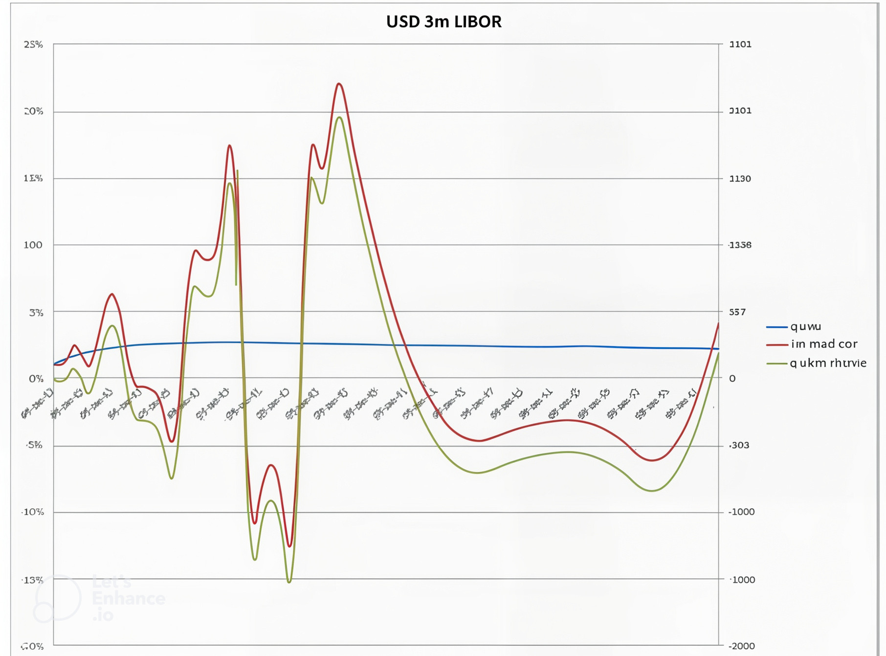

Curve Construction and Risk Framework (New Curve Framework)#
Table of Contents#
Curve Construction and Risk Framework (New Curve Framework)
3. Product / Payoff / Portfolio
3.3.8.7. Basis Swap (may be referred to as Tenor Basis Swap)
3.3.8.8. FX Forward - 3.3.8.8.1 Penalty function scaling - 3.3.8.9. Cross Currency Basis Swap - 3.3.8.10 I/O MTM Cross Currency Basis Swap - 3.3.8.11 Cross Currency Swap - 3.3.8.12 MTM Gross Currency Swap - 3.3.8.13 (Swap) Spread (spread between two swaps) - 3.3.8.14 Spread Constraint - 3.3.8.14.1 Payoff - 3.3.8.14.2 Penalty function scaling - 3.3.8.15 Fly (butterfly between three swaps) - 3.3.8.16 Fly Constraint (butterfly between any other three instruments) - 3.3.8.16.1. Payoff - 3.3.8.16.2. Calculate Coefficients - 3.3.8.16.3. Penalty function scaling - 3.3.8.17. Term Deposit - 3.3.8.18. Turn - 3.3.8.19 Jump - 3.3.8.20 Ibor Jump - 3.3.8.21 (Nominal) Bond - 3.3.8.21.1 Penalty function calculation - 3.3.8.22 Inflation Instruments Lag and Instrument Interpolation - 3.3.8.22.1. Inflation lag - 3.3.8.22.2 Inflation instrument interpolation - 3.3.8.22.2.1 Flat - 3.3.8.22.2.2. Linear - 3.3.8.22.2.3. Natural - 3.3.8.22.2.4. Swedish and Icelandic inflation bond interpolation - 3.3.8.22.2.5. Australian inflation bond interpolation - 3.3.8.22.2.6. Mexican inflation bond interpolation - 3.3.8.22.2.7. Unused interpolation types - 3.3.8.23 Inflation Zero Coupon Swap - 3.3.8.23.1. Payoff - 3.3.8.24. Inflation Future - 3.3.8.25. Inflation Bond - 3.3.8.25.1. Penalty function calculation - 3.3.8.26 Real Rate Swap - 3.3.8.27 Inflation Bond Spread (Coupon Spread) [NCF name: Inflation Asset Swap Spread] - 3.3.8.28 Seasonality
-
\end{bmatrix} - 7.1.5.1. Application - 7.1.5.2. Calculation of the Jacobian transform matrix - 7.1.5.2.1. Numerical method - 7.1.5.2.2. Algorithmic Differentiation - 7.1.5.2.3. Comparison of AD vs. FD - 7.1.6 Typical risk representations - 7.1.6.1. Single outright curve - 7.1.6.2. Market instruments - 7.1.6.3. All outright curves
1. Executive Summary#
This document is a technical description of the interest rate and inflation curve construction framework at Xsigma, internally known as the “new curve framework” (NCF). Throughout this document, NCF will be used as this model name.
The purpose of NCF is to provide a complete set of arbitrage-free curves using Rates & FX and inflation instruments (the universe of all possible market data). If further instruments are required, to those described in this document, then the framework provides flexibility to add them. The complete set will encompass all dependencies of fx/sccy market data, i.e., will be accurate, arbitrage-free, and globally consistent.
There are 3 critical parts to ensuring curves constructed have satisfied their purpose:
Instruments used in curve construction are correctly implemented, according to the (feder) model documentation, or as documented here.
All instruments reprice to a tolerance that is immaterial, and not likely to become material under existing, or stressed market conditions. Reprice means that the instrument price calculated from the output curves matches the input price for the instrument used in construction. NCF uses an optimisation to ensure the output curves reprice the instruments. The instrument misprice check thus provides reassurance on the accuracy of this optimisation.
Curves returned adhere to the interpolation method chosen.
The test for 2. is performed both before implementation and on a monthly cycle once in production - to check that we have a framework fit for purpose.
These curves will be used for pricing, valuation, and risk.
This same set of instruments available for curve construction can also be used to represent the risk factors for shocking curves and computing risk metrics, but these need not be the same instruments as used to build the curves.
The computation of shocked curves for these risk metrics will employ the rebuilding of a set of curves with the set of shocked market data. Thus, the test of accuracy of applying shocks will require checking of 2. above - that the shock is applied correctly.
It should be noted that this document describes the framework for curve construction and risk - it does not describe any particular implementation, except to provide explanation in sufficient detail.
2. Scope#
2.1 Model Purpose and Intended Usage#
2.1.1 Model Purpose#
2.1.2 Curve Construction#
Interest rate and inflation curves are a fundamental building block of pricing, valuation, and risk.
They will be used for linear products - interest rate swaps, FX Forwards, cross-currency swaps, zero-coupon inflation swaps, etc.
They will also be consumed by more complex prices, along with market data (e.g., vol surfaces) and other calibration parameters.
2.1.3 Risk Generation#
Risk management, and hence risk (in the case of curves, interest rate risk) is always required. This document will cover curve shocking.
The output of NCF for “risk” is not the metrics themselves, but the shocked curves consumed by a price rt or produce those metrics.
For the purposes of testing the Jacobian transform (7.3.1), delta is described in 7.1.4.
2.1.4 Curve Construction Requirements#
The purpose of NCF is to provide a flexible approach to constructing interest rate and inflation curves to satisfy the fundamental requirements above: accurate, arbitrage-free, and globally consistent.
2.1.4.1 Date/Node Structure#
To capture the market prices of liquid and tradeable instruments (rich market data), but also the underlying market structure, this can mean:
The points used to define the curve (node points) need not lie at the start/end of an instrument.
There may be more node points (degrees of freedom) than instruments (penalty functions), whereby smoothing is applied to the curve (additional penalty functions to enforce this smoothness).
2.1.4.2 Arbitrage-Free (Single Set of Market Data)#
We must build curves with one set of market data (arbitrage-free), by one set of market data we mean a set of market data for all curves captured in a single snap/timestamp. If there are cross-dependencies, e.g., we have three curves that may be inter-dependent then they must be built simultaneously (i.e., in a single process or stage) - 3m (IR Futures), 6m (Swaps) & OIS (discounting). Once these curves are constructed together, other curves that are purely dependent on them (e.g., 1m, 12m) can be constructed using the prices required from the same snap of data.
Typically, we build mid curves - this is the basis on which price inputs are quoted/used. A quoted price that is generated through consumption of the curves would include a bid/offer spread, CVA/FYA adjustment, etc.
Dependent curves - curves that depend on other curves (spread or basis). We build curves in stages e.g., if 1m is dependent on 3m & OIS (but these are not dependent on 1m), then build 1m in a later stage, after the two precedent curves. We retain a single set of market data, to ensure curves are arbitrage-free e.g., if we are using 3s1s basis to derive 1m, then this market data is synchronous with the 3m curve market data. With only two interdependent curves (one for projecting forward rates, one for discounting cashflows) this may be possible in a less sophisticated framework, but not with three interdependent curves.
This could also be expressed as:
Single set of market data used. We do not have any conflicts where two instruments define and are priced by the same point(s) on a curve e.g., we use both a 4y outright swap and 3y-4y-5y Fly to define the 4y point.
All market inputs reprice exactly from the curves. This requires the single set of market data to be the snapshot that produces all curves from that market data (no splitting of market data).
We can however, show one important counterexample to the “single set of market data”. This is the very short end (<6m) of USD Fed Fund curve. We may have quotes both for Fed Fund Futures and FRAOIS (LIBOR-OIS basis swaps) to define the curve. Neither may be the driver for the curve, so both sets of instruments can be used. This does not break the arbitrage-free principle as the most liquid instrument would be chosen, dependent on market conditions on a particular day.
2.1.4.3 Global Consistency#
There is a need to use “external” curves - to build a globally consistent set of market data, including fx/xccy inputs, by utilising a single set of USD (& EUR) curves in any currencies that depend on them.
Thus, in terms of the ‘same’ snap of market data, we can ensure the same USD market data is used in the USD curves, and in the curves driven by xccy/fx that use them.
2.1.4.4 Correct Cross-Currency Basis#
Also called financing bias. This requires the use of three curves to derive a 4th. It is not possible in a simple “yield curve” framework where instruments may only depend on a maximum of two curves.
2.1.4.5 Complex Interpolation#
Accurate pricing (a smooth or linear forward curve = no large “steps” in the forward rate, nor discontinuities) and 2.1.4.1 above lead to different interpolation requirements where:
Granular market data exists (e.g., a Futures strip informs quarterly granularity on a 3M LIBOR curve), as opposed to
The longer end of a curve (we may only have 20y, 25y, 30y … swap quotes).
Thus, a standard developed, where we require two different interpolation schemes for the two regions of the curve.
2.1.5 Intended Use#
2.1.5.1 Valuation and Curve Usage#
The above requirements drive the parameters used to build the curves. Once built, the curves would be queried in the valuation of trades. Types of query (and the types of curve from 3.3.4 below) would be:
Forward rates/forecast of fixing (forward rate or discount factor curve), i.e., for any index value required for the floating leg of a trade (swap, FRN, etc.). To give a more specific example, a curve would be built for a forecast of USD LIBOR 3M, this should be used only to project that index (e.g., not 6m LIBOR).
Discount factor to value a cashflow (discount factor curve), i.e., any valuation of any cashflow would query the correct discount curve built for that purpose. Example - we need to value the EUR leg of a EURUSD FX Forward or xccy swap, if, in our valuation framework, both legs are valued at USD OIS, the curve for the EUR leg is USD OIS “FX’d” into EUR or USDOS-discount curve in EUR. This curve would typically be derived from benchmark EURUSD fx forward and EURUSD xccy basis swap prices.
Index value (inflation curve). Index values can only be read from inflation curves, and inflation curves only return index values.
The query used in dependent on the price of any particular trade type.
2.1.5.2 Risk#
Risk in the NCF is associated somewhat from the flexibility of the curve construction above. There may be spreads between curves and spread/hy instruments that ensure efficient use of inputs, but do not represent a likely trade. Thus, to calculate risk involves:
The choice of instruments (the risk factors that will be displayed) – tenors, curve dependencies
An intermediate step of calculating the shocks to the chosen set of hedge instruments
Applying the effect of these back onto to the pricing curves.
This is achieved by the introduction of a risk curve/hedge curve (commonly known as “hedge curve template” - HCT), the instruments of which are bumped instead of those of the pricing curve. Such a HCT in the new framework is more of a collection of hedging instruments rather than an actual curve. In NCF, it is used to generate shocks which will then be applied the curves used for pricing/valuation.
The semi-analytic approach to shedding curves described above will allow us, for example, to apply shocks using a local interpolation method to curves with non-local interpolation (for examples, the shocks can have geometric interpolation, and the underlying curves – log-cubic). It also allows us to generate risk scenarios via linear superposition of the shocks. E.g., apply a parallel shift to all curves (instruments), and then apply individual instrument shocks.
2.2 Conceptual Soundness#
The choice of developing NCF was based on the 5 requirements (2.1.4.1-2.1.4.5) above, and the flexibility required for risk generation (separation of risk factors from the originating curve construction).
This was not done as a comparison to pre-existing approaches (i.e., at the time, 2006, the single-curve Yield Curve approach was in use throughout the bank), but to provide what was needed for business needs.
It was only be deemed fit for purpose once extensively used in pricing (2007-9). This is a robust test – during these years NCF underwent incremental development, and testing in a live production environment. If the curves (the curve construction) are reliable and accurate for pricing intraday, in real-time, they provide an accurate representation of the market data inputs.
We should note 2 things:
The soundness of curve construction is simple to determine – do the curves reprice the market data inputs, and follow the desired interpolation. There are tests below.
The magnitude of using curves daily, during trading hours for pricing – in C4 alone there are over 20000 EOD instances (# currencies * # business days * # regional closes). However, if looking for anomalous behaviour – a problem with optimisation, repricing of instruments or interpolation – one might estimate at least one build of the curves every minute. This is over 4,500,000 instances. If we were to look at each Jacobian rebuild in this time the number would rise to over 200 million.
Thus, additional justification or testing of conceptual soundness.
Between 2009 and 2011, risk was also tested. The primary test of risk is P&L explain – this was validated in testing for the release of NCF in EOD systems (TQPL) in 2011.
2.2.1 Literature Review#
The fundamental point of NCF is the use of optimisation to construct the curves. The greater flexibility – choice of instruments, nodes dates, construction of a single market through pre-building dependent curves – are in essence additional features that are the choice of Xsigma for the implementation.
In 2006, and for several years afterwards, (i.e., at the time of creation of NCF) the industry standard was for a traditional, single “bootstrapped” curve construction. Indeed, the problem was seen as one of smoothness & interpolation (Adams & van Deventer (1994), Hagan & West (2006) and Davis & Matiak-Pasier (2009)) and fitting market data accurately with the term structure of the underlying interest rate: Larson & Derry (1994), Brousseau (2002), Knoboldova & Kauermann (2004) and Hagan & West (2008)).
To also quote Adams (2001) “Smoothness is a desirable characteristic of interpolated zero curves not only is it intuitively appealing, but there is some evidence that it provides more accurate pricing of securities.”.
This is largely the opposite of the need for NCF. The development of the framework was to solve the problems with a single curve framework. Notably, the financial crisis of 2008-9 and the widening of Libor-OS basis in particular indicated the need for a different approach (Ito (2010), Bech & Lengwiler (2011)).
At the time of development, NCF was far from the market standard.
Between 2009 and 2013, this changed – the requirement to build multiple curves in a single optimisation became the standard (Mancusopoulos (2009) to Rugengarnana (2013)).
3. Product / Payoff / Portfolio#
3.1 Description#
There is no payoff, as such, from a curve construction framework. The output, however, is a set of curves that satisfies the fundamental requirements in 2.1.2 above. We can also note that the curves will be:
Accurate: The curves are defined by the businesses that mark them - FX, Rates Flow, and Inflation trading. Thus, if there is a market-making desk, they mark the curves. If we have no market-maker, then broker quotes (typically a feed from Reuters) would be used. The curves are reviewed by control functions (price tested against external curves - built with broker quotes or consensus data (Totem)).
Contains all curves required to price and value all products: Within this, we may have curves implied from another if no market (i.e., no liquid market data) exists - e.g., we may “copy” the 6m curve for use as a 12m curve if we have no quotes for 12m. This allows for a later implementation of that curve once market data becomes available. This allows a clean downstream process. Most importantly, this would allow risk to be shown for instruments against this curve.
Forecast curves and discount curves: We differentiate curves that are used for valuing cashflows (i.e., provide a discount factor at the payment date) from those that forecast a rate (e.g., a LIBOR curve) or an index (projected index-value). Thus, we may use an OIS curve in both ways.
3.1.1 Curve Engine#
We will use the term “curve engine” in this document. This refers to a single object that builds all the curves required. It will take in the inputs, perform the calibration/optimization, and return curve objects. It will also internally hold a Jacobian matrix.
3.2 Relationship to Other Approved Models/Payoffs#
3.3 Inputs#
3.3.1 AD or FD#
A parameter to govern whether the build of the engine, and hence production of the Jacobian matrix, is performed with AD or FD. See 4.1.1.3.
Before describing the inputs, we will describe three types of curve query (discount factor, forward rate, index value) and three types of curve (discount factor, forward rate, inflation) as seen from the perspective of both internal implementation and external interface. Internally, there are just two representations - discount factors or forward rates.
3.3.2 Curve Queries#
First, we could describe the types of data that can be validly requested from a curve:
3.3.2.1 Discount Factor#
At time \(T_0\) (curve is built at the evaluation date, ‘today’, \(T_0\)), we can query the curve for a discount factor at time \(t\):
3.3.2.2 Forward Rate#
We can query the curve for a forward rate (simple interest, no compounding) at time \(t\):
The tenor, or length of the forecast period, is \(\theta\).
\(R_{T_0,t_1,t_2-t_1}\) would indicate the continuously compounded rate between \(t_1\) and \(t_2\).
\(R_{T_0,t_i}\) would indicate the continuously compounded rate at \(t_i\).
3.3.2.3 Index Value#
This would typically be CPI (inflation); other uses are for the projection of a property index.
\(t_{\text{index.start}}\) is the date of the first inflation index value.
We may query for \(t\) in the past (the curve will contain historic index values as well as a projection of future index values).
3.3.3 Notation#
Above, we have used a strict notation, \(R_{T_0,t}^{x}\), \(df_{T_0,t}\), and \(CPI_{T_0,t}\), referencing the evaluation date, \(T_0\). However, we will, below, drop the \(T_0\) notation, since all curves are built at a single evaluation date, so in all notation, \(T_0\) would be the same.
3.3.4 Curve Types - Internal Representation#
3.3.4.1 Discount Factor Curves#
This would be the traditional representation of a “Yield Curve”.
This type of curve is internally represented as discount factors. The curve itself is a table of dates and discount factors, at a set of node points \((t_i)\). i.e., \((t_i, df_i)\), \(df_i = 1.0\). Intermediate discount factors, not on node dates, are interpolated.
Only a discount factor is directly queried from the curve. To query a forward rate from the curve, a start date (\(s\)), end date (\(e\)), and day count fraction (\(\tau_{s,e}\)) are required.
We query for any \(\theta\) - any term/period.
This type of curve can be used as a curve that represents the forecast of an index (e.g., 3M LIBOR) or for discounting.
3.3.4.2 Forward Rate Curves#
These only validly return a forward rate of tenor \(\theta\), \(R_{s}^{\theta}\). This forward rate will be of a single tenor, e.g., \(\theta\) is 3M (LIBOR). In this case, the curve is a table of dates and forward rates, at a set of node points \((t_i)\). The node points are connected using interpolation (one or more interpolators) in forward rate space.
They are currently not used in end-of-day (EOD) valuation curves, only for intraday pricing.
3.3.5 Curve Types - External Usage (Taxonomy)#
3.3.5.1 Discount Curve#
This is a curve used to discount cashflows.
A discount curve can only be a discount factor curve.
3.3.5.2 Forecast Curve#
This is a curve used to project the forward rate of a single index (forecast curve).
A forecast curve can be either a discount factor curve or forward rate curve.
3.3.5.3 Inflation (Index) Curves#
These are internally represented as discount factors, but externally will only return index values.
The curve will also contain the full published inflation (CPI) history.
Typically, the node dates will only be set at the inflation day of month (inflation_day_of_month) for the index. E.g., JPY CPI has inflation_day_of_month = 10, so all node dates in the JPY CPI curve will be on the \(10^{\th}\). This is enforced for all node dates derived from instrument interpolation (33.8.22.2), except for Natural.
\(b\) is the base date for the Index (latest published CPI), so the discount factor representation of the curve will be used for index value queries where \(t > b\), \(d{f_{b}} = 1.0\).
Index values can be queried at any date \(t\), \(t \geq b\).
If \(t < b\), the inflation curve will return a value with flat interpolation, i.e., if \(t_i \leq t < t_{i+1}\), \(CPI_{t} = CPI_{t_{i}}\). \(t_i, t_{i+1}\) are successive published CPIs and therefore fall on inflation,day_of_month.
3.3.6 Table#
We can represent this use of curve types and curve queries as a table:
Curve Type |
Discount Factor |
Forward Rate |
Index Value |
|---|---|---|---|
Discount Factor |
Y |
Y |
|
Inflation (Index) |
Y |
||
Forward Rate |
Y |
3.3.7 Price/Rate#
The calibration of the engine will be to fit the price \(p\) of each instrument. For the majority of instruments, \(p\) is the rate (swap, deposit, basis swap, …), price (Future, bond), forward points (FX Forward).
For the calibration, a penalty function is provided for each instrument for which an equivalent rate will be used (see 4.1.1 onwards for more detail on the optimization). Thus, a scaling factor may be required.
For a Future, the penalty will be scaled by -0.01.
For bonds, FX forwards, the scaling factor will be calculated (see 33.8.8, 33.8.21, 33.8.25). This is noted below.
This scaling will also be used when shocking curves for risk, since any instrument shock is also of an equivalent rate (7.1.1).
3.3.8 Instruments#
It is important to note that instruments for curve construction are not necessarily trades; they are chosen for one of two purposes:
Pricing: Accurate curve calibration, generally to allow ease of use, and the correct level of control (enough granularity, as choice of spot or forward space).
Risk: A choice of how to view risk in terms of bucketing (e.g., the same buckets across several curves to allow a view in a “grid”) and curve dependencies (e.g., choice of discounting, choice of a single (or multiple) curve(s) with outright instruments).
Either of these purposes can lead to a situation where a curve calibration instrument is neither a potential trade nor even has financial meaning. Examples:
Market Risk: Consumer risk for V&R in the same buckets across all curves - 1B, 1W, 1M, 3M, … if we have a 3M curve (forecast of 3m rate) that has instruments with no financial meaning and are untraded. Since curves for EOD risk/P&L are all discount factor curves, we can project any forward rate from those curves (3.3.2.2 above).
Curve Calibration: The 6M curve (e.g., EURIBOR 6M) may use 3m-tenor instruments at IMM intervals. This is only possible for a discount factor curve. This is to allow accurate marking of the curve (i.e., 6M has the same granularity as the 3M curve marked against, which has Futures on the IMM points), but is marked with instruments of the same tenor. If they were 6m instruments, each instrument would cover 2 IMM periods and would make it less easy to control the rate over a 3m period.
The following instruments can be used as inputs to curve construction:
Rates:
Swap legs
For greater detail on the formulae and calculation of all swap legs, and all swap types, please see “Linear Interest Rate Swaps” referenced below. MPV and DVD1 calculations would be used.
3.3.8.1 Convexity#
Convexity is only an input into the price of an IR Future (3.3.8A) - this will be input or calibrated prior to passing to NCE. In terms of NCE, it is therefore a manual input. In practice, there is no model in place for calculating convexity - it is based on market consensus. There may also be an indication of convexity published on a platform; e.g., Bloomberg.
No other instruments have convexity as an input. The swap formulae are linear, so if there is a swap instrument that would require convexity [misalignment of forecast and accrual periods, arithmetic averaging (Fed Fund), _], the convexity is taken to be removed from the price passed for curve construction. Thus, this could be termed the naive price. In this case, there would be no additional information from providing convexity as an input since “market price-convexity” is equivalent to “naive price” when input into such a linear swap formula.
Convexity is also ignored in Inflation Futures (3.3.8.24) and Fed Fund Futures (Generic Future in 3.3.8.4 below), so “naive price” would have to be input.
A specific example of this is in USD: Fed Fund (arithmetic averaging) vs. 3m LIBOR basis swaps (3.3.8.7) - a convexity adjustment is required, therefore this is calculated externally, and a naive price is the input. Thus, for this example, the output curve will be the underlying rate.
3.3.8.2 Daycount Fraction (\(\tau\))#
Below we make reference to the daycount fraction, \(\tau\). This will be calculated using the standard rules and conventions for the index/market. The principles, and different daycount bases themselves are described in “Description of Date Bases”.
3.3.8.3 Deposit/Forward Rate#
\(\tau_{s,e}\) is the daycount fraction between start \(s\) and end \(e\) of the forecast period.
3.3.8.4 Future#
These are exchange-traded products.
Interest Rate Future:
The exchange price of the Future, \(p^{\text{exchange}} = 100[1 - R_{s}^{\theta}]\)
The above formulae are implemented in NCF, identical to as described in the Model section of “Interest Rate Future’s Pricing”.
The calculation of \(R_{s}^{\theta}\) is purely governed by the convention of the instrument. The typical examples are:
3.3.8.4.1 1m/3m Future#
The trivial case, \(\theta = 1\text{m or }3\text{m}\), so \(R_{t}^{\theta}\) is purely the forward from the forecast curve at time \(t\).
3.3.8.4.2 Averaging Future#
Typically, this would be averaging of a daily rate (Fed Fund Future, 1M SONIA Future, or AUD 30 Day Future).
\(d = \#\) days in period
3.3.8.4.3 Compounding Future#
Typically, this would be compounding of a daily rate (e.g., SOFR and SONIA 3m Future).
3.3.8.4.4 Convexity and the Front Future#
For Averaging or Compounding Futures the front Future is the one that has already started (s is before evaluation date, e is after evaluation date). In this case convexity (see 3.3.8.1 above) cannot be supplied as an input.
3.3.8.4.5. Payoff#
Futures are bought in a number of contracts. There is a contract size. (e.g. ‘Three-Month EURIBOR Futures’ (EUREX) has a contract size of €1million, ‘30 Day Federal Funds Futures’ (CME) has a contract size of $5million).
Futures are cash-settled, so the payoff is:
For an Interest Rate Future \(p_{expiry}^{exchange}\) uses the reference interest rate (fixing) on the final settlement day. E.g. for the EURIBOR Future above, final settlement day is two exchange days prior to the third Wednesday of the respective maturity month e.g. Mon 13-Mar-2017 for the Mar-2017 Future. Payment (final payment) is the following day (Tue 14-Mar-2017).
3.3.8.4.6. Penalty function scaling#
This is scaled by -0.01.
3.3.8.5. Swap#
Where \(s = t_1\) and \(e = t_{n+1} = t_{m+1}\)
For greater detail on the formulae and calculation of all swap legs, and all swap types please see “Linear Interest Rate Swaps” referenced below.
3.3.8.6. Forward Spread#
A spread between two forward rates (Deposits). Typically used to define the Target curve as a spread to a Base curve.
3.3.8.7. Basis Swap (may be referred to as Tenor Basis Swap)#
A basis swap is an agreement to pay cashflows based one index and receive based on another. We term the two legs the “left leg” and the “right leg”. The left and right legs have their own forecast curves but use the same discount curve.
For greater detail on the formulae and calculation of all swap legs, and all swap types please see “Linear Interest Rate Swaps” referenced below.
3.3.8.8. FX Forward#
This instrument can only define a discount factor curve (3.3.4.1). The price of this instrument is for an FX swap with two exchanges of notional, at the instrument start and end dates. The quote would be in forward points (pips), using a point size:
\(P\) (Forward Points) \(=(FX_{e}-FX_{s})\cdot PointSize\)
PointSize is merely a scaling factor (primarily due to the small size of fx forwards). It is always a power of 10, roughly 10000/\(FX_{spot}\).
The FX quote is for units of term currency to one unit of base currency. In general this instrument represents a constraint on the discount factors such that:
\(FX_{t}=FX_{spot}\left[\frac{df_{t}^{Base}}{df_{spot}^{Base}}\frac{df_{spot}^{Term}} {df_{t}^{Term}}\right]\)
For an arbitrary start date:
\(p=P_{s,e}=\left(FX_{spot}\left[\frac{df_{e}^{Base}}{df_{spot}^{Base}}\frac{df_{spot}^{Term}} {df_{e}^{Term}}\right]-FX_{spot}\left[\frac{df_{s}^{Base}}{df_{spot}^{Base}}\frac{df_{spot}^{Term}} {df_{s}^{Term}}\right]\right)\cdot PointSize\)
\(=FX_{spot}\frac{df_{spot}^{Term}}{df_{spot}^{Base}}(\frac{df_{e}^{Base}}{df_{e}^{ Term}}-\frac{df_{s}^{Base}}{df_{s}^{Term}})\cdot PointSize\)
For a spot-starting FX forward:
\(P_{spot,s}=FX_{spot}\left(\left[\frac{df_{e}^{Base}}{df_{spot}^{Base}}\frac{df_{spot}^{ Term}} {df_{e}^{Term}}\right]-1\right)\cdot PointSize\ (1)\)
3.3.8.8.1 Penalty function scaling#
We need an equivalent rate, \(r\), relating the Term curve and Base curve to \(p\) so construct the equation:
\(1+r.\tau_{s,e}=\frac{df_{e}^{Base}}{df_{s}^{Base}}\frac{df_{spot}^{Term}}{df_{e}^{Term}}\). This will be used for our scaling of the price.
Thus we rearrange (1): Thus we rearrange (1):
The scaling factor of price-rate is therefore: $\( r=\frac{1+\frac{p}{Pointsize+FX_{spot}\left[\left(\frac{df_{e}^{Base}}{df_{spot}^{Base}}\frac{df_{spot}^{ Term}} {df_{e}^{Term}}\right)\right]}}{\tau_{spot,s}} \)$
3.3.8.9. Cross Currency Basis Swap#
This instrument can only define a discount factor curve (3.3.4.1).
A cross-currency basis swap is similar to the basis swap discussed above, except that there is an exchange of notional at start and end for each swap leg.
Both legs are floating and have different currency denomination.
\(A = \sum_{i=0}^{m-1} \left( R^{\theta_{\text{Right}_{t_j}^{\text{Right}}}} {\tau_{t_j,t_{t{j+1}}}^{\text{Right}}}{d f_{j+1}^{\text{Right}}}\right) - \left( d f_{t_0}^{\text{Right}} - d f_{t_m}^{\text{Right}} \right)\)
\(B = \sum_{i=0}^{n-1} \left( \left( R^{\theta_{\text{Left}_{t_i}^{\text{Left}}}} + p \right) {\tau_{t_i,t_{i+1}}^{\text{Left}}}{d f_{i+1}^{\text{Left}}}\right) - \left( d f_{t_0}^{\text{Left}} - d f_{t_n}^{\text{Left}} \right) \)
\(C = (\sum_{i=0}^{n} {\tau_{t_i,t_{i+1}}^{\text{Left}}}{d f_{i+1}^{\text{Left}}} )\)
\(p = (\frac{A - B}{C} )\) For greater detail on the formulae and calculation of all swap legs, and all swap types please see “Linear Interest Rate Swaps” referenced below.
3.3.8.10 I/O MTM Cross Currency Basis Swap#
A mark-to-market cross-currency basis swap is similar to the (non-MTM) cross-currency basis swap discussed above, except that the notional on the resetting leg is rescaled at each reset date with the ratio of the FX rate at the reset date to the FX rate at the previous reset date. The difference in the two notionsIs is paid as an interim notional exchange.
The right leg (without the spread) is the resetting or foreign, leg (typically USD).
The final rescaling is at the final reset date of the last cashflow.
The rescaling with the change in FX rate is essentially by the calculation of FX forwards, i.e. the ratio of the change in discount factor of the left leg divided by the change in discount factor of the right leg.
Thus the notional at reset date \(t_{j}\) is scaled by the following (i.e. the ratio of the FX rates from \(t_{o}\), start date, to \(t_{j}\), reset date of the \(\mu\)h cashflow.
\(\frac{df_{t_j}^{Left}}{df_{t_0}^{Left}} \cdot \frac{df_{t_0}^{Right}}{df_{t_j}^{Right}}\) (1)
Hence the interim notional exchange at \(t_{j}\), \(1\leq j<n\) is projected as:
\(\frac{df_{t_j-1}^{Left}}{df_{t_0}^{Left}} \cdot \frac{df_{t_0}^{Right}}{df_{t_j-1}^{Right}}-\frac{df_{t_j}^{Left}}{df_{t_0}^{Left}} \cdot \frac{df_{t_0}^{Right}}{df_{t_j}^{Right}} \) \(=\frac{df_{t_0}^{Right}}{df_{t_0}^{Left}} \cdot \left[\frac{df_{t_j-1}^{Left}}{df_{t_j-1}^{Right}}-\frac{df_{t_j}^{Left}}{df_{t_j}^{Left}}\right] \)
The value of this being:
\(\frac{df_{t_0}^{Right}}{df_{t_0}^{Left}} \cdot \left(df_{t_j-1}^{Left}\frac{df_{t_j}^{Right}}{df_{t_j-1}^{Right}}-df_{t_j}^{Left}\right) \)
Thus, applying (1) to the non-MTM case in 3.3.7.8 above, the formula for the PV of the right (resetting) leg alone is:
\(- \left( df_{t_0}^{Right} - \frac{df_{t_m-1}^{Left}df_{t_0}^{Right}}{df_{t_0}^{Left}df_{t_m-1}^{Right}} df_{t_m}^{Right} \right) \)
Or the price for calibration -B, C can be reused from the (non-MTM) Cross Currency Basis Swap:
\(p =\frac{A'-B}{C} \)
For greater detail on the formula and calculation of all swap legs, and all swap types please see “Linear Interest Rate Swaps” referenced below.
3.3.8.11 Cross Currency Swap#
This instrument can only define a discount factor curve (3.3.4.1). A cross-currency swap is a fix for float swap involving two currencies, one for each leg. In addition, there is an exchange of notional at the start and end of each swap leg. One leg (right leg, typically USD) pays floating rate and the other (left leg, domestic currency) pays fixed rate.
\( p \sum_{i=0}^{n-1} \left( {\tau_{t_i,t_{i+1}}^{\text{Left}}}{d f_{t_{i+1}}^{\text{Left}}}\right) - \left( d f_{t_0}^{\text{Left}} - d f_{t_n}^{\text{Left}} \right) = \sum_{j=0}^{m-1} \left( R^{\theta_{\text{Right}_{t_j}^{\text{Right}}}}{\tau_{t_j,t_{t{j+1}}}^{\text{Right}}} df_{t_{j+1}} \right) - \left( d f_{t_0}^{\text{Right}} - d f_{t_m}^{\text{Right}} \right) \)
For greater detail on the formula and calculation of all swap legs, and all swap types please see “Linear Interest Rate Swaps” referenced below.
3.3.8.12 MTM Gross Currency Swap#
This is not implemented in NCF.
3.3.8.13 (Swap) Spread (spread between two swaps)#
This might be quoted/traded as, for example, 10s30s spread.
\(p = p^{TargetSwap} - p^{BaseSwap}\)
The two swaps will be in the same currency, and use the same discount curve.
\(p = \frac{ \sum_{i=0}^{n^{Target}} \left( R^{\theta^{Target}}_{{t_j}\text{Target}} {\tau_{t_j^\text{Target},t_{{t_j} \text{Target}+1}}}{d f_{{t_j} \text{Target}+1}^{\text{}}}\right) }{\sum_{j^\text{Target}=i}^{m^\text{Target}} {\tau_{t_j^\text{Target},t_{j^\text{Target}+1}}}{d f_{{t_j} \text{Target}+1}^{\text{}}}}-\frac{ \sum_{i=0}^{n^{Base}} \left( R^{\theta^{Base}}_{{t_j}\text{Base}} {\tau_{t_j^\text{Base},t_{t{j\text{Base}+1}}}}{d f_{j^\text{Base}+1}^{\text{}}}\right) }{\sum_{j^\text{Base}=i}^{m^\text{Base}} {\tau_{t_j \text{Base},t_{j^\text{Base}+1}}}{d f_{t_{j\text{Base}}+1}^{\text{}}}}\)
3.3.8.14 Spread Constraint#
This is simply a generic version of the above, a spread between any other two instruments. It could replace the Spread instrument:
\(p = TargetCoefficient \cdot p^{TargetInstrument} + p^{BaseInstrument} \cdot BaseCoefficient\)
The defaults are TargetCoefficient = 1.0, BaseCoefficient = -1.0. These coefficients are configurable, i.e. static and decided at the design phase.
3.3.8.14.1 Payoff#
If a Spread instrument represents a tradeable instrument – i.e. both instruments used in the constraint are tradeable, then the payoff is simply the linear combination of the payoffs of the underlying instruments:
\(Payoff = TargetCoefficient \cdot \sum_{Legs,i} Payoff^{TargetInstrument} + BaseCoefficient \cdot \sum_{Legs,j} Payoff^{BaseInstrument}\)
3.3.8.14.2 Penalty function scaling#
The 2 instruments must both return a rate, or have a fixed scalar (could have a spread between a Future and a Deposit, for example, with appropriate scaling of the Future coefficient), or both should be FX Forwards (trading a spread, or both scaled).
Using a spread between 2 bonds would not be recommended. NCF is flexible, so it is not disallowed, but bond prices do not relate to each other via the above formula, in the same way as a rate instrument.
If the Spread Constraint is between 2 FX Forwards the calculation of the score for the penalty function scaling will be: $\( penalty = TargetCoefficient * (P^{TargetIncrement} - P^{TargetIncrement}_{Curves} ) * ScalingFactor^{TargetIncrement} + BaseCoefficient * (P^{BaseIncrement} - P^{BaseIncrement}_{Curves} ) * ScalingFactor^{BaseIncrement} \)$
The scaling for each instrument will be by the same calculation as for the FX Forward itself. Otherwise, the penalty is scaled by the same calculation as for the FX Forward.
3.3.8.15 Fly (butterfly between three swaps)#
This might be quoted/traded as, for example, 5-7-10 Fly.
\(p = p^{LeftSwap} - p^{RightSwap} + 2 \cdot p^{CentreSwap}\)
The three swaps will be in the same currency, same tenor \((\theta)\) and use the same discount curve.
\(p = \frac{ \sum_{i=0}^{n^{Left}} \left( R^{\theta^{Left}}_{{t_j}\text{Left}} {\tau_{t_j^\text{Left},t_{t{j\text{Left}+1}}}}{d f_{j^\text{Left}+1}^{\text{}}}\right) }{\sum_{j^\text{Left}=i}^{m^\text{Left}} {\tau_{t_j^\text{Left},t_{j^\text{Left}+1}}}{d f_{j^\text{Left}+1}^{\text{}}}}-\frac{ \sum_{i=0}^{n^{Right}} \left( R^{\theta^{Right}}_{{t_j}\text{Right}} {\tau_{t_j^\text{Right},t_{t{j\text{Right}+1}}}}{d f_{j^\text{Right}+1}^{\text{}}}\right) }{\sum_{j^\text{Right}=i}^{m^\text{Right}} {\tau_{t_j^\text{Right},t_{j^\text{Right}+1}}}{d f_{j^\text{Right}+1}^{\text{}}}}+2*-\frac{ \sum_{i=0}^{n^{Centre}} \left( R^{\theta^{Centre}}_{{t_j}\text{Centre}} {\tau_{t_j^\text{Centre},t_{t{j\text{Centre}+1}}}}{d f_{j^\text{Centre}+1}^{\text{}}}\right) }{\sum_{j^\text{Centre}=i}^{m^\text{Centre}} {\tau_{t_j^\text{Centre},t_{j^\text{Centre}+1}}}{d f_{j^\text{Centre}+1}^{\text{}}}}\)
3.3.8.16 Fly Constraint (butterfly between any other three instruments)#
This is simply a generic version of the above, it could replace the Fly instrument:
\(p = LeftCoefficient \cdot p^{LeftInstrument} + CentreCoefficient \cdot p^{CentreInstrument} + RightCoefficient \cdot p^{RightInstrument}\)
The defaults are CentreCoefficient = 2.0, RightCoefficient = -1.0.
To also generally 3 instruments must be of the same type, 3 instruments of the same type. NCF is flexible, so it is not disallowed, but this is a design principle.
3.3.8.16.1. Payoff#
If a Fly instrument represents a tradeable instrument – i.e. each instrument used in the constraint is tradeable, then the payoff is simply the linear combination of the payoffs of the underlying instruments:
\(Payoff = LeftCoefficient \cdot \sum_{Legs,i} Payoff^{LeftInstrument} + CentreCoefficient \cdot \sum_{Legs,j} Payoff^{CentreInstrument} + RightCoefficient \cdot \sum_{Legs,k} Payoff^{RightInstrument}\)
3.3.8.16.2. Calculate Coefficients#
These coefficients are configurable – i.e. static and decided at the design phase, or there is also the option of “Calculate Coefficients”. This sets the coefficients such that a price of 0 enforces the centre instrument price to be the centre of the other 2 prices. Use of this option requires further interpolation. • All 3 instruments have the same (end) tenor:
\(start\_date_{LeftInstrument} < start\_date_{CentreInstrument} < start\_date_{RightInstrument}\)
\(CentreCoefficient = 1.0\) \(LeftCoefficient = \frac{start\_date_{CentreInstrument} - start\_date_{RightInstrument}}{start\_date_{RightInstrument} - start\_date_{LeftInstrument}}\) \(RightCoefficient = \frac{start\_date_{LeftInstrument} - start\_date_{CentreInstrument}}{start\_date_{RightInstrument} - start\_date_{LeftInstrument}}\)
\(i.e.with p = 0\):
\(0 = (\frac{start\_date_{CentreInstrument} - start\_date_{RightInstrument}}{start\_date_{RightInstrument} - start\_date_{LeftInstrument}}) \cdot p^{LeftInstrument} + (\frac{start\_date_{CentreInstrument} - start\_date_{RightInstrument}}{start\_date_{RightInstrument} - start\_date_{LeftInstrument}}) \cdot p^{RightInstrument}+p^{CentreInstrument}\)
\(P_{CentreInstrument} = (\frac{start\_date_{CentreInstrument} - start\_date_{RightInstrument}}{start\_date_{RightInstrument} - start\_date_{LeftInstrument}}) \cdot p^{LeftInstrument} + (\frac{start\_date_{CentreInstrument} - start\_date_{RightInstrument}}{start\_date_{RightInstrument} - start\_date_{LeftInstrument}}) \cdot p^{RightInstrument}\)
• All 3 instruments have the same start date, \(end\_date_{LeftInstrument} < end\_date_{CentreInstrument} < end\_date_{RightInstrument}\)
\(CentreCoefficient = 1.0\) \(LeftCoefficient = \frac{end\_date_{CentreInstrument} - end\_date_{RightInstrument}}{end\_date_{RightInstrument} - end\_date_{LeftInstrument}}\) \(RightCoefficient = \frac{end\_date_{LeftInstrument} - end\_date_{CentreInstrument}}{end\_date_{RightInstrument} - end\_date_{LeftInstrument}}\)
\(Hence with p = 0\):
\(P_{CentreInstrument} = (\frac{end\_date_{CentreInstrument} - end\_date_{RightInstrument}}{end\_date_{RightInstrument} - end\_date_{LeftInstrument}}) \cdot p^{LeftInstrument} + (\frac{end\_date_{CentreInstrument} - end\_date_{RightInstrument}}{end\_date_{RightInstrument} - end\_date_{LeftInstrument}}) \cdot p^{RightInstrument}\)
3.3.8.16.3. Penalty function scaling#
All 3 instruments must both return a rate, or have a fixed scalar (could have a Fly Constraint between Futures and a Deposit, for example, with appropriate scaling of the Future coefficient). Therefore, as above, Bonds would not be relatively supported in a Fly Constraint. NCF is flexible, so it is not disallowed, but it is the same way as a rate instrument.
If the Fly Constraint is between 3 FX Forwards the calculation of the score for the penalty function scaling will be:
\( penalty = LeftCoefficient * (P^{LeftIncrement} - P^{LeftIncrement}_{Curves} ) * ScalingFactor^{LeftIncrement} + CentreCoefficient * (P^{CentreIncrement} - P^{CentreIncrement}_{Curves} ) * ScalingFactor^{CentreIncrement} + RightCoefficient * (P^{RightIncrement} - P^{RightIncrement}_{Curves} ) * ScalingFactor^{RightIncrement} \)
i.e. scaling for each instrument will be by the same calculation as for the FX Forward itself. Otherwise, the price is assumed to be a rate and will have no scaling.
3.3.8.17. Term Deposit#
This instrument can only define a discount factor curve (3.3.4.1). A term deposit represents a stream of floating payments (projection of the forward rate-spread) with an exchange of notional at the start and at the end. The use of a term deposit instrument is used to define a discount curve in a single currency. The price of the instrument is the spread which makes the contract PV to zero.
\(df_s - df_e = \sum_{i=0}^{n} (R_{t_i}^{\theta} + p)\tau_{t_i,t_i+1} df_{t_i+1}\)
\(p = \frac{(df_s - df_e) - \sum_{i=0}^{n-1} R_{t_i}^{\theta} \tau_{t_i,t_i+1} df_{t_i+1}}{\sum_{i=0}^{n-1} \tau_{t_i,t_i+1} df_{t_i+1}}\)
For greater detail on the formula and calculation of all swap legs, and all swap types please see ‘Linear Interest Rate Swaps’ referenced below.
3.3.8.18. Turn#
This instrument is non-tradeable, therefore has no payoff. This instrument defines a discount factor interpolator (3.3.4.1). It is implemented as a separate interpolator, with Geometric interpolation - 3.3.8.1 below.
Turn instruments can be used to add a spike rate across a short interval. Commonly used in the business day, regardless of the tenor of the curve (e.g. a 3m curve can be observed daily). Turn will be observed for three months in a 3m month curve (i.e. whenever the 3m forecast rate contains the Turn). It is commonly seen at the year-end but the same effect could be a less central observation date such as month ends (particularly Q1/5, FX curves). NCF places no restrictions on how Turns are used, they may overlap, extend more than one business day, and be used without imposing performance.
The modelling of a Turn is as two nodes and the corresponding continuously-compounded forward rate (see 3.3.8.3).
one positive Turn at the start of the Turn, \(p = P_s=R_{s,e-s}\)
one negative Turn at the end date of the Turn, \(-p\).
In terms of discount factors and node dates the implementation is:
\(df_k=df_{s-1d}, R_{s -1d,1d} = 0\)
The optimiser will solve for \(df_e\) to return \(p = R_{s,e-s} = \frac{1}{\tau}log\frac{df_s}{df_e}\)
\(df_{e+1}=df_{e}, or R_{e,1d} = 0\)
3.3.8.19 Jump#
This instrument is non-tradeable, therefore has no payoff. This instrument can only define a discount factor curve (3.3.4.1). It is implemented as a separate jump interpolator, with Geometric interpolation - 3.3.8.1 below.
A Jump is very similar to a Turn, but contains one step in the forward rate on a single date.
\(df_{s}=df_{s-1}, or R_{s-1} = 0\)
The optimiser will solve for \(df_{s+1}\) to return \(p = R_s\)
3.3.8.20 Ibor Jump#
This instrument is non-tradeable, therefore has no payoff.
Ibor jumps can be used to add jumps over a business day in the Ibor type curves. An Ibor jump can have more nodes than the turn. The jump date - 180 are the main node dates. All the dates that verify: [Jump date - (multiple of the tenor of the curve)] and [Jump date + (multiple of the tenor of the curve)] Months - 180] are also node dates. Adding a jump to a 3M curve at a certain date is done in practice by adding a turn jump in the opposite space on the other day fitting the main jump date. These nodes are added at [Jump date - 3M] and [Jump date + 3M] at the main jump date -3M]. The addition of node dates at [Jump date - xM] (where x is multiple of 3) with the right value will remove the unwanted jump. These previous nodes make a propagated jump found in the main jump date: \(\frac{df_{jumpDate - 1bd}}{df_{jumpDate}}\)
The constraint is: \(p = R_{jumpDate - 1bd, 1bd}=\frac{1}{\tau}log\frac{df_{jumpDate - 1bd}}{df_{jumpDate}}\)
And all the previous turns will be populated by:
\(\frac{df_{jumpDate - 1bd}}{df_{jumpDate}}=\frac{df_{jumpDate - xM- 1d}}{df_{jumpDate-xM}}\) and using \(df_{jumpDate - xM- 1d}= df_{jumpDate - (x- 1)d}\)
We can either set the score of the instrument, or we get from the interpolator of the jump sole or both the jump interpolator and the DF interpolator of the curve. The later will lead to see the exact value of the jump node by the jump input by the user. In the curve many jumps on the same curve but they shouldn’t have the same jump date. During the engine calibration each instrument’s given a score that will be minimized. It is usually target price - fitted price. The fitted price of the jump can either be the jump rate from the calibrated curve or the jump rate solely from the jump interpolator. We can have many jumps in the same curve, but they shouldn’t have the same jump date. Ibor jumps are only supported on curves with tenors x W and x M in aggregate.
3.3.8.21 (Nominal) Bond#
This instrument is a non-callable bullet bond. It can only define a discount factor curve (3.3.4.1). Prices are generated Rates Bond model. See Rates Bond model for the payoff description.
In a calibration to Price - Yield calculation is used, i.e. Calculate yield y, from dirty price p:
\(p = \sum_{i=1}^{n} \frac{C_i}{(1 + y/f)^{{f\tau}_i}} + \frac{R}{(1 + y/f)^{{f\tau}_n}}\)
where:
\(n\) = cashflows between settlement date and maturity date
\(c_i\) = cashflow at time \(i\)
\(f\) = compounding frequency
\(t_i\) = day count fraction between settlement date and coupon payment date \(i\)
\(R\) = redemption value
when a price is input, \(yield^{price}\) would be calculated for later use.
A bond can be input to the curve is respecified such that the bond (dirty) is returned, discounting the cashflows from the curve, i.e.:
\(p = \sum_{i=1}^{n} (c_i \cdot df_{t_i}) + R \cdot df_{t_n}\)
3.3.8.21.1 Penalty function calculation#
The bond yield is used in the calculation of the score for the penalty function. Thus,
\(penalty = (yield^{curves} - yield^{price})\)
Inflation:
These instruments will define an inflation curve only.
We can have instruments for which we require index values for dates in the past, so as mentioned in 3.3.3.3 above we have the concept of a base date, \(b\), the latest date for which the index has been published.
\(b < T_0, df_{T_0,b} = 1\), so with positive inflation, \(df_{T_0,T_0} \leq 1\)
\(b < T_0\) is a point of inflation calculation (that will calculate inflation must be for a historic date. Some indices contain rules for projection from this date to “today”, thus it would be conceivable to have \(b =T_0\). But \(b > T_0\) It is impossible (there are no future inflation values).
Note if \(t < b\), the curve will not query discount factor, only the published/embedded index value, \(CPI_t\).
The published market data for an inflation curve will contain the full index history up to the base date.
An instrument will typically have a start and end.
So if we have:\(\frac{CPI_s}{CPI_e}\)
\( s \geq b : \frac{CPI_s}{CPI_e}\) (1)
\(s <= \frac{df_b}{df_s}\frac{CPI_b}{CPI_s}=\frac{1}{df_s}\frac{CPI_b}{CPI_s}\)
For somewhat we will use (1) in the below instruments, when necessary.
3.3.8.22 Inflation Instruments Lag and Instrument Interpolation#
3.3.8.22.1. Inflation lag#
Inflation instruments will, in general, have a lag (a months) to deduct from the reference date to determine the index/date. This is necessary since the index will always be published with a delay and will always be based on the collation of historic data, so will, at best, be for the preceding month. Typical lags are 2 or 3 months.
3.3.8.22.2 Inflation instrument interpolation#
See 3.3.3.3 above. The node dates in any inflation curve will be on inflation day of month, the day the interpolation of the curve will be set (3.3.3.4 to 3.3.3.4 below). However, inflation, inflation instrument interpolation in NCF: Flat interpolation and Linear interpolation.
However, inflation instrument interpolation will typically also define an interpolation. There are 2 examples of inflation instrument interpolation in NCF: Flat interpolation and Linear interpolation.
For both these, the curve will be queried for \(CPI_t\) where \(t\) is inflation day of month.
We define the set \(CPI_t\) where \(t\) is inflation day of month.
3.3.8.22.2.1 Flat#
There is no interpolation of the inflation index intra-month.
If \(t_1 \leq t \leq t_2\), the curve will be queried for \(CPI_{t_1}\).
In practice, if the inflation index has \(inflation\_day\_of\_month = 1\), then \(CPI_t\) is relevant for the entire month in which it falls.
3.3.8.22.2.2. Linear#
This interpolates the change in index between fixing points uniformly over the actual number of days in the period.
\(CPI_t = CPI_{t_i} + (CPI_{t_{i+1}} - CPI_{t_i}) \frac{(t - t_i)}{(t_{i+1} - t_i)}, t_i \leq t \leq t_{i+1}\)
This is identical to CPILinear for the curve.
For bonds it is also known as the Canadian Model with \(inflation\_day\_of\_month = 1\). It is also the case for some inflation bond interpolation, with a lag of 3, and \(inflation\_day\_of\_month = 8\).
3.3.8.22.2.3. Natural#
The above does not apply, interpolation of the curve will be used when querying for \(CPI_t\). This interpolation method has never been required in NCF.
3.3.8.22.2.4. Swedish and Icelandic inflation bond interpolation#
This is identical to Linear except the ratio applied to \((CPI_{t_2} - CPI_{t_1})\) is different:
\(CPI_t = CPI_{t_i} + (CPI_{t_{i+1}} - CPI_{t_i}) \frac{\min(t - t_i, 29)}{30}, t_i \leq t \leq t_{i+1}\)
3.3.8.22.2.5. Australian inflation bond interpolation#
The CPI values for Australian linkers are published every 3 months and are applicable to the entire quarter, they are associated with the mid-point of the quarter. We associate the CPI values with 1 Jan, 1 Apr, 1 Jul and 1 Oct. The inflation multipliers for the cashflows are much more closely linked to the bond’s actual coupon payment dates. They are defined by:
\(K_{t_i} = \left[K_{t_{i-1}} \left(1 + \left [\frac{1}{2} \left(\frac{CPI_{t_i-6M} }{CPI_{t_i-12M}}\right)\right]_4\right)\right]_4\)
\(t_i\) is the date of a coupon payment. If \(t_i\) is the first coupon payment then \(K_n\) is defined (usually 1). The formula expresses that the rate of inflation from one quarter to the next average percentage change in CPI over two quarters prior to that in which the next interest payment falls. The square brackets with subscript indicate indexing of decimals.
Index ratios for dates between coupon payment dates are defined by:
\(K_{t} = K_{t_i} \left(1 + \left [\frac{1}{2} \left(\frac{CPI_{t_i-6M} }{CPI_{t_i-12M}}\right)\right]_4\right)^{-(t_i - t)/(t_i - t_{i-1})}, t_i \leq t \leq t_{i+1}\)
The entire definition assumes that Australian inflation-linked bonds has a coupon frequency of 3 months.
3.3.8.22.2.6. Mexican inflation bond interpolation#
De linkers values. Daily UDI (Unidades) values are derived from the twice-monthly published CPI values. We associate the CPI values with the mid-point of the month, one starting on the 1st of a month and ending on the 25th of the same month, another starting on the 26th of the previous month and ending on the 10th of the next month.
We can define the UDI value:
\(UDI_t =UDI_{startofPeriod} \left(\frac{CPI_{startofPeriod}}{CPI_{t-1M}}\right)^{(t-startofPeriod)/lengthofPeriod} \)
The base value is 1.1676/48 on 25 Jan 1995.
3.3.8.22.2.7. Unused interpolation types#
I.e. these are implemented for the inflation bonds, but these bonds are not used in NCF:
Colombian inflation bond interpolation
Chilean inflation bond interpolation
Argentine inflation bond interpolation
Uruguayan inflation bond interpolation
Brazilian inflation bond interpolation
3.3.8.23 Inflation Zero Coupon Swap#
The price of the zero coupon swap is defined through the inflation rate between start and end date. This defines the index at a future date.
\(e > b\)
With compounding (frequency \(f\)), \(\tau_{s,e}f > 1.0\):
\(p = \left[ \left(\frac{CPI_{e-lag}}{CPI_{s-lag} } \right)^{\frac{1}{\tau_{s,e}f}} - 1\right]f\)
If \(\tau_{s,e}f \leq 1.0\)
\(p = P_{b,s,e} = \left(\frac{CPI_{e-lag}}{CPI_{s-lag} } \right){\frac{1}{\tau_{s,e}}}\)
In NCF production, only compounding, annual frequency are used:
\(\tau_{s,e} \leq 1.0\)
\(p = \left(\frac{CPI_{e-lag}}{CPI_{s-lag} } \right){\frac{1}{\tau_{s,e}}}\)
\(\tau_{s,e} > 1.0\)
\(p = \left(\frac{CPI_{e-lag}}{CPI_{s-lag} } \right)^{\frac{1}{\tau_{s,e}}} - 1\)
Also it can be noted that for those instruments used in NCF \(\tau\) is always a whole number of years, \(y\), in the instruments used (using a daycount basis of 30/360), so we can simplify to a single formula:
\(p = \left( \frac{CPI_{e-lag}}{CPI_{s-lag} } \right)^{\frac{1}{y}} - 1\)
3.3.8.23.1. Payoff#
The payoff for an inflation zero coupon swap, using the simplified case from (1):
Notional = \(N\) (we notional is receiving fixed)
Payment are:
Fixed leg: \(N((1 + p)^{y} - 1)\)
Floating leg = \( -N\left[ \left(\frac{CPI_{e-lag}}{CPI_{s-lag} } \right)- 1\right]\)
\(df_e\) = Discount factor at end (payment date)
PV = \(N\left[(1 + p)^{y} - 1\right]df_e-N\left[ \frac{CPI_{e-lag}}{CPI_{s-lag} }- 1\right]df_e= N\left[(1 + p)^{y} - \frac{CPI_{e-lag}}{CPI_{s-lag} }\right]df_e\)
3.3.8.24. Inflation Future#
[Pending production use]
The price of the inflation futures is defined through the inflation rate between start and end date.
\(p = P_{b,s,e}=100 \cdot \left[1 - \left(\frac{CPI_e}{CPI_s} - 1\right)\frac{1}{\tau_{s,e}}\right]\)
3.3.8.25. Inflation Bond#
This instrument defines an inflation curve (3.3.3.5). Prices are generated by the Rates bond model. For details on inflation-linked bond model.
The simple general case is a calculation of inflation-linked bond price/yield.
In calibration to Price - Yield calculation is used, i.e. Calculate yield \(y\), from dirty price \(p\):
\(p = \sum \frac{c_i}{(1+y)^{t_i}} + \frac{R}{(1+y)^{n}}\)
where: \(n\) = cashflows between settlement date and maturity date \(c_i\) = cashflow at time \(i\) \(f\) = compounding frequency \(t_i\) = day count fraction between settlement date and coupon payment date \(i\) \(R\) = redemption value
The inflation-linked bonds generate inflation coupons defined as below and require the inflation curve:
\(c_i = c \cdot \frac{CPI_{{t_i}-lag}}{CPI_{base}}\)
\(c\) = fixed coupon at issue (base date)
\(CPI_{{t_i}-lag}\) = inflation index at time \(t_i\), adjusted for lag
\(CPI_{base}\) = base inflation index of the bond (issue date)
The similar implementation sees a computation as follows. For details on other inflation bond price/yield model implementation see “Inflation-linked bond model”.
\(p = \sum \frac{c \cdot \frac{CPI_{{t_i}-lag}}{CPI_{base}}}{(1+\frac{y}{f})^{f\tau_i}} + \frac{R \cdot \frac{CPI_{{t_n}-lag}}{CPI_{base}}}{(1+\frac{y}{f})^{f\tau_n}}\)
\(n\) = # cashflows between settlement date and maturity date
\(c_{i}\) = cashflow at time \(t_i\)
\(f\) = compounding frequency
\(\tau_{i}\) = day count fraction between settlement date and coupon payment date \(i\)
\(R\) = redemption value
When a price is input, \(yield^{dirty}\) would be calculated for later use.
A bond as an input to the curve is respecified such that the bond (dirty) is returned, discounting the cashflows from the curve, i.e.:
\(p = \sum (c \cdot \frac{CPI_{{t_i}-lag}}{CPI_{base}} \cdot df_{t_i}^{Nominal}) + R \cdot \frac{CPI_{{t_n}-lag}}{CPI_{base}} \cdot df_{t_n}^{Nominal}\)
3.3.8.25.1. Penalty function calculation#
The bond yield (real yield) is used in the calculation of the score for the penalty function. Thus,
\(penalty = (real\_yield^{curves} - real\_yield^{price,discountcurve})\)
3.3.8.26 Real Rate Swap#
A real rate swap is analogous to a cross-currency swap. One leg pays a fixed rate inflation, the other a floating rate:
\(p\sum_{i=1}^{n-1}(\frac{CPI_{{t_{i+1}}-lag}}{CPI_{s-lag}}) \cdot \tau_{t_i,t_{i+1}}df_{t_{i+1}}^{Nominal} +(\frac{CPI_{e-lag}}{CPI_{s-lag}}) \cdot df_{e}^{Nominal}=\sum_{j=1}^{m-1} R_{t_j}^{\theta}\cdot \tau_{t_j,t_{j+1}}df_{t_{j+1}}^{Nominal} + df_{e}^{Nominal}\)
\(p=\frac{\sum_{j=1}^{m-1} R_{t_j}^{\theta}\cdot \tau_{t_j,t_{j+1}}df_{t_{j+1}}^{Nominal} + df_{e}^{Nominal}(1-(\frac{CPI_{e-lag}}{CPI_{s-lag}}))}{\sum_{i=1}^{n-1}(\frac{CPI_{{t_{i+1}}-lag}}{CPI_{s-lag}}) \cdot \tau_{t_i,t_{i+1}}df_{t_{i+1}}^{Nominal}}\)
3.3.8.27 Inflation Bond Spread (Coupon Spread) [NCF name: Inflation Asset Swap Spread]#
The price of this instrument is the spread added to the inflation-adjusted coupon payments (the coupons of an inflation-linked bond), that when discounted with the nominal (bond) discount curve will reprice the inflation bond.
The simple/general cases is a computation as follows. For details on other inflation bond price/yield implementations see “inflation-linked bond model”.
base is the base date for the CPI of the bond.
\(\sum_{i=1}^{n}(c+p\tau_{i})\left(\frac{(CPI_{t_i-lag})}{CPI_{base}}\right)df_{t_i}^{Nominal}+\left(\frac{(CPI_{t_n-lag})}{CPI_{base}}\right)df_{t_n}^{Nominal}=P_{\textrm{InflationBond}}\)
It should be noted that the instrument has 2 ‘price’ inputs (somewhat analogous to price and convexity for an IR Future, 3.3.8.4). )
1.\(p\) (spread)
2.\(P_{\textrm{InflationBond}}\)
\(p=\frac{P_{\textrm{InflationBond}}-C\sum_{i=1}^{n}\left(\frac{(CPI_{t_i-lag})}{CPI_{base}}\right)df_{t_i}^{Nominal}-\left(\frac{(CPI_{t_n-lag})}{CPI_{base}}\right)df_{t_n}^{Nominal}}{\sum_{i=1}^{n}\tau_{t_i}\left(\frac{(CPI_{t_i-lag})}{CPI_{base}}\right)df_{t_i}^{Nominal}}\)
3.3.8.28 Seasonality#
Seasonality may not be seen as an instrument but it does define an interpolator, so we include it here.
Inflation seasonality is the tendency of inflation indices to exhibit different rates of growth at certain times of the year. The inflation curve deals with seasonality by allowing the definition of a series of seasonal terms. These define a set of monthly factors which are applied to the inflation indices.
They should be viewed as an instrument because risk can be returned against them. This risk is consumed from EOD systems by both trading and control functions.
To implement seasonality an interpolator is created with the 12 monthly terms repeated each year. This is then used in the building and repricing of the other inflation instruments for the construction of the final curve.
Seasonality is defined as 12 values (Jan-Dec), that can be rescaled such their product is 1.0. These factors form the 12 repeating discount factors of the seasonality curve/interpolator.
Thus a set of seasonality factors: jar=0.987702, Feb=0.990201, Mar=0.999500, Apr=1.000000, May=1.000000, Jun=0.995959, Jul=0.993081, Aug=0.994461, Sep=0.997300, Oct=0.998000, Nov=0.996381, Dec=0.998300
\(d_{10} = 0.991353, d_{11} = 0.993061, d_{12} = 1.003194, d_{13} = 1.004499, d_{14} = 1.003696, d_{15} = 1.003290, d_{16} = 0.996772, d_{17} = 0.998297, d_{18} = 1.000896, d_{19} = 1.001689\)
This normalization is made internally in NCF. These discount factors would be for the whole of the month in question, there is no interpolation. They then repeat every year.
3.3.9 Interpolation#
A curve will consist of one or more interpolators (e.g. if seasonality is used this introduces a second interpolator to a curve). Each of these interpolators has two facets:
the types of interpolation available
the potential split of interpolation into two sections: interpolation of one type to a split date, interpolation of another type after the split date.
Types of interpolation
\(t_1\) is the set of node dates defined for a curve. For a discount factor curve this would be a set of \(\{t_0, d_1\}\), \((d_1 = 1.0)\).
For a forward rate curve this would be a set of \(\{t_0, d_1\}\).
Interpolation is often a choice between: a) Local interpolation - \(d_0\)(will only depend on \(\{t_0, d_1\}\), where \(t_1 < t < t_1\)). b) Smooth, non-local. Above condition does not hold.
3.3.9.1 Geometric/log linear#
Local discount factor curve This is linear interpolation of the natural logarithm of the discount factors.
\(\ln(df_t) = \frac{t-t_i}{t_{i+1}-t_i} \ln(df_{t_{i+1}}) + \frac{t_{i+1}-t}{t_{i+1}-t_i}\ln(df_{t_i})\)
\(\ln(df_t) = (t-t_i)\frac{\ln(df_{t_{i+1}}) - \ln(df_{t_i})}{t_{i+1}-t_i} + \ln(df_{t_i})\)
We can note that \(\frac{\partial}{\partial_t} \ln(df_{t_{i}}) = \frac{\ln(df_{t_{i+1}}) - \ln(df_{t_{i}})}{t_{i+1} - t_{i}}\).
3.3.9.1.1 Extrapolation#
\( \frac{\partial}{\partial_t} \ln(df_{t_{n}}) = \frac{\ln(df_{t_{n}}) - \ln(df_{t_{n-1}})}{t_{n} - t_{n-1}} \)
\( \ln(df_{t_{n}}) = (t_{n} - t_{0}) \left( \frac{\ln(df_{t_{n}}) - \ln(df_{t_{n-1}})}{t_{n} - t_{n-1}} \right) + \ln(df_{t_{n}}), \, t > t_{n}\)
3.3.9.2 Linear Zero Rate Interpolation (‘Exponential’)#
Currently implemented interpolation type ‘Exponential’ is equivalent to linearly interpolating the continuously compounded zero rates from the interpolation.
\( \frac{\ln(df_t)}{t - t_r} = \left( \frac{t - t_i}{t_{i+1} - t_i} \right) \frac{\ln(df_{t_{i+1}})}{t_{i+1} - t_r} + \left( \frac{t_{i+1} - t}{t_{i+1} - t_i} \right) \frac{\ln(df_{t_i})}{t_i - t_r} \)
\( t_i \leq t \leq t_{i+1} \)
\( \ln(df_t) = \left( \frac{t - t_r}{t_{i+1} - t_i} \right) \left( \frac{t - t_i}{t_{i+1} - t_r} \right) \ln(df_{t_{i+1}}) + \left( \frac{t_{i+1} - t}{t_i - t_r} \right) \ln(df_{t_i}) \)
\( \ln(df_t) = \frac{1}{t_{i+1} - t_i} \left( \left( \frac{t^2 - (t_i + t_r)t + t_i t_r}{t_{i+1} - t_r} \right) \ln(df_{t_{i+1}}) + \left( \frac{-t^2 + (t_{i+1} - t_r)t - t_{i+1}t_r}{t_i - t_r} \right) \ln(df_{t_i}) \right) \)
\( \frac{\partial}{\partial t} \ln(df_t) = \frac{1}{t_{i+1} - t_i} \left( \left( \frac{2t - (t_i + t_r)}{t_{i+1} - t_r} \right) \ln(df_{t_{i+1}}) + \left( \frac{-2t + (t_{i+1} - t_r)}{t_i - t_r} \right) \ln(df_{t_i}) \right) \)
3.3.9.2.1. Extrapolation#
Extrapolation is geometric:
\( \frac{\partial}{\partial t} \ln(df_{t_n}) = \frac{1}{t_n - t_{n-1}} \left( \left( \frac{2t_n - (t_{n-1} + t_r)}{t_n - t_r} \right) \ln(df_{t_n}) + \left( \frac{-2t_n + (t_n - t_r)}{t_{n-1} - t_r} \right) \ln(df_{t_{n-1}}) \right) \)
\( \frac{\partial}{\partial t} \ln(df_{t_n}) = \frac{1}{t_n - t_{n-1}} \left( \left( \frac{2t_n - t_{n-1} - t_r}{t_n - t_r} \right) \ln(df_{t_n}) - \left( \frac{t_n + t_r}{t_{n-1} - t_r} \right) \ln(df_{t_{n-1}}) \right) \)
\( \ln(df_t) = (t - t_n) \left( \frac{1}{t_n - t_{n-1}} \left( \left( \frac{2t_n - t_{n-1} - t_r}{t_n - t_r} \right) \ln(df_{t_n}) - \left( \frac{t_n + t_r}{t_{n-1} - t_r} \right) \ln(df_{t_{n-1}}) \right) \right) + \ln(df_{t_n}), t > t_n \)
3.3.9.3. Log-cubic#
Smooth, discount factor curve
The log cubic interpolation algorithm uses cubic spline interpolation on the natural log of the discount factors. This creates a smooth forward curve. While Geometric and Exponential interpolation are only continuous in the function itself (i.e. the first derivative is discontinuous at the node points); Cubic interpolation is continuous up to the second derivative.
This technique involves fitting a cubic polynomial to each pair of known points in the curve. The curve is built from a series of cubic segments. Boundary conditions are imposed to ensure the curve is smooth at the points where two segments are joined together.
With cubic splines for each segment (between successive node dates) of the form:
\( \ln df_t = f_i(t) = p_t(t - t_i)^3 + q_t(t - t_i)^2 + r_t(t - t_i) + \ln df_{t_i} \)
and the conditions for continuous first and second derivative at \( t_{i+1} \):
\( f_i(t_{i+1}) = \ln df_{t_{i+1}}, 0 \leq i \leq n - 1 \)
\( \partial_t f_i(t_{i+1}) = \partial_t f_{t_{i+1}}(t_{i+1}), 0 \leq i \leq n - 2 \)
\( \partial_t^2 f_i(t_{i+1}) = \partial_t^2 f_{t_{i+1}}(t_{i+1}), 0 \leq i \leq n - 2 \)
we have 3n unknowns and 3n-2 equations. two further conditions can be obtained by setting either the first or second derivative at the end points to a specific number, i.e. there are 4 possible combinations of end point specifications:
\(\partial_t f_0(t_0), \partial_t f_{n-1}(t_n)\)
\(\partial_t f_0(t_0), \partial_t^2 f_{n-1}(t_n)\)
\(\partial_t^2 f_0(t_0), \partial_t f_{n-1}(t_n)\)
\(\partial_t^2 f_0(t_0), \partial_t^2 f_{n-1}(t_n)\)
In NCF 4) is employed, with \(\partial_{t}^{2}f_{0}(t_{0}) = \partial_{t}^{2}f_{n-1}(t_{n}) = 0\).
Setting \(h_{i} = t_{i+1} - t_{i}\) we can reduce the three continuity conditions to one equation:
\( h_{i-1}q_{i-1} + 2(h_{i-1} + h_{i})q_{i} + h_{i}q_{i+1} = 3\left(\frac{\ln df_{t_{i+1}} - \ln df_{t_{i}}}{h_{i}} - \frac{\ln df_{t_i} - \ln df_{t_{i+1}}}{h_{i-1}}\right), 1 \leq i \leq n-1 \)
This is a tridiagonal system of equations. If the first derivative at the left most end point is specified the additional equation
\( 3h_{0}q_{0} + 2(3h_{0} + 2h_{1})q_{1} + h_{1}q_{2} = 3\left(\frac{\ln df_{t_{2}} - \ln df_{t_{1}}}{h_{1}} - \partial_{t}f_{0}(t_{0})\right) \)
is required. If the first derivative at the right most end point is specified the additional equation
\( h_{n-1}q_{n-1} + 2h_{n-1}q_{n} = 3\left(\partial_{t}f_{t_{n-1}}(t_{n}) - \frac{\ln df_{t_{n-1}} - \ln df_{t_{n}}}{h_{n-1}}\right) \)
is required. The tridiagonal system can be solved with the Thomas algorithm.
Once the \(q_{i}\)’s have been calculated the other parameters can be determined as
\( r_{i} = \ln df_{t_{i}} - \frac{h_{i}}{3}(2q_{i} + q_{i+1}) \)
\( p_{i} = \frac{1}{3h_{i}}(q_{i+1} - q_{i}) \)
3.3.9.3.1. Extrapolation#
Extrapolation is geometric. I.e. since condition 4) is met, \(\partial_{t}^{2}f_{n-1}(t_{n}) = 0\), the interpolation is C2 continuous.
\( t > t_{n-1}: f_{i}(t) = \ln df_{t} = p_{n-1}(t - t_{n-1})^{3} + q_{n-1}(t - t_{n-1})^{2} + r_{n-1}(t - t_{n-1}) + \ln df_{t_{n-1}} \)
\( \frac{\partial}{\partial t}\ln(df_{t_{}}) = p_{n-1}(3t^{2} - 6t_{n-1} + 3t_{n-1}^{2}) + q_{n-1}(2t - 2t_{n-1}) + r_{n-1} \)
Thus \(\frac{\partial}{\partial t}\ln(df_{t_{n}}) = 3p_{n-1}(t_{n} - t_{n-1})^{2} + 2q_{n-1}(t_{n} - t_{n-1}) + r_{n-1}\)
\( \ln(df_{t_{}}) = (t - t_{n})(3p_{n-1}(t_{n} - t_{n-1})^{2} + 2q_{n-1}(t_{n} - t_{n-1}) + r_{n-1}) + \ln(df_{t_{n}}), t > t_{n} \)
3.3.9.4. CPI linear (inflation curves only)#
3.3.9.4.1 Local, Discount Factor Curve (Inflation Representation)#
Inverse linear interpolation interpolates linearly between the inverse of the discount factors.
\( \frac{1}{df_{t_{}}} = \left(\frac{t - t_{i}}{t_{i+1} - t_{i}}\right)\frac{1}{df_{t_{i+1}}} + \left(\frac{t_{i+1} - t}{t_{i+1} - t_{i}}\right)\frac{1}{df_{t_{i}}} \)
3.3.9.4.1. Extrapolation#
Extrapolation is CPI Linear:
\( \frac{1}{df_{t_{}}} = \left(\frac{t - t_{n-1}}{t_{n} - t_{n-1}}\right)\frac{1}{df_{t_{i}}} - \left(\frac{t - t_{n}}{t_{n} - t_{n-1}}\right)\frac{1}{df_{t_{i+1}}}, t > t_{n} \)
3.3.9.5. Linear Rate#
3.3.9.5.1 Local, Forward Rate Curve#
Linear interpolation of the forward rate
\( R_{t}^{\theta} = \left(\frac{t - t_{i}}{t_{i+1} - t_{i}}\right)R_{t_{i+1}}^{\theta} + \left(\frac{t_{i+1} - t}{t_{i+1} - t_{i}}\right)R_{t_i}^{\theta} \)
3.3.9.5.1. Extrapolation#
Extrapolation is flat:
\( R_t^\theta = R_{t_n}^\theta, \quad t > t_n \)
3.3.9.6. Quadratic Rate#
Smooth, forward rate curve
This method is very similar to cubic spline. It fits a series of points using quadratic splines.
The quadratic is of the form:
\( f_i(t) = p_i(t - t_i)^2 + q_i(t - t_i) + r_i \)
\( f_i'(t) = 2p_i(t - t_i) + q_i \quad (1) \)
\( f_i'(t_i) = q_i \quad (2) \)
Each portion is fitted according to the constraint:
\( f_i'(t_{i+1}) = f_{i+1}'(t_{i+1}) \)
From (1):
\( f_i'(t_{i+1}) = f_{i+1}'(t_{i+1}) = q_{i+1} = 2p_i(t_{i+1} - t_i) + q_i \quad (3) \)
We have a boundary condition, with two options available:
An initial gradient (left gradient) supplied \( f_i'(t_i) \).
A final gradient (right gradient) supplied, \( f_x'(t_x) \). If this were the boundary condition, the interpolation is effectively run backwards such that the same algorithm applies.
This is the one implemented in NCF – the curve is flat after the last node. Hence:
\( f_x'(t_x) = 0 \)
We also have:
\( f_i(t_i) = r_i \quad (4) \)
3.3.9.6.1. Right gradient#
We also have continuity in the derivative:
\( f_x'(t_x) = f_{x-1}'(t_x) = 0 \)
This can be used to project “backwards” the coefficients of the interpolator:
\( r_{i+1} = p_i(t_{i+1} - t_i)^2 + q_i(t_{i+1} - t_i) + r_i \)
\( q_{i+1} = 2p_i(t_{i+1} - t_i) + q_i \)
\( r_{i+1} = p_i(t_{i+1} - t_i)^2 + (q_{i+1} - 2p_i(t_{i+1} - t_i))(t_{i+1} - t_i) + r_i \)
\( p_i(t_{i+1} - t_i)^2 = q_{i+1}(t_{i+1} - t_i) - (r_{i+1} - r_i) \)
\( p_i = \frac{q_{i+1}(t_{i+1} - t_i) - (r_{i+1} - r_i)}{(t_{i+1} - t_i)^2} \)
\( q_i = q_{i+1} - 2\left(\frac{q_{i+1}(t_{i+1} - t_i) - (r_{i+1} - r_i)}{(t_{i+1} - t_i)}\right) \)
\( q_i = 2\frac{r_{i+1} - r_i}{(t_{i+1} - t_i)} - q_{i+1} \)
A right gradient of 0 implies \( p_n = q_n = 0 \), thus:
\( p_{n-1} = \frac{r_{n-1} - r_n}{(t_n - t_{n-1})^2} \)
\( q_{n-1} = \frac{2(r_n - r_{n-1})}{(t_n - t_{n-1})} \)
3.3.9.6.2. Left gradient#
If we return to the condition of the left gradient, \( f_1'(t_1) \)
\( f_1'(t_2) = f_2'(t_2) \)
Substituting (2) & (4) into (3):
\( f_1(t) = p_1(t - t_1)^2 + q_1(t - t_1) + r_1 \)
\( r_2 = p_1(t_2 - t_1)^2 + q_1(t_2 - t_1) + r_1 \)
\( q_1 = f_1'(t_1) \text{ as above} \)
\( p_1 = \frac{(r_2 - r_1) - f_1'(t_1)(t_2 - t_1)}{(t_2 - t_1)^2} \)
Or – along with (3) - to enable the coefficients \( p_i \) and \( q_i \) to be “bootstrapped” from \( q_1 \) and \( r_i \)‘s:
\( p_i = \frac{(f_i(t_{i+1}) - f_1(t_i)) - f_i'(t_i)(t_{i+1} - t_i)}{(t_{i+1} - t_i)^2} \)
\( q_{i+1} = 2p_i(t_{i+1} - t_i) + q_i \)
3.3.9.6.3. Extrapolation#
Extrapolation is flat:
\( R_t^\theta = R_{t_n}^\theta, \, t > t_n \)
3.3.9.7. Extrapolation#
It is not recommended to query a curve beyond the last node date (of all interpolators). For this reason a simple method is employed to extrapolate. Extrapolation is at the level of interpolator, not curve (since a curve may contain several interpolators).
3.3.10 Seasonality#
It is worth noting how seasonality is applied to an inflation curve. The curve will have two interpolators – one with what we might term the “underlying” interpolation. This interpolator will have node dates as required to reprice the input instruments. Seasonality will be a second interpolator with 12 monthly points, repeating each year.
We can note that \( CPI_t = CPI_t^{NS} \cdot Seas_{mont} \) (t)
Note that for the seasonality interpolator \( df_m^{seas} = \frac{1}{Sea_{r_m}} \), so we can state:
\( df_t = df_t^{NS}df_{mont}^{seas} \) (t)
Thus the seasonality interpolator can be seen as an input into the optimisation to then fit the second interpolator to retrieve the prices of the inflation instruments, i.e. the optimisation will fit \( df_t^{NS} \) at the node dates \( [t_i] \).
3.3.11 Interpolation choice and granularity of market data#
We refer primarily to discount factor curves, but the same principles apply to forward rate curves.
The primary question considered is “Is smooth interpolation required?”. If the answer is no, local interpolation will be employed.
3.3.11.1. Granular market data (granular node dates) => local interpolation#
Where market data exists at either:
The tenor of the curve (quarterly data for a 3m curve, semi-annual data for a 6m curve), or
The frequency of market observation of rate changes, or discrete data points (e.g. central bank meeting dates for an OIS curve), or
Monthly, or more granular (e.g. FX Forwards for the short end of a cross-currency discount curve)
Local interpolation would be favoured.
There may be stronger considerations: A. market observation may be of linear interpolation of the forward rate (LIBOR curve) (see 3.3.11.1 below) B. rate changes are only observed on central bank meeting dates (i.e. when base rate decisions are made)
Both these considerations imply the use of Geometric interpolation if node dates (market data) satisfies condition 1 or 2 above.
We can see this by observing 2 graphs for the GBP market. These observations are general so are globally applicable.
Requirements for GBP LIBOR 3M satisfy 1 & A Requirements for SONIA satisfy 2 & B
Geometric interpolation:
Notes:
Top graph: Geometric Interpolation
Bottom graph: Log-cubic Interpolation
The first graph (geometric) demonstrates that since 1 is true, B is not met for LIBOR, so we have no requirement for smooth interpolation and this is rejected in favour of local interpolation.
The second graph (log-cubic) demonstrates that since 2 is true, B is not met for SONIA, so we have no requirement for smooth interpolation and this is rejected in favour of local interpolation.
The third graph demonstrates that there is no reason for selecting smooth interpolation.
We will select Geometric or Exponential, so can now consider a graph of OIS:
This curve breaks the principle B above, so we choose Geometric.
We would also now introduce another criteria for interpolation choice - in the absence of other factors we choose the same interpolation method for all curves in a market.
Thus we would choose Geometric for the GBP LIBOR and other GBP curves that satisfy the above criteria.
We can use exactly the same decision tree to determine the use of Linear Rate interpolation in a forward rate curve.
Source: [Insert specific source details here - e.g., Internal Research, Date, Report Name]
3.3.11.1.1 Linear interpolation of 1m/3m fwds#
In building a 3m curve the (enforced) choice of IMM-dated instruments can lead to more than 3m between node dates (which are placed on the IMM dates). E.g. Wed 15-Mar-17 to Wed 21-Jun-17 is 98 days. Thus with the standard geometric interpolation the 3m forwards would have a “flat spot” between 15-Mar and 20-Mar. The desire is for linear forwards as far as possible.
In this situation above an additional node (and “smoothing”) is applied at 15-Jun-17. This results in forward rates as follows:
Overnight space:
Top graph shows stepped rate changes in the overnight space
3m Forward space:
Bottom graph shows linear interpolation between forward rates
A similar technique is used for the 1m curve - adding nodes, and smoothing, at IMM-1m, IMM+1m, and IMM-3m when instruments are IMM-dated 1s3.
3.3.11.2. Sparse market data (sparse node dates) -> smooth interpolation#
We can now consider the situation where the above criteria do not hold. We have annual market data after the 12th IMM period (4 years onwards).
Source: [Insert specific source details here - e.g., Internal Research, Date, Report Name]
We build the same 2 curves only using Geometric interpolation:
Top graph:
Shows stepped rate changes with geometric interpolation
Red and blue lines representing different curve representations
Bottom graph:
Smooth forward curve using log-cubic interpolation
Red and blue lines showing different interpolation approaches
The observation is simply that a smooth forward curve is desired if there is such a lack of market data (i.e. above A: above B does not necessarily hold or is not market enough) for the OIS curve. For the LIBOR curve, Geometric interpolation is a long way from satisfying A.
Thus we would choose our smooth interpolation to be log-cubic, for this curve.
We can use exactly the same decision tree to determine the use of Quadratic Rate interpolation in a forward rate curve.
Source: [Insert specific source details here - e.g., Internal Research, Date, Report Name]
3.3.11.3. Split Interpolation#
Above, in 3.3.3.9, split interpolation is mentioned. The curve plots above introduce this requirement.
The requirement that drives local, geometric, interpolation is satisfied until the end of the 12th IMM period (13th IMM date). From this date smooth interpolation is desirable.
This has been adopted in NCF. It is used as a standard for both forecast of a fixing (e.g. LIBOR, OIS) & discount curves (discounting fx/xccy instruments) and inflation curves.
To considerate the decisions above:
Where there is granular market data (quarterly or greater frequency) geometric is used (discount factor/inflation curve) or linear rate curve.
In can be noted that if we have a curve to project a 3m fixing (e.g. 3M USD LIBOR) and quarterly data, with geometric interpolation, the 3m forward rate projected from the curve will be very close to linear. Thus the purpose of the interpolation is both type of curve is not to build a “smooth” curve.
Where there is sparse market data (annual or lower frequency) log-cubic is used (discount factor/inflation curve) or quadratic rate (forward rate curve).
This will produce a smooth curve (whether measured with the instantaneous forward rate, or the forward rate of the natural term of the curve), but this desire for smoothness is a result of the lack of market data.
In practice what this means is: In a major currency, prices for market data (instruments used to build curves) are observable over IMM dates (quarterly) for 8-12 periods. This is the region over which IR futures are liquid. Thus the interpolation is geometric until 9th IMM or 13th IMM. In other currencies with no trading of IR futures, or in fx/cross-currency curve construction, this “crossover date” from granular market data may be 1-2y.
After this date (what might be termed “the end of the Futures strip”) annual swaps will be observable. Depending on the liquidity of the market the annual observability will be until 5-20y, and 5 yearly thereafter.
3.3.11.4. Single interpolators#
In the above case is made strongly for the appropriateness of split interpolation, however this is not universal. There can be curves that do not require split interpolation. If we build a bond curve with only the most liquid, on-the-run (most recently issued) bonds, at sparse maturities (2y, 3y, 5y, 10y, 30y) we’d not have any region of the curve with granular market data. A curve with this number/sparsity of instruments would use a single, log-cubic interpolator.
The above criteria may also not apply to inflation curves. So there here is a choice of interpolation, depending on the market. In practical terms a split interpolation of Geometric-Log-cubic may be chosen, or CPI linear interpolation is an implementation choice.
3.3.12. Implementation specificities#
3.3.12.1. Discounting#
An overarching parameter relevant to the use of the NCF is the choice of discounting. All instruments in curve construction that contain swap, leg, and hence reference a discount curve will use the discounting (valuation) appropriate for a benchmark quote from market (e.g. cleared swap, price on a broker page).
This discounting is reflected as USDOIS (Fed Funds) as the appropriate benchmarking as the base of a collateralised price quote. The only 6 exceptions (USD, i.e. trivially, not an exception) are for currencies in those developed markets that have:
liquid domestic OIS – i.e. outright or basis trades are available for OIS to the same tenor as swap quotes.
swaps typically trade through a clearing house that will pay the OIS rate.
To refer back to the use of forecast and discount curves (Eror Reference source not found) – this will mean that an OIS curve will often have 2 instantiations, as essentially separate objects, identical curves, both constructed of discount factors, but one used explicitly for forecasting the index, the other only for discounting.
3.3.12.1.1 G7 Currencies Curve Calibration#
Namely, USD, EUR, GBP, JPY, AUD, CHF, SEK. For these 7 currencies the domestic forecast curves will be calibrated using domestic swap quotes only, no FX cross-currency instruments. In practice this means, as a minimum, the initial set of curves built (i.e. initial stage of curve calibration for a multi-stage engine) will be: 2:OS & 3m (i.e. the most widely traded floating index), or 3:OIS, 3m & 6m.
3.3.12.1.2 Other Currencies Curve Calibration#
For all other currencies curve will be calibrated using cross-currency instruments – FX forwards and cross-currency swaps quoted to deliver a USDOIS discounting curve in the domestic currency.
The instruments used – FX Forward (3.3.8.8) and cross-currency swaps (3.3.8.9-3.3.8.11) are defining a discounting curve in domestic currency (Term currency (FX Forward) or 1st leg currency (cross-currency basis) swap)) for a cashflow in that currency, but implying that collateral payments, or funding, is in the foreign (Base/Right leg) currency. Thus the statement is also being made that we do not have instruments/trades and hence also hedges, to calibrate a discount curve for collateralisation/funding in the domestic currency.
In practice all these cross-currency instruments are used in curve construction with USD as the Base/Right leg and USDOIS as the discounting of that leg.
In practice this means the initial set of curves built (i.e. initial stage of curve calibration for a multi-stage engine) will be:
“main” forecast curve (typically 3m, some exceptions, e.g. SGD has 6m as the main curve).
Thereof also 1 (FX Forward or 2 (cross-currency swap) external dependencies on USD curves
USDOIS itself
USD LIBOR for the forecast of the leg.
3.3.12.2 CCP-Aware Curves#
For cleared trades, where a one-way position is built up (greater prevalence of paying or receiving on OIS) there will be a cost due to the initial Margin (IM) payment accruing on new trades. If the primary dealers (market-makers) in the market build up similar one-way positions with the same Central Counterparty Clearing House (CCP) the entire market will exhibit a basis, i.e. trades with one CCP will trade at a basis (different price for a swap trade). This basis, represented in NCF as a swap spread, will have a term structure since the IM cost increases with the term of the trade.
To mark curves in this way one CCP will be the benchmark, all other CCPs trading as a basis to that. In USD, EUR & GBP the benchmarks are LCH (LCHClearnet) and in JPY it is JSCC (Japan Securities Clearing Corporation) (correct as of Jan 2017).
Discussion of the IM cost itself is outside the scope of this document – the important point for curve construction is that the market spreads for difference CCPs are different, hence different curves will be constructed for each of them.
At the time of writing (Jan 2017) the term structure for this basis visible, and marked as follows:
Tenor |
USD LCH-CME |
|---|---|
1y |
0.10 |
2y |
0.20 |
3y |
0.45 |
4y |
0.85 |
5y |
1.40 |
7y |
1.70 |
7y |
2.20 |
8y |
2.55 |
9y |
2.95 |
10y |
3.35 |
12y |
3.80 |
15y |
4.00 |
20y |
4.70 |
25y |
5.05 |
30y |
5.05 |
50y |
5.05 |
Tenor |
EUR LCH-CME |
EUR LCH-EUREX |
|---|---|---|
1y |
-0.05 |
0.10 |
2y |
-0.10 |
0.30 |
3y |
-0.30 |
0.45 |
5y |
-0.60 |
0.95 |
10y |
-0.90 |
1.50 |
20y |
-0.95 |
2.40 |
30y |
-1.05 |
2.80 |
50y |
-1.15 |
3.00 |
JPY CCP basis#
Tenor |
JSCC-CME |
JSCC-LCH |
|---|---|---|
1y |
0.00 |
0.00 |
18M |
0.00 |
0.00 |
2y |
-0.06 |
0.00 |
3y |
-0.06 |
-0.06 |
4y |
-0.06 |
-0.06 |
5y |
-0.06 |
-0.06 |
6y |
0.00 |
0.00 |
7y |
0.00 |
0.00 |
8y |
0.13 |
0.13 |
9y |
0.25 |
0.25 |
10y |
0.38 |
0.38 |
12y |
0.63 |
0.50 |
15y |
1.00 |
0.81 |
20y |
1.50 |
1.31 |
25y |
2.06 |
1.75 |
30y |
2.56 |
2.50 |
35y |
2.81 |
2.50 |
40y |
3.06 |
2.75 |
50y |
3.19 |
2.88 |
GBP LCH-CME
Tenor |
GBP LCH-CME |
|---|---|
1y |
0.00 |
2y |
0.20 |
3y |
0.35 |
5y |
0.60 |
7y |
1.60 |
10y |
1.82 |
20y |
1.90 |
30y |
1.90 |
50y |
1.90 |
3.4 Outputs#
Curves The primary, necessary, output of a curve construction framework is curves. These can be queried by a price as appropriate (forward, rate of projection of Libor, CPIR or an inflation index etc.). See 3.3.2 above.
Jacobian rebuild matrix Within the engine that produced curves is the Jacobian rebuild matrix - the inverse of the Jacobian matrix can be accessed by supplying a revised set of instruments prices (all of which are within the 5bp tolerance required to this original engine.
Shocked curves Bumped curves for risk - 7.1 - are the output from NCF.
Jacobian transform matrix As described in 7.1.5.
3.4.1 Curve representation#
This is the output – the curve object stored in the market environment - is then consumed by all users/systems for pricing and valuation.
A curve object is simply a collection \(\{t_i, df_{t_i}\}\) of \(\{t_i, R_{t_i}^\theta\}\) and the interpolation rule(s).
3.4.1.1. Multiple interpolators#
A curve can contain multiple interpolators – 3.3.8.18(Turns) and 3.3.8.28 (Seasonality) are examples where a particular set of instruments/constraints define an interpolator that may be separate to the others.
Thus if a curve contains a set of interpolators \(\{I_j\}\) we can write \(df_t^{curve} = \prod_j df_t^j\).
For a forward rate curve we can write \(R_t^{\theta,curve} = \sum_{j} R_t^{\theta,j}\).
More rigorously we can therefore rewrite the above:
A curve object is a collection \(\left\{ \left\{ t_{i_j}, df_{t_{i_j}}^j\right\}_j\right\}\) or \(\left\{ \left\{ t_{i_j}, R_{t_{i_j}}^{\theta,j}\right\}_j\right\}\) and the interpolation rule(s).
3.4.2 Curve Market Data object#
These are published to the Xsigma Market Environment (ME). Here they persist (EOD market data) or third with changes in the market data (live, current). The EOD market data is saved for all regions that require a separate set of close prices (and curves) and all currencies required.
Similarly the live curves in ME will be ticking (i.e. updating in inputs to the NCF engine change, and new curves published). A call for which typically will be for a semi-annual data, weekdays, except holidays, but may also not be ticking outside the core trading hours - e.g. EUR will be ticking as approximately 7:30am-5:30pm London hours.
It is up to the calling system that they retrieve the correct curves required for their purpose. This is obviously a high level, e.g. to save a semi-annual EUR IRS requires the 6M EURIBOR curve, and an appropriate discount curve, and ME.
3.4.3 Risk Market Data object#
For use these are then retrieved by the downstream consumer/system along with the curves, trades, and any other data/objects to calculate, then store, the risk output.
It is up to each user that they retrieve the coret risk template for their purpose.
3.5 Payoff Analysis#
n/a
3.6 Portfolio description and trends#
n/a
4. Model / Methodology#
The simplest description is that in curve construction instruments are chosen to reflect market liquidity and to produce accurate curves (e.g. use of the most liquid instruments to drive the curves).
The flexibility of instrument choice described above allows this.
4.1 Description#
4.1.1 Model design & development#
As stated above, a curve is specified in terms of a table of discount factors (or forward rates) and data. These points on the curve are known as nodes.
The full implementation of the curve building process is a curve engine. This has the following steps: • Instruments (described above) • Node dates (defined at instrument level, or separately) • Interpolation for the curves. • Smoothing penalty weight (see 4.1.1.8.1 below) • Conventions (to build the instruments as a par instrument traded on the market), and • Subsidy data • Inflation history (for inflation curves) • Swap fixings (includes fixings for Fed Fund Futures) • Configure parameters • Use of Algorithmic Differentiation, In Xsigma Adjoint Algorithmic is used (AAD). • Full rebuild tolerance - full rebuild only (see below) • Use an automatic solve stage generator (see below)
For bumped curves (risk) we would have, in addition, to the risk template/HCT: • Shock (bump) sizes - an array of instrument names and shocks.
4.1.1.1 Objective function#
We will fit our curves by minimising an objective function.
\( \text{Obj. Func.} = \sum_{i} W_i \cdot \text{penalty}_i^2 \)
The parameters and implementation in NCF:
\( \text{Obj. Func.} = \sum_{\text{trst (i), df\_curve}} W_i [R_i(Z_j) - R_i^{o}]^2 + \sum_{\text{trst (k), fc\_curve}} W_k [R_k(R_i^{\theta}) - R_k^o]^2+\sum_{\text{nodes(m)}}W_{\text{curve}}[R_m^{id} - R_{m-i}^{id}]^2 \)
is described below.
This method is flexible and powerful - it allows multiple curves to be solved at once (the objective function will be a sum of curves), with an approach of curve construction described above. There is also great flexibility since it allows us to incorporate any instrument provided it can be calibrated.
4.1.1.2 Optimisation (1)#
We can use a multivariate optimizer for the above objective function. Current implementation uses the multi-variate tool provided as part of the NAG library, nag_opt_sqP_kx_deriv. The documentation for the library can be found here: http://www.nag.com/numeric/fl/nagdoc_fl/pdf/E04/e04pdf#
From the NAG terminology:
Minimize \(F(x) = \sum_i^m f_i(x)^2\)
where \(x = (x_1,...,x_n)\) and \(m \geq n\)
4.1.1.2.1 NAG parameters#
With reference to parameters in the NAG documentation above (p2 onwards):
Parameter |
Value |
|---|---|
SQLIN |
No derivative, evaluation of \(f_t(x)\) only |
IPRINT |
the frequency with which the minimisation of the penalty is measured. If IPRINT > 0, called once every iteration and just before exit from the function. If 0, called only at 1st, or if F-new < F-old. |
MAXCAL |
100 (NAG recommendation): Number of iterations of the optimisation. |
ETA |
0.9 NAG recommendation): Accuracy of linear minimisation. |
XTOL |
The tolerance for a solution, such that NAG will return without error. NAG recommendation: \(\epsilon\). Machine precision, \(\epsilon\) is small such that 1+\(\epsilon\) > 1. |
STEPMX |
1 (A low value - more likely to lead to the global minimum on a difficult problem) |
Please see 4.2 below for the description of assumptions and limitations (problems) with the use of such an optimisation for curve construction.
4.1.1.2.1.1 MAXCAL#
We describe this then, since it is a configurable parameter. The figure of 100 for this has never been changed, it is extremely conservative. There has never been an observation of a successful solving of a successful curve build taking more than 15 iterations. This is a value of 25 may still be conservative, but the only benefit of using 100 is found quickly.
If we take the problematic GBP engine example from 8.2.2.1 below. This took 4 iterations to return a solution.
4.1.1.3 Algorithmic Differentiation#
Algorithmic Differentiation can be used in engine construction. The use is not to gain a more accurate solution (see also 8.2.4), but to speed up the process - the calculation of \(\nabla f\) for LSQFUN.
(http://manual.nag.com/fl/manual/pdf/E04/e04pdf#). The convergent point is that more memory is used, which may be problematic. Hence the choice of AD is neither recommended nor discouraged - it is more likely to be dependent on the improvement in memory usage and calculation speed for the full build.
See 8.2.2.2.5 for the negligible differences between FD and AD in curve construction, and 8.2.4 for the differences in the Jacobian.
4.1.1.4 Instrument penalty#
The following describes the mapping of \( f_i(x) \) to our problem:
\( f_i(curves) = \sqrt{W_i}[R_i(curves) - R_i^{o}] \)
Which has 2 instantiations:
Discount factor curve:
\( f_i([Z_j]) = \sqrt{W_i}[R_i(Z_j) - R_i^{o}] \)
\( \text{Obj. Func.} = \sum_{inst} W_i[R_i(Z_j) - R_i^{o}]^2 \)
Forward rate curve:
\( f_k([R_i^{\theta}]) = \sqrt{W_k}[R_k(R_i^{\theta}) - R_k^o] \)
\( \text{Obj. Func.} = \sum_{i \neq j} W_k[R_k(R_i^{\theta}) - R_k^o]^2 \)
Where:
\(\{W_i\}, \{W_k\}\): instrument mispricing penalty. 1 is default. Configurable at instrument level. Recommendation is to use 1 to prevent mispricing of instrument. 1 used in all EOD engines.
\(\{R_i(curves)\}\), \(R_i(Z_j)\), \({R_k(R_i^{\theta})}\): rate functions corresponding to the market constraints (instruments). These should be scaled appropriately for non-rate prices such as for IR Futures, FX Forwards, Bonds. These rate functions are evaluated for the set of the curves for a given set of parameters – zero rates in discount factor curves \(\{Z_j\}\), and forward rates in forward rate curves \(\{R_i^{\theta}\}\).
\(\{R_i^{o}\}\): target rates (market data – scaled to rate).
\(\{Z_j\}\): zero rates at the set of node dates \(\{t_j\}\), \(Z_j = \frac{1}{r_j} \log \frac{1}{df(t_j)}\).
\(m = n\) ensures there are at least as many instruments (penalty functions) as node dates (degrees of freedom).
An initial “guess” is made for the node date-discount factor table for each curve, with 1 entered for all of the discount factors (or 0 for all forward rates/zero rates). We define this to be the state of the system \(\mathcal{Z} = (Z_1, ..., Z_n)\).
4.1.1.5. Instrument misprice and convergence#
If we look at the instrument penalty objective function:
We can take the step to use instrument misprice, measured as a rate \([R_i(curve) - R_i^{\theta}]\) to give insight into the penalty.
With unadjusted instrument penalties, \(w_i = 1.0 \cdot L_i\) the penalty is then simply:
\(\sum_{inst} [instrument\_rate\_misprice_i]^2 \)
Thus by measuring and checking misprice we are, in fact, checking convergence. We can see that on 32-bit windows, \( \epsilon = 1.5e - 8 \). If we have an engine with 100 instruments, with equal misprice, convergence would be when \(instrument\_rate\_misprice_i= \frac{\sqrt{1.5e-8}}{100} = 1.2e - 6 \). We take a conservative approach. However, when checking the mispricing of instruments in engines since we take a approach that bears relation to the fact that we are mispricing a rate 1e-6 of a 1% rate is 1e-8. Thus we choose 1e-8 as a conservative measure of mispricing of instruments. 1e-6 would, in fact, be a more practical boundary for mispricing to be an issue – i.e. an issue that is noticeable in a price quote, and hence the curve constructed and valuation.
Thus misprices between 1e-6 and 1e-8 warrant investigation, but are not necessarily a warning of a more fundamental problem.
4.1.1.6 Negative discount factors#
Since the optimisation problem for a discount factor curve uses zero rates \([R_i(Z_i)]\) there is no possibility of NAG returning negative discount factors. Even if this were the case, NCF throws an error.
Note though, that NCF is agnostic to discount factors that increase (including \(f(x+1)\)) or negative forward rates.
4.1.1.7 Node dates (degrees of freedom)#
The default node date is the end date of an instrument. This traditional design is such that a node date is added for which the discount factor is to be derived. In NCF this is optional, however, node dates can be switched off from any instrument, individually, and defined separately.
They are configurable in several ways (example below):
A different node date associated with an instrument (the field NodeDates is set for an individual instrument). This optimisation is performed, potentially, all instruments are sensitive to node dates.
Instruments are constrained to no node dates.
Additional node dates are specified separately. This is normally used along with 2) above, particularly for more node dates along a smoothing section.
An example where this might be employed is when building a curve with IFR Futures - the instruments at start on IMM dates, but the end dates are 3m hence, not the following IMM date. Thus the decision date for interpolation is made at the IMM date.
| Start Date (IMM) | End Date (IMM+3m) | Node Date (IMM) |
|---|---|---|
| Wed 15 Mar 17 | Thu 15 Jun 17 | Wed 21 Jun 17 |
| Wed 21 Jun 17 | Thu 21 Sep 17 | Wed 20 Sep 17 |
| Wed 20 Sep 17 | Tue 20 Dec 17 | Wed 20 Dec 17 |
| Wed 20 Dec 17 | Tue 20 Mar 18 | Wed 21 Mar 18 |
| Wed 21 Mar 18 | Thu 21 Jun 18 | Wed 20 Jun 18 |
| Wed 20 Jun 18 | Wed 19 Sep 18 | Wed 19 Dec 18 |
4.1.1.8. Smoothing#
An additional parameter that can be applied to a discount factor curve is smoothing. It can only be used in discount factor curves.
Smoothing is not a direct choice for curve calibration, it is a choice informed by the decision to select a node date structure that produces more node dates (degrees of freedom) than instruments (constraints). Without an additional constraint the problem presented to the optimiser would lead to failure.
This is typically employed when a curve is constructed with a mismatch between the node dates at which discount factors are defined and the dates of the instruments used in construction (2.1.4.1 & 3.3.11.1 above). The normal situation in which this occurs is when considering an OIS curve - the observation in the market is that rate changes on central bank meeting dates, but the curve is constructed with IMM-dated instruments. So to compare the GBP SONIA curve, nodes are placed at the BOE meeting dates for IMM instruments (2.1.4.1-17 example):
| Start Date | End Date | Node Date |
|---|---|---|
| Wed 15 Mar 17 | Wed 21 Jun 17 | 16 Mar 17, 11 May 17, 15 Jun 17 |
| Wed 21 Jun 17 | Wed 20 Sep 17 | 15 Jun 17, 03 Aug 17 |
| Wed 20 Sep 17 | Wed 20 Dec 17 | 02 Nov 17, 14 Dec 17 |
| Wed 20 Dec 17 | Wed 21 Mar 18 | 08 Feb 18 |
We can use the same data as in 3.3.11.1, and if we compare the curve with node dates at the end of the instruments (IMM dates) rather than a curve with steps on the BOE meeting dates we have the following comparison:
The black dotted line does not match the market structure (green line), any individual meeting-meeting period will return an incorrect rate (although IMM-IMM periods are exact).
To construct the curve with steps on meeting dates we require a constraint on the BOE dates, not instrument end dates.
The method implemented is known as “first derivative smoothing”. This introduces a penalty function at each node date of the curve on the 1-day forward rate either side of the node.
With this additional constraint we have:
Obj. Func. = \(\sum_{nodes} W_{curve}[R_{i+1}^{d} - R_{i-1}^{d}]^{2}\)
\(W_{curve}\) is a scalar, specified for each curve for which smoothing is selected
\(f_{m}({m})^2 = W_{curve}[R_{m}^{1d} - R_{m-1}^{1d}]^{2}\)
\([R_{m}^{1d}]\) 1-day forward rates either side of the node points.
It can be noted that if a curve uses first derivative smoothing we can now have fewer instruments \((a)\) than nodes \((b)\), but more penalty functions \((c = a + b)\) than degrees of freedom \((b)\).
4.1.1.8.1. Smoothing penalty weight \((W_{curve})\)#
With careful setting of the weight of the smoothing penalty (i.e., we set the weight low enough), the optimisation will still produce curves that reprice all the instruments accurately. Accuracy is within \(1e-8\) (measured as a rate).
A low weight is, in fact, extremely low - to ensure instruments reprice, \(0.001\) is chosen. With this, the relative weight of the smoothing penalty function is \(1e-6\) the instrument penalty function (weight=1). See 4.2.9 below.
4.1.1.9. Optimisation (2)#
Thus in the general case, the objective function used to fit the curve contains two groups of terms.
Obj. Func. = \(\sum_{inst,i} W_{i}[R_{i}(curves) - R_{i}^{0}]^{2} + \sum_{nodes,m} W_{m}[R_{m}^{1d}(curves) - R_{m-1}^{1d}(curves)]^{2}\)
Or
Obj. Func. = \(\sum_{inst,df,curves} W_{i}[R_{i}(Z_{i}) - R_{i}^{0}]^{2} + \sum_{inst,df,curves} W_{k}[R_{k}(R_{i}^{\theta}) - R_{k}^{0}]^{2} + \sum_{nodes,m} W_{m}[R_{m}^{1d}(curves) - R_{m-1}^{1d}(curves)]^{2}\)
The role of the optimiser is to find \(x\) such that we minimize the sum of the squares of the penalty vector,
min \(\sum_{i} (f_i(x))^{2}\)
4.1.1.10. (Inverse) jacobian matrix#
An output of the optimisation, directly from NAG, is the jacobian matrix. This is an \(m \cdot n\)-dimensional matrix with elements (sensitivity of the penalty functions with respect to the changes in the curve parameters (forward rates if a forward rate curve)).
We denote \(Z_j\) below. [In a forward rate curve this would be \(R_j^\theta\)].
\( \{ \Delta R_i^\theta \} = \left( \frac{\partial f_i}{\partial x_j} \right) \{ \Delta x_j \} = \left( \frac{\partial f_i}{\partial Z_j} \right) \{ \Delta Z_j \} = \{ f \}_{i,j} \{ \Delta Z_j \}\)
\(\Delta Z_{j}\) (discount factor curve). [In a forward rate curve this would be \(\Delta R_{i}^{\theta}\)].
We note, from 4.1.1.4 above: \(f_{i}([Z_{j}])=\sqrt{W_{i}}[R_{i}(Z_{j})-R_{i}^{\theta}]=\sqrt{W_{i}}ScalingFactor_{i}[p_{i}(Z_{j})-p_{i}^{\theta}]\)
\(\{p_{i}^{\theta}\}\) target rates (market data – target price);
\(\frac{\partial f_{i}}{\partial Z_{j}}=\sqrt{W_{i}}ScalingFactor_{i}\frac{\partial p _{i}}{\partial Z_{j}}\)
\(\frac{\partial p_{i}}{\partial Z_{j}}=\frac{1}{\sqrt{W_{i}} \cdot ScalingFactor_{i}}\left(\frac{\partial f_{i}}{\partial Z_{j}}\right)\) We use the NAG function to find the pseudo-inverse to this jacobian:
http://www.nag.com/numeric/fl/manual/pdf/F01/f01bif.pdf
This inverse jacobian will provide sensitivity of the curve discount factors (forward rates if a forward rate curve) with respect to the changes in the instrument prices) and can be used for efficient rebuilding of the curves under small price changes.
\(\{\Delta Z_{j}\}=\left(\frac{\partial Z_{j}}{\partial f_{i}}\right)[\Delta R_{i}^{\theta}]=\left(\frac{\partial Z_{j}}{\partial p_{i}}\right)[\Delta p_{i}^{\theta}]=[J^{-1}]_{ji}[\Delta p_{i}^{\theta}]\) where \([J^{-1}]_{ji}\) denotes the inverse jacobian.
4.1.1.10.1. NAG parameters#
The relevant parameter passed to this function:
Parameter |
Value |
|---|---|
T |
1e-8 - the tolerance used to decide when elements can be regarded as zero |
4.1.1.11. Types of curve build#
There are three ways to build a set of curves.
4.1.1.11.1. Complete build (initial construction)#
A full set of parameters – including instruments - are created. These form the “engine”. The penalty functions derived from this initial engine creation along with an initial guess (\(\{t_{i},1.0\}\) for all discount factor interpolators, \(\{t_{j},0.0\}\) for all forward rate curve interpolators), is the input to the NAG optimiser. The output is the curves and the (inverse) jacobian matrix.
In a production framework, typically a complete build only needs to be done at start of day, after that the supply of new price data will result in either a full or fast rebuild.
4.1.1.11.2. Full rebuild#
Updated instrument prices only are supplied. Pre-built instruments and interpolators are used to perform a complete recalibration of the curves with a new set of market data. The jacobian and inverse jacobian are recalculated.
4.1.1.11.3. Fast (jacobian) rebuild#
Updated instrument prices (market data) only are supplied.
The inverse jacobian is used to recalibrate the curves (i.e. apply a change to the discount factors or forward rates) from the change in instrument price, i.e.
\(\{\Delta Z_{j}\}=[J^{-1}]_{ji}[\Delta R_{i}^{\theta}]\)
The use of a jacobian rebuild is on small changes in instrument prices. The price change against the original, complete build, or full rebuild build is measured in terms of rate (i.e. the price change is scaled for non-rate instruments).
4.1.1.12. Jacobian rebuild tolerance#
The maximum change across all of the updated market data is measured against a fast rebuild tolerance (e.g. 2bp, 0.0002). This is consistent with the curve calibration process described in 9.1 given both fast, and accurate pricing. It is a more complex IT setup, but underlines the reason for using an optimiser. See 8.2.4 for testing of jacobian rebuild accuracy.
4.1.1.13. Engine parameters for rebuilds#
Engines can be parametrised in two ways:
Full rebuild only – never perform a fast rebuild
Fast rebuild tolerance – set a tolerance (5bp is the default).
4.1.1.14. Solve Stages#
Despite the power of using a flexible non-linear optimiser to build curves it is not necessary, or desirable, to solve for all constraints (instrument prices which pull curves (node points)) simultaneously. Thus we reject “bootstrapping” of curves in favour of breaking the overall optimisation into problems that are as small as possible. We refer to these as solve stages (the decomposition of the problem into these stages can be performed automatically).
This can be overridden and the entire engine solved in one stage (the main drawback would be the time spent to build the engine with a single optimisation).
Minimal groups of curves are solved in the same solve stage. Splitting into solve stages is by the following criteria:
Instruments define curves. If instrument group \(A_j^X \) (a group of instruments with the same curves/conventions that define them) is in the definition of curve \(X \) and instrument \(A_j^X \) is priced from curves \(\{x_i^{A_1}\}\), then \(X \in \{x_i^{A_1}\}\). If we have \(m \) instrument groups in \(X \), the complete set of curves used to price the instruments in \(X \) is \(\{x_i\} = \{(x_i^{A_1}), ..., (x_i^{A_m})\}\).
SolveStage\((X) \geq\) SolveStage\((x_i) \forall i \in \{x_i\}, x_i \neq X \)
If we have two curves \(X \) and \(Y \), and neither \(X \in \{y_i\}, Y \in \{x_i\}. X \) and \(Y \) are in different solve stages.
Leading from 3. If curve \(X \) has no instruments dependent on it (and hence curves) apart from the instruments used to define the curve itself, then it is in its own solve stage.
If \(\forall x_i^a s.t. a = A => x_i = X \) then SolveStage \((X) >\) SolveStage \((x_i) \forall i \in \{x_i\}, x_i \neq X \)
By using these rules we have multiple optimisations, one per solve stage. Each solve stage only contains curves that are interdependent (i.e. criteria two above when applied to all curves in the solve stage returns the same value). Any “standalone” curves (4.) above are in later solve stages.
4.1.1.14.1. Example#
If we have a market with the following instruments/dependencies/curves:OIS: Deposits/Swaps (OIS), Basis Swaps (3m vs. OIS)
1m: Deposits (1m), Basis Swaps (3m vs. 1m)
3m: Deposits (3m), Futures (3m), Basis Swaps (3m vs. 6m)
6m: Deposits (6m), Basis Swaps (3m vs. 6m), Swaps (6m)
12m: Deposits (12m), Basis Swaps (6m vs. 12m)
All swaps discounted with OIS. Hence:
All curves contain instruments that depend on OIS ⇒ OIS must be in Solve Stage 1.
Instruments in OIS curve depend on 3m ⇒ 3m must be in Solve Stage 1.
Instruments in 3m curve depend on OIS and 6m ⇒ 6m must be in Solve Stage 1.
Instruments in 6m curve depend on OIS and 3m ⇒ we have all curves for Solve Stage 1.
Solve Stages for 1m & 12m are 2 and 3 or 3 and 2 respectively it makes no difference. (rule 4).
4.1.1.14.2. Jacobian rebuild matrix – solve stages#
When solving in stages the jacobian will look as follows:
\(J = \begin{bmatrix} J_{11} & 0 & 0 \\ J_{21} & J_{22} & 0 \\ J_{13} & J_{23} & J_{33} \end{bmatrix}\)
\(J_{11} = J_{1} = U_{11}\) is the output of Solve Stage 1
\(J_{22} = U_{12} J_{22}\) is the output of Solve Stage 2 \((J = \begin{bmatrix} J_{11} & 0\\ J_{12} &J_{22} \end{bmatrix})\), etc.
Without remediation, when this matrix is inverted, the matrix \(J^{-1}\) obtained is no longer obviously partitioned and the upper triangular elements can be non-zero. This would result in parameters (curve changes) from earlier solve stages being affected by residuals (instrument price changes) from later stages. This is a slight approximation mathematically, but not for the use in NCF - the critical point is the accuracy of the jacobian rebuild reflected in the non-zero elements.
To get around this problem the relationship \(\Delta Z = J^{-1}\Delta f\) is solved at each stage, and at each stage manually prevents parameters in early stages being affected by later stage residuals. This approach is equivalent to taking the matrix \(J_{11}^{-1}\) and zeroing out the relevant upper triangular elements before calculating \(\Delta Z = J^{-1}\Delta f\) in a single matrix multiply.
4.1.2 Regulatory compliance#
n/a
4.2 Assumptions, Limitations and Outliers#
We note here the assumptions of NCF curve construction/optimisation. Where more detail or test evidence is required this is referenced in section 8.4.
4.2.1 Validation#
We can start with a description of where necessary validation or requirements for input or output checking are present in NCF:
Validation/requirement |
Limitation/description |
|---|---|
1. Instrument conflicts can lead to build failure |
The problem may fail to solve. Parameters, and the entire configuration, will be checked at entry for validity. This will include: - instrument end date > start date - no two instruments in the same curve define the same node date Not an assumption or limitation – we could state an assumption that when instruments are chosen, but these are checks necessary to ensure that we supply a valid problem for optimisation. |
2. Instrument misprice if there are fewer nodes than instruments |
This will typically happen if we have fewer degrees of freedom (constraints are only on node dates, no smoothing) than penalty functions (instruments), especially for specific fewer node dates than instruments in a particular region of the curve. Not an assumption or limitation – node dates should be chosen to be appropriate for the curve construction problem in question. The checking of instrument mispricing is critical to identify potentially bad design. See 4.2.4.3. |
3. Penalty function will always converge below epsilon |
There are 2 distinct cases to consider: A curve engine where we have# instruments (penalty functions) = # nodes (constraints), and we have set those node dates appropriately (we are not in the situation caused by 1 & 2 above). A standard use case – see 4.2.4 below. A curve engine where we employ smoothing will almost certainly not converge below epsilon. Not an assumption or limitation – it is the convergence to a global minimum in instrument penalty space that is important (smoothing is a second order effect). See 4.2.5 below. |
4. Optimisation need not find a global minimum |
Convergence in instrument penalty space to be close to the global minimum is sufficient. Not an assumption or limitation – see 4.2.6 below. |
4.2.1.1 Design#
Items 1-3 above and 1-2 below are not noted as limitations in the model, the prevention of them is through good design (see 4.2.1.2 below).
Two steps are taken:
Forward design (see 4.2.1.2 below) – curves are rolled forward through time and the inputs shocked to detect build failures and mispricing. The check for mispricing is critical. A build failure, however, is not. Mispricing is less transparent, but more important, as the reasons for mispricing – it would imply the curves may not be arbitrage free.
Design & testing – engines are tested before any deployment that they behave as planned. This includes testing by the end users (trading desks) prior to any release and adhering to the rules on interpolation selection. This is relevant for #8 below – see 8.4.1.
4.2.1.2 Forward-looking checks#
During development of NCF a testing process developed within QA. Engines needed to be tested for:
Robustness – do they build at all dates in the future?
Accuracy – given that they build – do all instruments reprice?
Stability – when shocking the instruments one-by-one do they still reprice accurately (no deterioration in misprice)?
This testing process developed to a command-line tool that IT can run for the 542 now in production. “542 in production” is those marked by FX and Rates in any pricing or EOD system (Jun-2015). It is QA that has driven the development of this process. Even though IT run the command line tool on all the above engines, it is QA that interrogates the results and documents them, along with a remediation path.
4.2.1.2.1 Test process#
These are tested on a monthly basis. Testing is for 100 days to allow approximately 70 days to fix any problems (i.e. each month the ‘new’ test dates will be the additional 28-31 days at the end of the 100 day period not covered by the preceding month’s test). QA has developed tools that do the following:
1.Take the latest version of the engine (last good business day close). E.g. on 01-Mar, take the engines from 28-Feb close.
2.Build this engine, check the mispricing of the instruments
3.Shock the instruments in the engine, one by one, by 1bp. Rebuild the engine after each shock, check the mispricing of the instruments
4.Roll the curves internally (decay the curves - i.e. node dates remain the same, but scale all discount factors at all nodes in each curve by the t+1 discount factor from the close curve) by one day (including weekends)
5.Rebuild the instruments at the new valuation date
6.Repeat 2-5 for 100 days of tests.
Thus if running the tests on 01-Mar as at a date of 28-Feb, the 100 days of results (tests to 08-Jun) will be available that day, or the next - 02-Mar. The next set of tests will come a month later, with results up to 09-Jul.
Note the above tests do include testing on weekends. Although not strictly necessary it is a very good test for the build failures/problems in 4.2 and hence will indicate poor design.
A recent (at the time of the original document) sample of results of these forward tests would be:
4.2.1.2.2 Summary report#
This is a text file with n rows for n tests - plus header/footer
Resultstraries@09:15:31,Tue30-Jun-2015
[1/278]: AED MUREX FX OC, HCT, Witch Repricing, tested for 100 days, from Mon29-Jun-2015 to Tue06-Oct-2015.Maximum Mispricing = 3.828-11
[2/278]: BKP MUREX FX OC, HCT, Witch Repricing, tested for 100 days, from Mon29-Jun-2015 to Tue06-Oct-2015.Maximum Mispricing = 4.596-09
[3/278]: CEX MUREX FX OC, HCT, Witch Repricing, tested for 100 days, from Mon29-Jun-2015 to Tue06-Oct-2015.Maximum Mispricing = 2.628-12
[27/278]: AED_FINBIAS_FX_OC, HCT, With Repricing, tested for 100 days, from Mon 29-Jun-2015 to Tue 06-Oct-2015. Maximum Mispricing = 5.68E-12
#…days have failures, see details
#…\Engineering\PwCreatingCmdTool\TestFailures\AED_FINBIAS_FX_OC_failureReport.xml
4.2.1.2.3 Error report#
For each of the failures above an xml file is produced. This has n NCForwardTestElementPP nodes, one for each test day (so typically 100):
EngineBuilt node includes 99/100 days passed without error:
<QAXML_V2Terms QAVersion=”231100”>
<TorwardTestResultCount=”101”>
<TrestDate>0</restDate>
<EngineBuilt>99</EngineBuilt>
<MaximumMisprico>5.682416343022467e-12</MaximumMisprico>
<TestDate>42184</TestDate>
<EngineBuilt>1</EngineBuilt>
<MaximumMisprico>3.8344986907912216e-12</MaximumMisprico>
…[60 more days of passing tests]
<TestDate>42245</TestDate>
<EngineBuilt>0</EngineBuilt>
<ErrorMessage>Unable to provide discount factor for 2015-08-28
{42244} as this is before the evaluation date of the curve 2015-08-28
{42245}. Unable to reprice the instrument ‘FINBIASIM’.</ErrorMessage>
…[37 more days of passing tests]
<TestDate>42285</TestDate>
<EngineBuilt>1</EngineBuilt>
<MaximumMisprico>2.953012834261415e-12</MaximumMisprico>
</QAXML_V2Terms>
42245 is Sat 29-Aug-15, a non-critical day of trading for Xsigma, but a business day in AED (United Arab Emirates Division). The problem was in a xcv instrument that starts at a Monday (two days from 29th - Mon 31st), the last day of a 31-day month. Remediation was applied such that “today” is treated as the next good business day in the two currencies of the xcv instrument: i.e. instruments will start from Monday, not Saturday, the next good business day in both AED & USD. A similar fix was applied to other middle eastern currencies.
The above is one example, all problems in the 278 tests in the 30-June EMEA (forward) stress test would be similarly treated, to provide a fix, before they occur.
If mispricing occurs the testing window of 100 days is designed to provide at least 70 days of time for remediation for a monthly testing cycle.
4.2.2 Assumptions and limitations#
We can move on to the assumptions and limitations themselves.
Assumption |
Limitation/description |
|---|---|
Insufficient constraints can lead to build failure |
|
Poorly set node dates can lead to non-convergence |
|
Poorly set node dates and poorly set interpolation can lead to inappropriate output curves |
|
Optimiser chosen is appropriate |
The choice of NAC E04CBF is an assumption – the assumption that it is appropriate for the type of problem presented for curve construction. This least-squares optimisation is a standard and comprehensive quasi-Newton algorithm for the problem required. |
Jacobian inversion will not fail |
|
A poorly defined problem (bad data or insufficient/badly spaced node dates to allow convergence).
2 is described above in 4.2.3.
The outcome – i.e. curves are suitable for use, or not, is determined by the mispricing of the input instruments (as noted in, for example, 4.2.8, 4.2.10) – mispricing of all instruments below 1e-8 (i.e. 0.001bp) is the only globally acceptable outcome. Correct use of a smoothing penalty produces this result, a poorly defined problem does not. It is only by careful design, and the testing detailed above (particularly the forward testing) that this is prevented.
We can examine a very simple example in 4.2.4, with the same number of instruments but smoothing applied.
We construct a set of OIS, 3M & 6M LIBOR curves. We have 112 instruments and 143 nodes. All 3 curves have a smoothing penalty, so we have 255 penalty functions.
It is important, we do not examine \(\epsilon\) directly, but examine the total instrument penalty. This is the determination of whether the minimum discovered through the optimisation is close to the global minimum in the dimension of the instrument penalty space (we can only state ‘close to the global minimum in instrument penalty space’ since unless all instrument misprices were zero we cannot say whether the optimisation has halted at the global minimum. But this is not relevant – a local minimum within \(\epsilon\) of the global minimum is always sufficient.
So running the same analysis over the same dates above we find:
Average |
1.6-16 (1e-17) |
Maximum |
8.16 (80e-17) |
Thus our convergence close to the global minimum is only better value for the non-smoothed engine case.
4.2.6 Convergence to a global minimum#
See 4.2.1 #4.
We can refer to the text above, and repeat it here:
We examine the total instrument penalty. This is the determination of whether the minimum discovered through the optimisation is close to the global minimum in the dimension of the instrument penalty space.
We can only state ‘close to the global minimum in instrument penalty space’ since unless all instrument misprices were zero we cannot say whether the optimisation has halted at the global minimum. But this is not relevant – a local minimum within \(\epsilon\) of the global minimum is always sufficient.
4.2.7 Non-convergence – poorly set node dates#
See 4.2.2 #2.
A simple example would be as follows – a single curve constructed from three forward rates:
Start Date |
End Date |
Price |
|---|---|---|
Tue 11-Aug-15 |
Mon 12-Oct-15 |
1.10% |
Wed 12-Aug-15 |
Mon 12-Oct-15 |
1.20% |
Fri 11-Sep-15 |
Mon 12-Oct-15 |
1.30% |
We have three instruments, but would only set two node dates in the instrument end dates were used. This would fail the check above in 4.2.1 #1.
However, if we set the nodes dates separately at Fri 11-Sep-15, Fri 09-Oct-15 and Mon 12-Oct-15. With Geometric interpolation the problem does not converge – the forward rates are all insensitive to the discount factor at Fri 09-Oct-15 (due to use of local interpolation, discount factors prior to 11-Sep are insensitive to the node date at 09-Oct).
Assumption – supply of node dates appropriate for the problem. We may call this “well spaced” node dates – in this example we could not assign a node date appropriate for each instrument.
Limitation – poorly set node dates can lead to a build failure. Although a limitation this build failure would be deemed appropriate behaviour.
4.2.8 Inappropriate curve – poorly set node dates#
See 4.2.2 #3.
If we repeat the test above with logistic interpolation the problem will solve. Now, due to the use of a smooth, non-local interpolator, discount factor at 12-Aug is sensitive to the node date at 09-Oct.
It may be noted that the curve returned may not be appropriate – the forward rates are well outside the range of the instrument prices i.e. instrument prices <= 1.3% forward rates > 2.5%
[Graph showing forward rates vs time with rates ranging from 0.8% to 2.4%]
Here we would have a slightly different assumption – supply of node dates appropriate to the problem and interpolation appropriate for the curve. We can refer to 3.3.11 above for more discussion on the appropriate interpolation.
The limitation would be – without adhering to the selection of appropriate interpolation the interpolation may result in a curve with a poor shape. It may only be visual inspection that determines this. Adherence to the selection rules would have demonstrated the build failure, and a more immediate need for remediation.
4.2.9 Smoothing penalty weight#
See 4.2.2 #7.
Thus we have an assumption that we can use smoothing for all nodes with an appropriate weight to achieve this balance between smoothness and to reprice the input prices.
We can investigate the production EOD USD engine – weight is set at 0.001. If we vary this we see the following:
Weight |
Misprice (bp) |
|---|---|
1 |
2.44E-02 |
0.1 |
2.55E-04 |
0.01 |
2.55E-06 |
0.001 |
2.33E-08 |
0.0001 |
3.22E-09 |
Thus our chosen weight is extremely conservative in repricing the instrument – 0.01 would leave a large “safety margin”.
Limitations would include:
4.2.9.1. Too low#
The weight of the penalty is too low (curve shape does not fit the market, due to large and unequal steps in the curve).
This is ‘difficult’ to achieve, if we examine the plot of USDOIS with the 5 weights above we see:
4.2.9.2. Too high#
The weight of the penalty is too high (instrument mispricing). Ad-hoc tests can obviously be undertaken if there is market volatility. See table above.
4.2.10 Smoothing & interpolation choice#
See 4.2.2 #9.
Inappropriate choice of interpolation – if a smooth interpolator is chosen the penalty at each node would be very small, and probably pointless. In our USDOIS example from 4.2.5, the entire curve has smoothing applied (a penalties for the logistic region are much smaller (0.001 weight used)):
Max penalty |
Average penalty |
|
|---|---|---|
Geometric |
9.41E-12 |
3.10E-12 |
Logistic |
3.09E-15 |
1.46E-16 |
Or with 0.1 weight (Logistic penalties still comparable to Geometric):
Max penalty |
Average penalty |
|
|---|---|---|
Geometric |
9.41E-10 |
3.10E-10 |
Logistic |
3.09E-13 |
1.46E-14 |
This we can see negligible effect of smoothing applied to a logistic curve. It might be deemed better to “catch” poor design such as this, but this would be a negligible limitation.
4.3 Model Parameters / Variables#
Parameters are described in Inputs (3.3).
4.4 Model Outputs#
These are described in 3.4.
Accuracy (repricing inputs) is in the above, and in the backtesting results below.
4.5 Model Uncertainty#
There is no uncertainty as such in curve construction - the input parameters (instrument prices) should be transparent, they should be repriced and the curves produced have the correct interpolation.
4.6 Risk Factor#
See 6 for a description of risk generation.
4.7 Feeder Models#
Interest Rate Futures Pricing.
Rates bond model/inflation linked bond model.
FX forwards: FX swaps and FX outrights.
4.8 Justification against alternative approaches#
See 6.3 below.
4.9 Conditions of Use#
4.9.1 Stressed Market Conditions#
See 8.2.2 below.
4.9.2 Other#
n/a
5. Implementation / Numerical Schema Description#
5.1 Description#
n/a
5.2 Inputs#
n/a
5.3 Quality control#
n/a
5.4 Limitations#
n/a
6. Calibration#
6.1 Description#
There is no separate calibration to that in the curve construction itself. The optimisation using the NAG solver for the objective function is the calibration, described in section 4.
6.2 Inputs#
The inputs are described in 3.3.
6.2.1 Reference Data: Market Data and Other Data Inputs#
The market data inputs are the instruments, and prices described in 3.3.8 above.
6.2.2 Data Sources#
The source of the inputs can be in one of 3 categories:
6.2.3 Exchange price#
The most liquid input – at time of writing available for IR Futures and Bond Futures. This is used if available, so typically they will be “hard wired” as inputs without a manual override, or a manual override only outside of exchange trading hours.
6.2.4 Broker quote#
These would be used as a reliable indication of where the market is trading. They would be provided by a third party, e.g. Reuters. If they are “stale”, maybe if the market is not liquid this reduces their usefulness.
6.2.5 Manual input#
Often these will be used optionally with a broker quote (for the reason above – the quote may not be liquid). They may also be used for example, in a quote that is of relative value e.g. a butterfly (i.e. define the price of one instrument relative to the price of two others rather than as an outright).
It will be up to the owner of the implementation (typically the trading desk that is a market-maker) to appropriately select in the design both the type of input and the source.
6.2.6 Data availability/history#
For testing data availability is primarily in the major currencies – G4 – USD, EUR, GBP, and JPY.
Below table shows the history for the highest quality data, used for EOD valuation and subject to price testing:
Currency |
XCV/FX |
|
|---|---|---|
USD |
Tue 10-Oct-00 |
|
EUR |
Mon 17-Jan-00 |
Fri 22-Aug-08 |
GBP |
Fri 15-Dec-00 |
Fri 22-Aug-08 |
JPY |
Mon 06-Jan-03 |
Fri 22-Aug-08 |
No other data has been used for historical analysis prior to 2015.
6.2.7 Data quality and data checks#
Data for all NCF implementations is checked via price testing of the curves used for EOD valuation.
6.2.8 Calibration Algorithm Inputs#
Interpolation and smoothing is described in 3.3.9 & 3.3.11 above.
6.2.9 Other Inputs#
6.2.10 Curves#
As well as instruments curves can be an input to a curve build. This is analogous to the use of solve stages. Rather than rebuilding USD curves in all sets of curves dependent on USD, we build a single USD engine and provide the pre-built curves to the dependent (domestic) currency curve engine. The USD curves used in construction are still an output of the curves from the dependent engine.
This approach achieves two things that might otherwise be contradictory:
Efficiency
All input instruments can still be repriced from the curves from any single engine
6.2.10.1. Jacobian matrix#
To ensure Jacobian, or fast rebuilds are performed correctly, we create \(\{Z_j\}\), a set of zero rates (created as Forward Rate instruments with continuous compounding) at the set of node dates \(\{t_i\}\) in all the externally supplied curves.
We can now use these instruments in a “solve stage 0”, and create a Jacobian matrix in the normal way:
$ J = \left[
$
In terms of curves, the change in PV is calculated from the curves with the effect of the change in instrument price. So “delta” with respect to curves themselves is a shock (change in discount factor/forward rate) in a curve from a change in instrument price:
For a single instrument, \( t \), this is a vector,
$
Where:
\(\nabla_x f\) is the gradient of \(f\) with respect to \(x\)
\(\nabla_y g\) is the gradient of \(g\) with respect to \(y\)
\(J_{y,x}\) is the Jacobian matrix of \(y\) with respect to \(x\)
A Jacobian transform allows us to obtain the risk strip to a Target Risk Template from the risk strip to a Source Risk Template.
\( \text{Delta target} = \text{Delta source} \times J \text{ matrix} \)
In mathematical form:
Where:
Delta target is the risk strip to the target Risk Template, and \(\frac{\partial P}{\partial \tau_i} (i = 1, ..., n)\) represents the sensitivity of the trade price to the rate of instrument \(i\) in the target Risk Template.
Delta source is the risk strip to the source Risk Template, and \(\frac{\partial P}{\partial R_j} (j = 1, ..., m)\) represents the sensitivity of the trade price to the rate of instrument \(j\) in the source Risk Template.
\(\frac{\partial R_j}{\partial \tau_i}\) indicates the sensitivity of the instrument \(j\)’s rate in the source Risk Template to the instrument \(i\)’s rate in the target Risk Template via pricing curves.
7.1.5.1. Application#
Note that the Jacobian transform matrix is just that – a matrix. It can only be used together with the delta (change in PV) produced for a trade, or set of trades, using the source, to transform to a different set of buckets defined by the target.
7.1.5.2. Calculation of the Jacobian transform matrix#
There are two methods for this:
7.1.5.2.1. Numerical method#
Use the numerical method to calculate the Jacobian transform matrix. The matrix is calculated column by column. The \(i\)-th instrument in the target Risk Template is shocked to get the \(i\)-th column of the matrix. The curve shock shapes of the bumping (one single bump may affect several curves in the curve set) are added to the original curve set. The source Risk Template is repriced by this bumped curve set. The rate differences of each instrument in the source Risk Template correspond to the entries of the \(i\)-th column of the Jacobian transform matrix.
7.1.5.2.2. Algorithmic Differentiation#
The Jacobian transform is calculated analytically – the sensitivity of the Source Template instruments to the curves \(\frac{\partial q_i}{\partial z_j}\), is computed directly by registering against the sensitivity of the curves to the Target Template instruments \(\frac{\partial z_j}{\partial f_i}\).
7.1.5.2.3. Comparison of AD vs. FD#
We do not make the statement that finite differencing is more or less accurate in practical use than AD for calculation of the Jacobian transform. If we apply a shock of 1bp to the instruments in the source risk template, then, by definition, if actual shocks of 1bp were experienced and applied, this would be more accurate than AD. However, AD has greater numerical accuracy, since it is the derivative.
We can examine a portion of a jacobian transform from a granular source (4Y-50Y swaps, annual to 20Y, forward-starting) in the columns of the matrix, to less granular (spot-starting, only annual to 10Y), in the rows of the matrix. The portion we look at is 10y-20y.
Below we show the jacobian transform matrix 10y-20y with AD, and also the absolute difference from these values to the same portion of the matrix with FD i.e. the format is:
| AD value | | ADs difference |
SWAP31Y1Y |
SWAP4Y1Y |
SWAP5Y1Y |
SWAP6Y1Y |
SWAP7Y1Y |
SWAP8Y1Y |
SWAP9Y1Y |
|
|---|---|---|---|---|---|---|---|
SWAP4Y |
-0.071541; 0.000004 |
-0.048130; 0.000013 |
-0.115615; 0.000002 |
-0.116115; 0.000001 |
<1E-6 |
<1E-6 |
<1E-6 |
SWAP5Y |
-0.134905; 0.000001 |
-0.481512; 0.000006 |
-0.138188; 0.000021 |
-2.782942; 0.000004 |
-1.401523; 0.000002 |
1.156048; 0.000001 |
<1E-6 |
SWAP6Y |
<1E-6 |
-0.653604; 0.000001 |
-1.381188; 0.000009 |
-7.801604; 0.000030 |
-3.414199; 0.000006 |
-2.338936; 0.000002 |
-1.528099; 0.000002 |
SWAP7Y |
<1E-6; <1E-6 |
-0.023998; <1E-6 |
1.391404; 0.000002 |
4.884839; 0.000012 |
-9.268649; 0.000043 |
3.850912; 0.000008 |
-2.22124; 0.000005 |
SWAP8Y |
<1E-6 |
<1E-6 |
<1E-6 |
2.254336; 0.000002 |
2.683889; 0.000016 |
10.564319; 0.000056 |
2.917127; 0.000016 |
SWAP9Y |
-0.010458; <1E-6 |
0.067212; <1E-6 |
-0.013744; <1E-6 |
-0.038604; <1E-6 |
2.532620; 0.000003 |
6.357527; 0.000020 |
14.334334; 0.000101 |
SWAP10Y |
-0.018963; <1E-6 |
0.012125; <1E-6 |
-0.007883; <1E-6 |
0.005737; <1E-6 |
-0.047817; <1E-6 |
2.835028; 0.000004 |
0.056311; <1E-6 |
SWAP12Y |
-0.010921; <1E-6 |
0.066860; <1E-6 |
-0.004421; <1E-6 |
0.002834; <1E-6 |
-0.001595; <1E-6 |
-0.019306; <1E-6 |
1.340997; 0.000002 |
SWAP15Y |
-0.009468; <1E-6 |
0.006086; <1E-6 |
-0.003962; <1E-6 |
0.002538; <1E-6 |
-0.001704; <1E-6 |
0.002986; <1E-6 |
-0.125285; <1E-6 |
SWAP20Y |
-0.006269; <1E-6 |
0.004030; <1E-6 |
-0.002617; <1E-6 |
0.001681; <1E-6 |
-0.001109; <1E-6 |
0.000454; <1E-6 |
0.015272; <1E-6 |
Sum (rel. diff) |
0.0001% |
0.003% |
0.003% |
0.004% |
0.006% |
0.005% |
0.007% |
SWAP10Y1Y |
SWAP11Y1Y |
SWAP12Y1Y |
SWAP13Y1Y |
SWAP14Y1Y |
SWAP15Y1Y |
|
|---|---|---|---|---|---|---|
SWAP4Y |
-0.008617; <1E-6 |
-0.012431; <1E-6 |
-0.135876; <1E-6 |
0.134480; <1E-6 |
-0.02004; <1E-6 |
0.06313; <1E-6 |
SWAP5Y |
-0.055843; <1E-6 |
0.827272; <1E-6 |
-0.365609; <1E-6 |
-0.276176; <1E-6 |
-0.808165; <1E-6 |
-1.277778; <1E-6 |
SWAP6Y |
0.086446; <1E-6 |
-1.550988; 0.000001 |
-0.492884; <1E-6 |
-0.502664; <1E-6 |
-1.702608; <1E-6 |
-1.839010; <1E-6 |
SWAP7Y |
-1.178817; <1E-6 |
2.811799; 0.000004 |
1.882677; <1E-6 |
-1.332305; <1E-6 |
-1.382832; 0.000001 |
-1.755565; <1E-6 |
SWAP8Y |
2.294821; 0.000002 |
-5.024804; 0.000012 |
-1.943225; 0.000001 |
1.644842; 0.000001 |
4.320368; 0.000003 |
1.298631; 0.000001 |
SWAP9Y |
0.506020; <1E-6 |
8.92459; 0.000039 |
2.611004; 0.000004 |
-2.943242; 0.000004 |
-4.373051; 0.000009 |
-2.322808; 0.000003 |
SWAP10Y |
SWAP11Y |
SWAP12Y |
SWAP13Y |
SWAP14Y |
SWAP15Y |
|
|---|---|---|---|---|---|---|
SWAP10Y |
-5.188981; 0.000023 |
-12.141531; 0.000073 |
-3.571393; 0.000006 |
3.097882; 0.000002 |
5.505738; 0.000015 |
2.919282; 0.000004 |
SWAP12Y |
6.960389; 0.000018 |
6.094631; 0.000018 |
-1.988015; 0.000002 |
-7.390181; 0.000029 |
-7.605747; 0.000029 |
-3.889202; 0.000007 |
SWAP15Y |
-0.023506; <1E-6 |
1.642156; 0.000001 |
5.944082; 0.000014 |
6.702195; 0.000016 |
4.682505; 0.000011 |
0.132726; <1E-6 |
SWAP20Y |
0.041742; <1E-6 |
-0.212176; <1E-6 |
-0.567085; <1E-6 |
0.007316; <1E-6 |
1.777684; 0.000002 |
1.304193; 0.000009 |
Sum (rel. diff) |
0.003% |
0.008% |
0.003% |
0.005% |
0.004% |
0.002% |
SWAP16Y1Y |
SWAP17Y1Y |
SWAP18Y1Y |
SWAP19Y1Y |
Sum (rel. diff) |
|
|---|---|---|---|---|---|
SWAP4Y |
-0.006612; <1E-6 |
-0.056698; <1E-6 |
-0.083783; <1E-6 |
-0.074787; <1E-6 |
0.007% |
SWAP5Y |
-0.090614; <1E-6 |
-0.184628; <1E-6 |
-0.161100; <1E-6 |
-0.141116; <1E-6 |
0.002% |
SWAP6Y |
-0.268816; <1E-6 |
-0.503396; <1E-6 |
-0.305882; <1E-6 |
-0.272257; <1E-6 |
0.002% |
SWAP7Y |
-0.061776; <1E-6 |
-0.357247; <1E-6 |
-0.051995; <1E-6 |
-0.043345; <1E-6 |
0.002% |
SWAP8Y |
0.095476; <1E-6 |
-0.603579; <1E-6 |
-0.991383; <1E-6 |
-0.888864; <1E-6 |
0.002% |
SWAP9Y |
-0.188394; <1E-6 |
1.170058; 0.000001 |
1.754596; 0.000002 |
1.568437; 0.000001 |
0.001% |
SWAP10Y |
-0.266408; <1E-6 |
-1.487284; 0.000001 |
-2.223701; 0.000002 |
-1.987175; 0.000001 |
0.005% |
SWAP12Y |
-0.324497; <1E-6 |
1.945159; 0.000002 |
2.922357; 0.000004 |
2.612792; 0.000003 |
0.003% |
SWAP15Y |
-3.585143; 0.000006 |
-5.652232; 0.000016 |
-6.069899; 0.000018 |
-4.837666; 0.000012 |
0.005% |
SWAP20Y |
5.787593; 0.000017 |
5.834125; 0.000017 |
4.429896; 0.000010 |
1.567071; 0.000003 |
0.007% |
Sum (rel. diff) |
0.003% |
0.003% |
0.003% |
0.002% |
0.002% |
We highlight red the largest difference = 0.000101 in absolute difference, 0.0007% in relative difference.
A largest difference on 7E-6 in relative terms is not material – 0.07c in $1000.
In production EOD AAD is used.
7.1.6 Typical risk representations#
In 7.1.1 the flexibility of NCF Risk is described, but it is worth describing the typical types of risk view – there are a relatively small number used in practice.
It should be emphasised, this is a choice, the discretion of the consumer or the risk.
7.1.6.1. Single outright curve#
This is the most common choice. A single, main, curve is chosen to represent risk to the absolute change in interest rates – i.e. this is the outright curve – represented as Deposits, Futures and Swaps. All other curves are defined in the risk representation as a spread, or basis (e.g. use basis swaps, 3.3.8.7 above). E.g. EUR has the following risk representation for EOD:
[Diagram showing risk representation with three columns]
Outright curve:
EUR.EONIA.1B
Spread to OIS:
EUR.EURIBOR.3M
EUR.EURIBOR.1M
EUR.LIBOR.1M
EUR.BASE.1B
EUR.DISC [EUR.EONIA.1B]
Spread to 3M:
EUR.EURIBOR.6M
EUR.EURIBOR.12M
EUR.LIBOR.3M
EUR.LIBOR.6M
EUR.LIBOR.12M
7.1.6.2. Market instruments#
Here the risk representation is exactly as the instruments used to construct the curve. This may be used for price testing against market data.
7.1.6.3. All outright curves#
This risk representation simplifies the approach, and treats all curves as outright, with no interdependency.
7.2 Inputs#
7.2.1 Shock size#
This will typically be 1bp or 0.01bp (0.0001 or 0.000001 as a rate).
7.2.2 AD or FD#
Whether to produce shocked curves with AD or FD – i.e. whether the full build, and hence production of the jacobian matrix is performed with AD or FD. See 4.1.1.3.
7.3 Assumptions, Limitations and Risk Assessment#
We note here the assumptions of NCF shocked curve/jacobian transform. Where more detail or test evidence is required this is referenced in section 8.4.
Assumption |
Limitation/description |
|---|---|
1 |
Curve shocking applied using finite difference under a |
jacobian rebuild is accurate |
rebuild (given that curve shocks are applied either via AAD or for 1bp rate change) is accurate for use in risk calculations. Limitation: This may not be accurate under all shock sizes. |
2 |
Jacobian transform is accurate for a target risk template if nodes and associated instruments in a subset of those in the source risk template |
7.3.1 Jacobian transform accuracy#
A jacobian transform is not completely accurate (i.e. will not produce the same risk as native calculation) if the bucketing of the target risk does not satisfy 3 criteria:
For each curve the instruments (node dates) in the target are a strict subset of the nodes in the source.
For each curve that contains outright instruments (an instrument that is not defining a spread between 2 curves), and is not a cross-currency instrument in the target that is defined by spread instrument (an instrument that define the spread between 2 curves) in the source must also contain instruments (node dates) in the target that are a strict subset of the nodes of each of the curves to each of the curves used in the spread instrument, as defined in the source.
The interpolation of each curve in source and target is identical.
This inaccuracy is identified and noted by users of the risk – for example Market Risk consume risk in buckets that do not satisfy these criteria, but have done so since the implementation of NCF for EOD and are aware of this limitation. The therefore the choice made by the consumer of the risk – not NCF itself – they test and sign off on the inaccuracy, or a native risk run (no transform) would be enabled at the implementation of the EOD system.
7.3.1.1. Suboptimal transform#
We can show two examples – computed as of 24-Jun-16. We show IR Delta (outright delta). This is a typical example of realistic risk views seen in production:
Fixed-float swap – maturity 01-Jan-2035 (18.5 years) €100mio notional
Source |
Native |
Transformed |
% error |
|
|---|---|---|---|---|
IR Delta |
157,609 |
161,738 |
0% |
|
DEPOSITS_3M |
-2.469 |
DEPOSITS_EON_1B |
-14 |
-13 |
DEPOSITS_1MM_3M |
2.331 |
DEPOSITS_1W |
-69 |
-70 |
DEPOSITS_2MM_3M |
-2.575 |
DEPOSITS_1M |
2 |
-280 |
DEPOSITS_3MM_3M |
-2.570 |
DEPOSITS_3M |
16 |
285 |
DEPOSITS_4MM_3M |
-2.152 |
DEPOSITS_6M |
-60 |
-302 |
DEPOSITS_5MM_3M |
-2.124 |
SWAPS_1Y |
-37 |
18 |
DEPOSITS_6MM_3M |
-2.088 |
SWAPS_2Y |
-211 |
-245 |
DEPOSITS_7MM_3M |
2.177 |
SWAPS_3Y |
-250 |
-458 |
DEPOSITS_8MM_3M |
-2.124 |
SWAPS_4Y |
-518 |
-85 |
DEPOSITS_9MM_3M |
2.127 |
SWAPS_5Y |
-557 |
-604 |
DEPOSITS_10MM_3M |
-2.104 |
SWAPS_6Y |
-691 |
-478 |
DEPOSITS_11MM_3M |
2.180 |
SWAPS_7Y |
-818 |
-821 |
DEPOSITS_12MM_3M |
-2.088 |
SWAPS_8Y |
249 |
251 |
SWAPS_3Y_1Y |
8.472 |
SWAPS_9Y |
-4,980 |
-4,981 |
SWAPS_4Y_1Y |
8.393 |
SWAPS_10Y |
8,817 |
8,817 |
SWAPS_5Y_1Y |
8.429 |
SWAPS_12Y |
-25,334 |
-25,334 |
SWAPS_6Y_1Y |
8.419 |
SWAPS_15Y |
-54,051 |
-54,051 |
SWAPS_7Y_1Y |
8.402 |
SWAPS_20Y |
154,327 |
154,327 |
SWAPS_8Y_1Y |
8.451 |
SWAPS_25Y |
-29,451 |
-29,451 |
SWAPS_9Y_1Y |
8.397 |
SWAPS_30Y |
7,708 |
7,708 |
SWAPS_10Y_1Y |
8.362 |
SWAPS_50Y |
-1,099 |
-1,099 |
SWAPS_11Y_1Y |
8.396 |
227 |
227 |
|
SWAPS_12Y_1Y |
8.396 |
Sum of absolute error |
1,187 |
0.7% |
SWAPS_13Y_1Y |
8.415 |
|||
SWAPS_14Y_1Y |
8.455 |
|||
SWAPS_15Y_1Y |
8.431 |
|||
SWAPS_16Y_1Y |
8.194 |
|||
SWAPS_17Y_1Y |
9.302 |
|||
SWAPS_18Y_1Y |
4.339 |
|||
SWAPS_19Y_1Y |
-706 |
|||
SWAPS_20Y_5Y |
-8 |
|||
SWAPS_25Y_5Y |
-71 |
|||
SWAPS_30Y_5Y |
5 |
|||
SWAPS_35Y_5Y |
1 |
|||
SWAPS_40Y_5Y |
0 |
|||
SWAPS_45Y_5Y |
0 |
Note on instrument terminology:
| Instrument | Description |
|---|---|
| DEPOSITS_11MM_3M | Deposit starting on the next (1st) IMM date, term 3 months |
| SWAPS_3Y_1Y | Swap start in 3y (from spot), term 1y |
| DEPOSITS_E-OB_1B | Deposit starting from evaluation day ('today' of the curve), term 1 business day |
| DEPOSITS_1W | Spot-starting Deposit, term 1 week |
| DEPOSITS_1M | Spot-starting Deposit, term 1 month |
| SWAPS_1Y | Spot-starting Swap, term 1 year |
Here the error in the transform - tiny as a measure of parallel shift (overall IRDelta €1) or the sum of all errors (0.7%).
FRA 01-Jul-16, 3M, €1bn notional
Source |
Native |
Transformed |
% error |
|
|---|---|---|---|---|
IR Delta |
26,150 |
IR Delta |
26,153 |
26,152 |
DEPOSITS_3M |
-2,422 |
DEPOSITS_EON_1B |
0 |
0 |
DEPOSITS_1MM_3M |
1,718 |
DEPOSITS_1W |
-815 |
0 |
DEPOSITS_2MM_3M |
0 |
DEPOSITS_1M |
0 |
0 |
DEPOSITS_3MM_3M |
0 |
DEPOSITS_3M |
23,645 |
23,025 |
DEPOSITS_4MM_3M |
0 |
DEPOSITS_6M |
3,323 |
3,131 |
DEPOSITS_5MM_3M |
0 |
SWAPS_1Y |
0 |
0 |
DEPOSITS_6MM_3M |
0 |
SWAPS_2Y |
-0 |
0 |
DEPOSITS_7MM_3M |
0 |
SWAPS_3Y |
0 |
0 |
DEPOSITS_8MM_3M |
0 |
SWAPS_4Y |
0 |
-0 |
DEPOSITS_9MM_3M |
0 |
SWAPS_5Y |
0 |
0 |
DEPOSITS_10MM_3M |
0 |
SWAPS_6Y |
-0 |
0 |
DEPOSITS_11MM_3M |
0 |
SWAPS_7Y |
0 |
0 |
DEPOSITS_12MM_3M |
0 |
SWAPS_8Y |
0 |
0 |
SWAPS_3Y_1Y |
-0 |
SWAPS_9Y |
0 |
-0 |
SWAPS_4Y_1Y |
0 |
SWAPS_10Y |
0 |
0 |
SWAPS_5Y_1Y |
0 |
SWAPS_12Y |
0 |
-0 |
SWAPS_6Y_1Y |
0 |
SWAPS_15Y |
0 |
0 |
SWAPS_7Y_1Y |
0 |
SWAPS_20Y |
0 |
0 |
SWAPS_8Y_1Y |
0 |
SWAPS_25Y |
0 |
0 |
SWAPS_9Y_1Y |
0 |
SWAPS_30Y |
0 |
0 |
SWAPS_10Y_1Y |
0 |
SWAPS_40Y |
0 |
0 |
SWAPS_11Y_1Y |
0 |
SWAPS_50Y |
0 |
0 |
SWAPS_12Y_1Y |
-0 |
Sum of absolute error |
1,631 |
|
SWAPS_13Y_1Y |
0 |
|||
SWAPS_14Y_1Y |
-0 |
|||
SWAPS_15Y_1Y |
0 |
|||
SWAPS_16Y_1Y |
0 |
|||
SWAPS_17Y_1Y |
-0 |
|||
SWAPS_18Y_1Y |
-0 |
|||
SWAPS_19Y_1Y |
0 |
|||
SWAPS_20Y_5Y |
-0 |
|||
SWAPS_25Y_5Y |
-0 |
|||
SWAPS_30Y_5Y |
0 |
|||
SWAPS_35Y_5Y |
0 |
|||
SWAPS_40Y_5Y |
0 |
|||
SWAPS_45Y_5Y |
0 |
So here the I start of the FRA (01-Jul) is between 24-Jun and 1w (05-Jul). Hence we see risk in the first 2 buckets in the native risk. In the transformed risk, however, the next IMM date (21-Sep) is between 1M and 3M, hence risk is transformed into 1M and 3M buckets. So the measure on a “sum of absolute error” is quite large – 6.2%.
What is important however, is that overall IR Delta – parallel shift – is correct in the transformed case (±1, 0.0% error).
7.3.1.2. Optimal transform#
We can also perform the above comparisons, but using a target risk view where the 3 conditions are satisfied:
Swap example:
Source |
Native |
Transformed |
% error |
|
|---|---|---|---|---|
IR Delta |
157,430 |
IR Delta |
157,418 |
157,418 |
DEPOSITS_3M |
2,475 |
SWAPS_1Y |
9,967 |
9,967 |
SWAPS_3M_3M |
2,675 |
SWAPS_11_1Y |
8,406 |
8,406 |
SWAPS_6M_3M |
2,532 |
SWAPS_2Y_1Y |
8,452 |
8,452 |
SWAPS_9M_3M |
2,512 |
SWAPS_3Y_1Y |
8,505 |
8,505 |
SWAPS_1Y_1Y |
8,403 |
SWAPS_4Y_1Y |
8,253 |
8,253 |
SWAPS_2Y_1Y |
8,462 |
SWAPS_5Y_2Y |
17,246 |
17,246 |
SWAPS_3Y_1Y |
8,468 |
SWAPS_7Y_3Y |
29,910 |
29,910 |
SWAPS_4Y_1Y |
8,385 |
SWAPS_10Y_5Y |
48,314 |
48,314 |
SWAPS_5Y_1Y |
8,429 |
SWAPS_15Y_5Y |
29,651 |
29,651 |
SWAPS_6Y_1Y |
8,419 |
SWAPS_20Y_10Y |
-2,969 |
-2,969 |
SWAPS_7Y_1Y |
8,402 |
SWAPS_30Y_10Y |
736 |
736 |
SWAPS_8Y_1Y |
8,451 |
SWAPS_40Y_10Y |
-165 |
-165 |
SWAPS_9Y_1Y |
8,397 |
Sum of absolute error |
0.17 |
|
SWAPS_10Y_1Y |
8,362 |
|||
SWAPS_11Y_1Y |
8,392 |
|||
SWAPS_12Y_1Y |
8,396 |
|||
SWAPS_13Y_1Y |
8,415 |
|||
SWAPS_14Y_1Y |
8,455 |
|||
SWAPS_15Y_1Y |
8,431 |
|||
SWAPS_16Y_1Y |
8,194 |
|||
SWAPS_17Y_1Y |
9,303 |
|||
SWAPS_18Y_1Y |
4,339 |
|||
SWAPS_19Y_1Y |
-706 |
|||
SWAPS_20Y_5Y |
78 |
|||
SWAPS_25Y_5Y |
-21 |
|||
SWAPS_30Y_5Y |
5 |
|||
SWAPS_35Y_5Y |
1 |
|||
SWAPS_40Y_5Y |
0 |
|||
SWAPS_45Y_5Y |
0 |
This some inaccuracy can be introduced – e.g. a misprice in the transformed shock of 2e-11 on a shock of 1e-4 is an approximate error in the transform of 2e-11/1e-4 = 2e-7. FRA example – for a meaningful bucketing of risk we change the start date of the FRA to 24-May-17:
Source |
Native |
Transformed |
% error |
|
|---|---|---|---|---|
IR Delta |
25,354 |
IR Delta |
25,457 |
25,457 |
DEPOSITS_3M |
21 |
SWAPS_1Y |
9,728 |
9,728 |
SWAPS_3M_3M |
20 |
SWAPS_1Y_1Y |
13,729 |
13,729 |
SWAPS_6M_3M |
20 |
SWAPS_2Y_1Y |
-0 |
-0 |
SWAPS_9M_3M |
9,564 |
SWAPS_3Y_1Y |
0 |
-0 |
SWAPS_1Y_1Y |
15,729 |
SWAPS_4Y_1Y |
0 |
-0 |
SWAPS_2Y_1Y |
-0 |
SWAPS_5Y_2Y |
0 |
-0 |
SWAPS_3Y_1Y |
-0 |
SWAPS_7Y_3Y |
0 |
-0 |
SWAPS_4Y_1Y |
-0 |
SWAPS_10Y_5Y |
-0 |
-0 |
SWAPS_5Y_1Y |
-0 |
SWAPS_15Y_5Y |
0 |
-0 |
SWAPS_6Y_1Y |
-0 |
SWAPS_20Y_10Y |
0 |
0 |
SWAPS_7Y_1Y |
-0 |
SWAPS_30Y_10Y |
-0 |
0 |
SWAPS_8Y_1Y |
-0 |
SWAPS_40Y_10Y |
0 |
0 |
SWAPS_9Y_1Y |
-0 |
Sum of absolute error |
0.09 |
|
SWAPS_10Y_1Y |
-0 |
|||
SWAPS_11Y_1Y |
-0 |
|||
SWAPS_12Y_1Y |
-0 |
|||
SWAPS_13Y_1Y |
0 |
|||
SWAPS_14Y_1Y |
0 |
|||
SWAPS_15Y_1Y |
0 |
|||
SWAPS_16Y_1Y |
0 |
|||
SWAPS_17Y_1Y |
0 |
|||
SWAPS_18Y_1Y |
-0 |
|||
SWAPS_19Y_1Y |
0 |
|||
SWAPS_20Y_5Y |
0 |
|||
SWAPS_25Y_5Y |
0 |
|||
SWAPS_30Y_5Y |
0 |
|||
SWAPS_35Y_5Y |
0 |
|||
SWAPS_40Y_5Y |
0 |
|||
SWAPS_45Y_5Y |
-0 |
7.3.2 Approximation of finite difference#
We can show in terms of the curve shocks themselves that a finite difference approach is accurate for much larger shocks that may occur (i.e. the market move on a day of a dramatic market event). Please see Error! Reference source not found. below.
8. Test and Outcome analyses performed on Payoff/Model/Portfolio#
All testing/analysis of NCF is carried out on a stress-testing and, as far as possible, a forward-looking basis – to check mispricing as the fundamental check of curve quality, and to provide confidence from the way the tests are carried out for future use of NCF in production.
8.1 Back testing#
n/a
8.2 Stress-testing#
8.2.1 Testing/development background#
NCF was built as a pricing framework. The most complex curve builds used in Xsigma remain those developed first for EUR & GBP, complexity has not increased dramatically since 2009. Thus during testing and development, before use in EOD the curves were used in 2007 and 2008 under stressed market conditions. Hence NCF has entered EOD systems only after extensive use and verification (i.e. pricing accuracy) outside of valuation.
In valuation all curves undergo the necessary controls of price testing, and risk-based P&L explain (the fundamental test of risk).
There was a long period of parallel (i.e. parallel to existing curve framework) testing by EUR, GBP swaps trading from 2007. Thus from 2007 to present there has been testing. The fundamental part of the curve construction – use of penalty functions with the NAG optimiser – has not changed in this time.
The NCF entered EOD systems in 2010, it was fully enabled (OIS discounting) in 2012/3 for Rates Flow desk (OIS discounting was in use for pricing since 2008).
All development and roll-out was pricing first, then PV/risk testing and signoff (FO & control functions) before implementation in EOD.
For these reasons – a number of years of incremental development, and testing in a live production environment, we will focus our tests on areas where it is relevant – the forward-looking nature of the ongoing test process, stressed market conditions, and a framework for analysing mispricing and shocks.
8.2.1.1. Currencies#
We will generally select G4 as our choice of curves/models because they are:
The most complex engines – due to the requirements to price and value accurately in real time (i.e. curves being cut, 1 sec from a change in market input). Thus the design flaws are more likely.
The most substantial risk/P&L for the bank.
8.2.2 2008/9 testing – stressed market conditions#
This period is chosen due to the extreme market stress during this year. The period is 01-Sep-2008-01-Sep-2009. This test operates alongside the forward testing. Again, the misprice is most relevant – this is a measure of how well the curves coped with the stressed market over these 263 weekdays:
USD |
EUR |
GBP |
JPY |
|
|---|---|---|---|---|
Max (bp) |
0.002021 |
0.002343 |
0.027620 |
0.000039 |
Average (bp) |
0.000193 |
0.000073 |
0.000157 |
0.000005 |
#days >0.0001 |
127 |
26 |
14 |
0 |
#days >0.0005 |
22 |
6 |
5 |
0 |
#days >0.001 |
7 |
5 |
3 |
0 |
Date (max) |
Thu 09-Oct-08 |
Wed 08-Apr-09 |
Tue 16-Sep-08 |
Mon 02-Feb-09 |
It can clearly be seen that these misprices are higher than the threshold of 0.0001bp on 15 days, but there’s just one date – 16-Sep-08 in GBP that is greater than 0.01bp.
We have explained the importance of mispricing, and indicated the tolerance of 1e-8 for acceptance of the curves.
8.2.2.1. GBP 16-Sep-2008#
If we investigate the problem of GBP on 16-Sep-08 we can see the problem in the input data:
Name |
TargetPrice |
FittedPrice |
Misprice |
|---|---|---|---|
GBP LIBOR 1M-BASISSWAPS_2IMM_3M |
-0.4807% |
-0.4810% |
0.027620 |
GBP LIBOR 1M-BASISSWAPS_3IMM_3M |
-0.3523% |
-0.3523% |
0.000003 |
GBP LIBOR 1M-BASISSWAPS_4IMM_3M |
-0.3115% |
-0.3115% |
0.000000 |
GBP LIBOR 1M-BASISSWAPS_5IMM_3M |
-0.2715% |
-0.2715% |
0.000000 |
GBP LIBOR 1M-BASISSWAPS_6IMM_3M |
-0.2511% |
-0.2511% |
0.000000 |
GBP LIBOR 1M-BASISSWAPS_7IMM_3M |
-0.2110% |
-0.2110% |
0.000000 |
GBP LIBOR 1M-BASISSWAPS_8IMM_3M |
-0.1867% |
-0.1867% |
0.000000 |
GBP LIBOR 1M-BASISSWAPS_9IMM_3M |
-0.1568% |
-0.1568% |
0.000000 |
GBP LIBOR 1M-BASISSWAPS_10IMM_3M |
-0.1213% |
-0.1213% |
0.000000 |
GBP LIBOR 1M-BASISSWAPS_11MM_3M |
-0.1214% |
-0.1214% |
0.000000 |
GBP LIBOR 1M-BASISSWAPS_12MM_3M |
-0.1116% |
-0.1116% |
0.000000 |
The first instrument price is out of line with the following ones- by approximately 8bp. The curve has smoothing applied, so in this case the smoothing function penalty is actually causing the first instrument to misprice i.e. there is a tension between the instrument penalty and the smoothing penalty.
We can see both the divergent nature of the instrument price and the smoothing penalty together contribute to the misprice.
See also the example in 8.4.1 below. Such extreme market data can cause this. It would also indicate that on this date the 1M LIBOR curve may not have been liquid in the region with the misprice – i.e. 0.03bp is not significant under such conditions. The proof is driven somewhat by the negative statement – if the output rate of -0.481% presented a problem the curve would have been corrected intraday and not have been present in the close.
8.2.2.1. Curve inputs – stress test#
We can clearly see in this graph, the stresses in the market data that lead to this result. JPY is the outlier – rates in this currency did not produce curves exhibiting such a stressed market state, hence the misprice was lower. GBP is on the RH scale. Thus it can also be seen only 3 of the misprices above 1e-8 come after Jan 2009.
8.2.2.2. 2016/7#
For a comparison, and an indication of how the model behaves under normal market conditions, we consider the period 01-Apr-16 to 31-Mar-17 (261 weekdays):
We can see some misprices higher than 0.0001bp:
JPY |
EUR |
GBP |
USD |
|
|---|---|---|---|---|
Max (max misprice), bp |
0.143239 |
0.000194 |
0.000906 |
0.000723 |
Average (max misprice), bp |
0.000277 |
0.000051 |
0.000040 |
0.000087 |
#days max misprice >0.0001bp |
29 |
16 |
14 |
71 |
#instruments misprice >0.0001bp |
56 |
38 |
35 |
94 |
Total instruments (261 days) |
56/128/11 |
38/151/91 |
35/107/111 |
94/69/193 |
Ratio |
0.0437% |
0.0251% |
0.0327% |
0.1359% |
We will examine the misprice in JPY, and the significant instances in the other 3 currencies.
8.2.2.2.1. JPY#
The large misprice in JPY is 28-Jul-16 to 04-Aug-16 (also 31-Oct to 04-Nov, 30-Jan-17 to 03-Feb-17), of a single instrument:
| Instrument | Start Date | End Date | Misprice, bp |
|---|---|---|---|
| JPY ZTIBOR 1M-BASISSWAPS_5B-1G_1M | Wed 17-Aug-16 | Tue 20-Sep-16 | 0.1432 |
This problem thus occurs approximately every 3 months, just before Bank of Japan meeting date. At this time the curve has fewer nodes than instruments at the front of the curve.
The remediation is the release of an updated engine, with an additional node at the short end, which is planned, but not yet released. This release would update the production instance.
Backtesting this engine shows the following behaviour over the same 261 weekdays:
JPY |
|
|---|---|
Max (max misprice), bp |
0.000592 |
Average (max misprice), bp |
0.000043 |
#days max misprice >0.0001bp |
13 |
#instruments misprice >0.0001bp |
27 |
Total instruments (261 days) |
27/99/409 |
Ratio |
0.0272% |
Thus this behaviour is better than GBP, EUR or USD.
8.2.2.2.2. EUR#
The small misprice in EUR is around times of stress in the FX market. The mispricing instruments on 28-Jun-16 are:
EUR Tue 28-Jun-16 |
Start |
End |
Input price |
Output - reprice fixed (bls) |
Misprice (bp) |
|---|---|---|---|---|---|
FXFORWARDS_E+1B_1B |
Wed 29-Jun-16 |
Thu 30-Jun-16 |
0.330000 |
0.330001 |
0.00015 |
FXFORWARDS_1B |
Thu 30-Jun-16 |
Fri 01-Jul-16 |
1.400000 |
1.399999 |
0.00047 |
FXFORWARDS_1W |
Thu 30-Jun-16 |
Thu 07-Jul-16 |
3.400000 |
3.400000 |
0.00011 |
This is clear indication of the stringency of the 1e-8 misprice test – the error in the price is not noticeable (quoting a FX fwd would not expose the misprice – quoting it to 2 digits error is in 5th). Thus the mispricing when there is a degree of market stress is not problematic.
8.2.2.2.3. GBP#
The small mispricing in GBP is for exactly the same reason as for EUR. Using 28-Sep-16 as an example:
GBP Wed 28-Sep-16 |
Start |
End |
Input price fixed (bls) |
Output - reprice fixed (bls) |
Misprice (bp) |
|---|---|---|---|---|---|
FXFORWARDS_E+1B_1B |
Thu 29-Sep-16 |
Fri 30-Sep-16 |
0.190000 |
0.190000 |
0.00013 |
FXFORWARDS_1B |
Fri 30-Sep-16 |
Mon 03-Oct-16 |
3.650000 |
3.649997 |
0.00028 |
FXFORWARDS_1W |
Fri 30-Sep-16 |
Fri 07-Oct-16 |
4.550000 |
4.550004 |
0.00014 |
The error in the price is, again, not noticeable.
8.2.2.2.4. USD#
This is a little difference. The misprice is in 3 instruments:
USD Fri 25-Nov-16 |
Start |
End |
Input price |
Output - reprice |
Misprice (bp) |
|---|---|---|---|---|---|
USD LIBOR 3M-TURNS_1T_1B |
Fri 30-Dec-16 |
Tue 03-Jan-17 |
0.000000% |
0.000002% |
0.00023 |
USD OIS 1B-TURNS_1U_1B |
Wed 30-Nov-16 |
Thu 01-Dec-16 |
0.000000% |
-0.000001% |
0.00013 |
USD OIS 1B-TURNS_1U_1B |
Fri 30-Dec-16 |
Tue 03-Jan-17 |
0.000000% |
0.000002% |
0.00012 |
The error in the price is not noticeable.
8.2.2.2.5. FD#
Above results are all generated with AD, if we repeat with FD results are as follows (remediated engine for JPY). These results are almost indistinguishable from AD:
JPY |
EUR |
GBP |
USD |
|
|---|---|---|---|---|
Max (max misprice), bp |
0.000696 |
0.000994 |
0.000661 |
0.000711 |
Average (max misprice), bp |
0.000043 |
0.000047 |
0.000025 |
0.000077 |
#days max misprice >0.0001bp |
13 |
16 |
10 |
65 |
#instruments misprice >0.0001bp |
27 |
38 |
22 |
78 |
Total instruments (261 days) |
27/100/88 |
38/127/432 |
22/85/23 |
78/48/935 |
Ratio |
0.0298% |
0.0299% |
0.0299% |
0.1594% |
8.2.3 Shock sizes#
See 4.1.2.1 and 7.1 above.
In testing we will apply shocks consistently across curves. Shocks are applied in the following tenors: 1M,3M,6M,9M,1Y,2Y,3Y,5Y,7Y,10Y,15Y,20Y,30Y. The 3M LIBOR curve is the outright curve – the Swaps/Discounting curve. The interpolation chosen for the shock is Geometric to 1Y/Log+cubic thereafter. The risk factors for all other curves are built as a basis from OIS itself, i.e. the same curve.
Therefore a shock applied to the 3M curve will propagate to all other curves.
The shocks are applied as described in 7.1 #1-5.
Shocks are applied to all instruments according to an adverse & severely adverse scenario.
Shocks applied are – 2016 data – used in 2017 (G4) – Severely Adverse scenario:
1M |
3M |
6M |
9M |
1Y |
2Y |
3Y |
5Y |
7Y |
10Y |
15Y |
20Y |
30Y |
|
|---|---|---|---|---|---|---|---|---|---|---|---|---|---|
USD OIS |
-0.25 |
-0.25 |
-0.23 |
-0.22 |
-0.21 |
-0.19 |
-0.18 |
-0.16 |
-0.14 |
-0.12 |
-0.09 |
-0.07 |
-0.05 |
USD OIS LR |
-0.0031 |
-0.0038 |
-0.0033 |
-0.0024 |
-0.0021 |
-0.0014 |
-0.0010 |
-0.05 |
-0.04 |
-0.031 |
-0.031 |
-0.031 |
-0.031 |
USD XCCY |
-0.25 |
-0.25 |
-0.23 |
-0.22 |
-0.21 |
-0.19 |
-0.18 |
-0.16 |
-0.14 |
-0.12 |
-0.09 |
-0.07 |
-0.05 |
USD XCCY LR |
-0.0031 |
-0.0038 |
-0.0033 |
-0.0024 |
-0.0021 |
-0.0014 |
-0.0010 |
-0.05 |
-0.04 |
-0.031 |
-0.031 |
-0.031 |
-0.031 |
EUR |
|||||||||||||
EUR BASIS OIS 3M |
1.14 |
1.14 |
1.14 |
25.1 |
1.72 |
27.6 |
1.28 |
-21.48 |
-48.9 |
-87.71 |
-95.21 |
-95.21 |
-91.46 |
EUR BASIS 6M |
-1.23 |
-8.41 |
-8.21 |
-8.41 |
-8.32 |
-8.17 |
-8.1 |
-6.5 |
-6.2 |
-6.8 |
-6.8 |
-6.8 |
-6.8 |
EUR BASIS 12M |
-2.93 |
-1.66 |
-8.31 |
-1.88 |
-8.73 |
-8.39 |
-8.2 |
-1.86 |
-1.9 |
-1.8 |
-1.8 |
-1.8 |
-1.9 |
EUR BASIS 1M |
-10.51 |
-11.51 |
-11.54 |
-11.54 |
-11.54 |
-11.53 |
-11.53 |
-11.69 |
-11.69 |
-10.81 |
-10.81 |
-10.81 |
-10.81 |
GBP |
|||||||||||||
GBP BASIS 3M |
-23.5 |
-27.5 |
-4.55 |
-43.5 |
-1.18 |
-5.19 |
-115.74 |
-151.81 |
-273.61 |
-386.71 |
-392.51 |
-392.51 |
-391.51 |
GBP BASIS 6M |
-96 |
-1.8 |
-39 |
-4.1 |
-51 |
-3.9 |
-4.3 |
-3.2 |
-3.1 |
-3.0 |
-3.0 |
-3.0 |
-3.1 |
GBP BASIS 12M |
-7.8 |
-8.7 |
-8.6 |
-9.0 |
-11.1 |
-10.7 |
-10.3 |
-9.7 |
-8.4 |
-7.8 |
-7.6 |
-6.7 |
-6.7 |
GBP BASIS 1M |
-10.51 |
-11.51 |
-11.54 |
-11.54 |
-11.54 |
-11.53 |
-11.53 |
-11.69 |
-11.69 |
-10.81 |
-10.81 |
-10.81 |
-10.81 |
JPY |
|||||||||||||
JPY BASIS 3M |
-69 |
-0.9 |
-69 |
-0.9 |
-69 |
-0.9 |
-0.9 |
-0.9 |
-0.6 |
-0.6 |
-0.6 |
-0.6 |
-0.6 |
JPY BASIS 6M |
-66 |
-0.8 |
-66 |
-0.8 |
-66 |
-0.8 |
-0.8 |
-0.8 |
-0.6 |
-0.6 |
-0.6 |
-0.6 |
-0.6 |
JPY BASIS 12M |
-66 |
-0.8 |
-1.6 |
-0.8 |
-1.6 |
-0.8 |
-0.6 |
-0.6 |
-0.6 |
-0.7 |
-1.1 |
-1.1 |
-1.0 |
JPY BASIS 1M |
-66 |
-0.8 |
-66 |
-0.8 |
-66 |
-0.8 |
-0.8 |
-0.8 |
-0.6 |
-0.6 |
-0.6 |
-0.6 |
-0.6 |
JPY TIBOR 6M |
-67 |
-0.8 |
-1.1 |
-0.9 |
-1.6 |
-0.9 |
-0.3 |
-0.3 |
-0.4 |
-0.5 |
-0.5 |
-0.5 |
-0.5 |
JPY TIBOR 3M |
-67 |
-0.8 |
-1.1 |
-0.9 |
-1.6 |
-0.9 |
-0.3 |
-0.3 |
-0.4 |
-0.5 |
-0.5 |
-0.5 |
-0.5 |
JPY XCCY LR |
-69 |
-0.9 |
-69 |
-0.9 |
-69 |
-0.9 |
-0.9 |
-0.9 |
-0.6 |
-0.6 |
-0.6 |
-0.6 |
-0.6 |
All curves are as at 05-Jan-2017.
Accuracy (mispricing)
We can focus on the main currencies: USD, EUR, GBP, JPY, AUD, CHF, SEK, CAD, DKK, NOK, NZD, CZK, HKD, HUF, MXN, PLN, SGD, ZAR. We can examine the mispricing of the instruments in the shocked curves to determine their accuracy.
8.2.3.1. Mispricing of shocked curves#
We can first measure the mispricing of the risk template for the buckets defined above (i.e. with both adverse and severely adverse shocks). Misprices – maximum misprice across all instruments – in bp (values same for adverse and severely adverse):
Currency |
Value |
|---|---|
USD |
0.000002 |
EUR |
0.000002 |
GBP |
0.000002 |
JPY |
0.000002 |
AUD |
0.000002 |
CHF |
0.000002 |
SEK |
0.000002 |
CAD |
0.000002 |
DKK |
0.00000006 |
NOK |
0.000002 |
NZD |
0.00000006 |
CZK |
0.000007 |
HKD |
0.000007 |
HUF |
0.000007 |
MXN |
0.00000003 |
PLN |
0.000007 |
SGD |
0.000007 |
ZAR |
0.00000003 |
2 points can be noted:
All are extremely low.
They are of similar magnitude (apart from the 4, low value, outliers).
This is, in turn, due to 2 factors:
The large size of the shocks. This leads to a full rebuild of the engine when applying the shocks in both scenarios, hence the most accurate application of them.
The simple bucketing of the shocks (1M, 3M, 6M, 9M, 1Y, 2Y, 3Y, 5Y, 7Y, 10Y, 15Y, 20Y, 30Y), which is the same across all curves.
8.2.3.2. Incremental shocking#
Again, all scenarios run as at 05-Jan-2017.
We can also examine the incremental effect of applying these scenario shocks in 5 steps – 1%, +9%, +10%, +10%, (+20%, +30%, +50%, +50%, +100% - the full shock). We perform this for G7 under severely adverse scenario.
The test here is to see if there is any increase in mispricing of instruments as we apply the shocks, and whether there are significant differences between smaller shock sizes (which may all be below 5bp, and hence employ a jacobian rebuild) and larger ones (which will require a full rebuild).
All below results use AD unless stated.
8.2.3.2.1. USD#
Results are as follows:
USD |
|||
|---|---|---|---|
Shock (%) - incrementing |
Jacobian? |
Misprice (bp) |
Max bump error |
[unbumped] |
0.00000141 |
||
1% |
TRUE (max shock 1.88bp) |
0.00000327 |
0.006296% |
10% |
FALSE |
0.00003119 |
0.005999% |
20% |
FALSE |
0.00004724 |
0.000000% |
50% |
FALSE |
0.00001796 |
0.000000% |
100% |
FALSE |
0.00001530 |
0.000000% |
Shocks are always applied to the original, unbumped, curves.
Misprice represents the largest misprice measured on a single instrument.
“Max bump error” is the maximum error across all shocks, of the shocks themselves:
This could also be represented as:
\(\text{Max}_{\text{instruments}, l} \left[ \text{abs} \left( \frac{\text{realised\_shock}_l}{\text{input\_shock}_l} - 1 \right) \right]\)
We could also plot:
\(\text{Max}_{\text{instruments}, l} \left[ \text{abs} \left( \frac{\text{realised\_shock}_l}{\text{input\_shock}_l} \right) \right]\)
We can also see this graphically, 3m forward rate of USD LIBOR 3M:
Shock size (bp) – i.e. difference between shocked curve and original (3m forward rate).
Notes:
The only notable point above is that the gradient of the shock (100% line) is almost exactly the -ve of the gradient (positive) of the LIBOR curve itself. Hence there is a “flat” spot in the shocked curve from Oct 17-Jun 18.
This can be seen more clearly in 2 detailed graphs:
This second graph shows that the gradient of the shock applied is almost identical to the gradient of the 3m libor curve in this region:
The slight “waviness” and lack of monotonicity of the shock shape more generally (in forward space) is due to 2 factors:
The scenario is defined in spot space and monotonically increasing spot shocks do not necessarily imply monotonically increasing forward shocks.
Log+cubic interpolation.
8.2.3.2.2. G7#
Further currencies are as follows:
EUR |
||
|---|---|---|
Shock (%) - incrementing |
Jacobian? |
Misprice (bp) |
[unbumped] |
0.00004828 |
|
1% |
TRUE (max shock 2.17bp) |
0.00004655 |
10% |
FALSE |
0.00005409 |
20% |
FALSE |
0.00003754 |
90% |
FALSE |
0.00001043 |
100% |
FALSE |
0.00005234 |
We will also show the equivalent graphs, as above for USD, for EUR:
[Table showing shock values:]
1M |
3M |
6M |
9M |
1Y |
2Y |
3Y |
5Y |
7Y |
10Y |
15Y |
20Y |
30Y |
|
|---|---|---|---|---|---|---|---|---|---|---|---|---|---|
EUR EURIBOR 3M |
15.4 |
15.4 |
-10.3 |
-74.7 |
-52.3 |
-27.6 |
-1.22 |
-21.48 |
-48.9 |
-87.71 |
-95.21 |
-95.21 |
-91.46 |
EUR |
3M |
3M |
3M/6M |
6M/6M |
9M/6M |
2Y/1Y |
3Y/2Y |
5Y/2Y |
7Y/2Y |
10Y/5Y |
15Y/5Y |
20Y/5Y |
30Y/5Y |
EUR EURIBOR 3M |
15.4 |
15.4 |
-71.2 |
-66.6 |
-64.3 |
-31.6 |
-26.3 |
-26.0 |
-23.4 |
-17.68 |
-22.18 |
-23.54 |
-17.67 |
The variability in the forward shocks creates a strange shape – for the same 2 reasons as above: |
GBP |
||
|---|---|---|
Shock (%) - incrementing |
Jacobian? |
Misprice (bp) |
[unbumped] |
0.00005676 |
|
1% |
TRUE (max shock 2.24bp) |
0.00005993 |
10% |
FALSE |
0.00005356 |
20% |
FALSE |
0.00003989 |
50% |
FALSE |
0.00003067 |
100% |
FALSE |
0.00003650 |
JPY |
||
|---|---|---|
Shock (%) - incrementing |
Jacobian? |
Misprice (bp) |
[unbumped] |
0.00002520 |
|
1% |
TRUE (max shock 1.88bp) |
0.00002520 |
10% |
FALSE |
0.00002520 |
20% |
FALSE |
0.00002520 |
50% |
FALSE |
0.00002520 |
100% |
FALSE |
0.00002520 |
AUD |
||
|---|---|---|
Shock (%) - incrementing |
Jacobian? |
Misprice (bp) |
[unbumped] |
0.00000868 |
|
1% |
TRUE (max shock 2.49bp) |
0.00000883 |
10% |
FALSE |
0.00001049 |
20% |
FALSE |
0.00001087 |
50% |
FALSE |
0.00000621 |
100% |
FALSE |
0.00002395 |
CHF |
||
|---|---|---|
Shock (%) - incrementing |
Jacobian? |
Misprice (bp) |
[unbumped] |
0.00000700 |
|
1% |
TRUE (max shock 1.88bp) |
0.00000668 |
10% |
FALSE |
0.00000426 |
20% |
FALSE |
0.00000247 |
50% |
FALSE |
0.00002324 |
100% |
FALSE |
0.00001590 |
SEK |
||
|---|---|---|
Shock (%) - incrementing |
Jacobian? |
Misprice (bp) |
[unbumped] |
0.00004915 |
|
1% |
TRUE (max shock 2.52bp) |
0.00004835 |
10% |
FALSE |
0.00004153 |
20% |
FALSE |
0.00003485 |
50% |
FALSE |
0.00001968 |
100% |
FALSE |
0.00001590 |
Thus the above confirms the accuracy of the shocks – no misprice rises above 1e-8 (0.0001bp), when applying the ladder.
8.2.4 Jacobian rebuild accuracy#
The above incremental scenario generation is also a test of Jacobian rebuild accuracy. The 1% Shock in all 7 examples above create a maximum instrument price change equivalent to <5bp (i.e. 50bp as a rate).
We can also look at a ladder of shocks up to 5bp – all instruments in the scenario are shocked by an identical amount. Results with AD:
USD |
|||
|---|---|---|---|
Shock (%) - incrementing |
Shock (bp) |
Misprice (bp) |
Max bump error |
[unbumped] |
0.00000141 |
||
1% |
0.05 |
0.00000122 |
2.92E-10 |
10% |
0.50 |
0.00000027 |
5.20E-11 |
20% |
1.00 |
0.00000027 |
5.15E-11 |
50% |
2.50 |
0.00000028 |
5.29E-11 |
100% |
5.00 |
0.00000031 |
5.41E-11 |
Max bump error is again the maximum error across all shocks of the shocks themselves: \(Max_{incremental}\) \(abs(misprice^{shock}_i-misprice^{ref}_{shock})\)
EUR |
|||
|---|---|---|---|
Shock (%) - incrementing |
Shock (bp) |
Misprice (bp) |
Max bump error |
[unbumped] |
0.00004828 |
||
1% |
0.05 |
0.00004841 |
0.00000000 |
10% |
0.50 |
0.00004956 |
0.00000256 |
20% |
1.00 |
0.00005087 |
0.00000059 |
50% |
2.50 |
0.00004494 |
0.00000266 |
100% |
5.00 |
0.00006188 |
0.00002203 |
GBP |
|||
|---|---|---|---|
Shock (%) - incrementing |
Shock (bp) |
Misprice (bp) |
Max bump error |
[unbumped] |
0.00005676 |
||
1% |
0.05 |
0.00005648 |
0.00000000 |
10% |
0.50 |
0.00005391 |
0.00000057 |
20% |
1.00 |
0.00004424 |
0.00000059 |
50% |
2.50 |
0.00002698 |
0.00000061 |
JPY |
|||
|---|---|---|---|
Shock (%) - incrementing |
Shock (bp) |
Misprice (bp) |
Max bump error |
[unbumped] |
0.00002520 |
||
1% |
0.05 |
0.00002528 |
0.00000000 |
10% |
0.50 |
0.00002600 |
0.00000059 |
20% |
1.00 |
0.00002681 |
0.00000161 |
50% |
2.50 |
0.00002938 |
0.00000067 |
100% |
5.00 |
0.00003408 |
0.00000177 |
Thus the maximum error is 0.00002203, as highlighted, this means a shock of 5.0001 bp was realised for a 5bp input.
It is only in EUR, 5bp shock that 3 values above 1e-5 are seen.
Thus we conclude that a 5bp tolerance for shocking produces an accurate result.
8.2.4.1. Finite difference in engine build#
If we repeat with FD – i.e. the engine is built, and jacobian generated without AD:
USD |
|||
|---|---|---|---|
Shock (%) - incrementing |
Shock (bp) |
Misprice (bp) |
Max bump error |
[unbumped] |
0.00000090 |
||
1% |
0.05 |
0.00000063 |
0.00001157 |
10% |
0.50 |
0.00000003 |
0.00000009 |
20% |
1.00 |
0.00000022 |
0.00000024 |
50% |
2.50 |
0.00000027 |
0.00000006 |
100% |
5.00 |
0.00000027 |
0.00000001 |
EUR |
|||
|---|---|---|---|
Shock (%) - incrementing |
Shock (bp) |
Misprice (bp) |
Max bump error |
[unbumped] |
0.00002952 |
||
1% |
0.05 |
0.00002960 |
0.00000000 |
10% |
0.50 |
0.00003006 |
0.00000312 |
20% |
1.00 |
0.00002930 |
0.00000265 |
50% |
2.50 |
0.00002930 |
0.00000105 |
100% |
5.00 |
0.00003035 |
0.00000032 |
GBP |
|||
|---|---|---|---|
Shock (%) - incrementing |
Shock (bp) |
Misprice (bp) |
Max bump error |
[unbumped] |
0.00001001 |
||
1% |
0.05 |
0.00001007 |
0.00000000 |
10% |
0.50 |
0.00000971 |
0.00000044 |
20% |
1.00 |
0.00000976 |
0.00000075 |
50% |
2.50 |
0.00000968 |
0.00000023 |
100% |
5.00 |
0.00000955 |
0.00000012 |
JPY |
|||
|---|---|---|---|
Shock (%) - incrementing |
Shock (bp) |
Misprice (bp) |
Max bump error |
[unbumped] |
0.00000884 |
||
1% |
0.05 |
0.00000908 |
0.00000000 |
10% |
0.50 |
0.00000882 |
0.00000043 |
20% |
1.00 |
0.00000872 |
0.00000030 |
50% |
2.50 |
0.00000882 |
0.00000009 |
100% |
5.00 |
0.00000884 |
0.00000005 |
We would conclude that both FD and AD show, in general, a very small misprice, well within a rigorous misprice tolerance.
We do not state that there is a systematic difference, since we note that the jacobian resulting from the engine build is produced from a different input to LSQFM (4.1.1.3), thus the result – final output of curves and (inverse) jacobian will be different regardless of the infinitesimal bump size in AD, versus the finite size in FD, they come from different end points to the optimisation. This is why we do not expect to, nor do observe a systematic relation of AD vs. FD for the bump sizes (GBP, JPY above).
8.2.5 Extreme scenario analysis#
This is not designed as a realistic test, but the opposite - to apply a scenario to a set of curves with a drastically disparate set of shocks. The test is then that this does not create mispricing, or a build failure.
To create such an extreme scenario we can reuse our shocks but alternate the sign of the shocks, thus:
USD |
1M |
3M |
6M |
9M |
1Y |
2Y |
3Y |
5Y |
7Y |
10Y |
15Y |
20Y |
30Y |
|---|---|---|---|---|---|---|---|---|---|---|---|---|---|
USD LIBOR 3M |
8.1 |
8.1 |
8.2 |
8.0 |
8.0 |
-8.0 |
-8.0 |
-8.0 |
-8.0 |
-8.0 |
-8.0 |
-8.0 |
-8.0 |
USD/GS@18 |
48.9 |
48.9 |
-32.5 |
24.4 |
-29.6 |
15.4 |
-8.0 |
6.0 |
-3.8 |
3.5 |
-3.5 |
3.5 |
-3.5 |
USD/LIBOR/6M |
4.4 |
-3.7 |
6.2 |
-2.5 |
7.1 |
-4.1 |
5.7 |
-4.9 |
4.6 |
-3.8 |
5.1 |
-4.1 |
5.4 |
These shocks produce a misprice of 0.0007bp. This is outside a normal tolerance, however, with a graphical representation we can clearly see how unrealistic this scenario is, but that it has been successfully applied. We can also state that the misprice of this magnitude would not be visible in pricing or valuation (2/E in $1m).

This extreme scenario is a clear demonstration of the robustness of NCF. The wild oscillations, but retaining smoothness, are due to the use of log+cubic interpolation.
However, it is important to note that this test is not a criticism of the NCF – the fact that a set of curves – where the flexibility of the NCF allows what is an intuitively invalid input if the correct marking of input prices is not monitored. Governance of this is outside the scope of this document.
8.2.5.1. Finite difference#
If we repeat the same test as above but with finite difference there is only a minute difference – the misprice is 0.00265583bp vs. 0.00265590bp with AD.
8.2.6 Summary#
We can summarise what the above tests and analysis have shown:
8.2.2 has shown the robustness of the forward-looking tests on production engines, both pre-release and in production. The 100 day window provides enough time for remediation.
8.2.3 shows the robustness of the framework under stressed market conditions.
8.2.4 shows the accuracy of applying curve shocks – that all works correctly.
8.2.7 is an extreme version of 2 – the robustness of the framework, under an unrealistic scenario.
8.3 Statistical testing#
n/a
8.4 Impact of Assumptions and Limitations#
We can review the assumptions and limitations described in 4.2 and 7.3 in light of the above testing.
8.4.1 Smoothing penalty - no choice of nodes#
See 4.2.2 #8.
Applying smoothing at all nodes on a curve may produce an inappropriate curve shape. We can plot a test version of the 6M CHF LIBOR curve at 10-Mar-2017. This date, and testing, were under scrutiny as part of the roll-out of a revised (simplified) design for EOD curves. They were not in production use.
The 6m forward rate is plotted. The blue line is the weight for smoothing in the engine under test (0.001), red with a weight of 0.1:
However, by “smoothing” the curve with the increase in instrument penalty we create a misprice in the instruments:
Weight |
Misprice (bp) |
|---|---|
0.001 |
0.000821 |
(ms) |
sqrt(ε) (~1.5E-8) |
1 |
0.02762 |
436 |
|---|---|---|---|
0.9 |
1E-10 |
0.02762 |
427 |
0.9 |
1E-12 |
0.02762 |
426 |
0.9 |
1E-14 |
0.02762 |
428 |
0.9 |
1E-16 |
0.02762 |
428 |
0.9 |
0.0000001 |
0.02762 |
432 |
0.9 |
0.000001 |
0.02762 |
432 |
0.9 |
0.0001 |
0.02762 |
428 |
0.9 |
0.001 |
0.02762 |
424 |
0.9 |
0.01 |
0.02762 |
394 |
0.9 |
0.1 |
0.02762 |
370 |
8.5.1.3. STEPMX#
We have selected a low value, thus, as expected, increasing STEPMX does not alter the solution. At lower values either an error code is returned (IFAIL=3), or a failure.
Thus the selection of 1.0 is conservative.
Inputs |
Outputs (test results) |
|---|---|
ETA |
XTOL |
0.9 |
sqrt(ε) (~1.5E-8) |
0.9 |
sqrt(ε) (~1.5E-8) |
0.9 |
sqrt(ε) (~1.5E-8) |
0.9 |
sqrt(ε) (~1.5E-8) |
0.9 |
sqrt(ε) (~1.5E-8) |
0.9 |
sqrt(ε) (~1.5E-8) |
0.9 |
sqrt(ε) (~1.5E-8) |
0.9 |
sqrt(ε) (~1.5E-8) |
—– |
——————- |
0.9 |
sqrt(ε) (~1.5E-8) |
8.5.1.4. Multiple parameters#
The above single-parameter tests are further validated by multiple parameters – low values of STEPMX lead to failures.
Inputs |
Outputs (test results) |
|---|---|
ETA |
XTOL |
0.001 |
1 |
0.001 |
1 |
0.001 |
sqrt(ε) (~1.5E-8) |
0.001 |
sqrt(ε) (~1.5E-8) |
0.9 |
1 |
0.9 |
1 |
8.5.1.5. IPRINT#
The chosen value has little effect on the outcome, so using the conservative parameter, 1, is justified.
Outputs (test results) |
|||
|---|---|---|---|
IPRINT |
Misprice (bp) |
Build time (ms) |
IFAIL |
1 |
0.02762 |
436 |
0 |
0 |
0.02762 |
428 |
0 |
0.9 |
sqrt(ε) (~1.5E-8) |
0.01 |
0.02762 |
—– |
——————- |
—— |
——— |
0.9 |
sqrt(ε) (~1.5E-8) |
0.001 |
0.02762 |
8.5.2 FO1BLF#
8.5.2.1. T#
We had set a value of 1E-8 for T in initial use of FO1BLF for matrix inversion.
This was tested with same problematic engine for the above parameters, for the same reason – inaccuracies in the build (mispricing above 1E-4bp) would lead to at least some inaccuracy in the jacobian – the jacobian rebuild. This, in itself might not be of importance, but it should allow a reliable test for the discovery of zeros in the (inverse) jacobian. The (inverse) jacobian has 33856 elements.
T |
Matrix inversion time (ms) |
Build time (ms) |
AD Misprice - bp (4bp shock on jacobian rebuild) |
Jacobian zeros |
|---|---|---|---|---|
Full rebuild |
0.00008292 |
|||
1.00E-02 |
97 |
343 |
0.00565859 |
11959 |
1.00E-03 |
45 |
310 |
0.00565859 |
11959 |
1.00E-04 |
45 |
343 |
0.00565859 |
11959 |
1.00E-05 |
47 |
343 |
0.00565859 |
11959 |
1.00E-06 |
45 |
310 |
0.00565859 |
11959 |
For a comparison of FD and AD in jacobian rebuild see section 8.2.4.
The results indicate a value of T within the range 1E-8 to 1E-11 might be preferable. There is lower accuracy (fewer zeros) as T is reduced and a slight increase in build time as T is increased. No difference is seen in the accuracy of the jacobian rebuild.
Thus, we should not use these results as a reason to change the default value. We would refer to 2.2 above – there are many million instances of jacobian rebuilds, and none have been reported as inaccurate.
8.6 Boundary Cases#
There are, in addition to 6.4.2 tests unit tests of individual parameters for the engine in the QA regression testing system. These tests are run, and the results signed off, for every release of QA.
8.6.1 Invalid price#
There is one important test outside of those checking for build failures such as 4.2.1 & 4.2.2. An invalid price input. E.g. a rate for an outright instrument (deposit, asset) with a price < -100%. The tests of this type do not necessarily lead to build failure they will often (in fact it is usual) to produce an engine (but with IF AIL=3, non-convergence at a minimum). This is not incorrect behaviour, but should be the type of bad input data that should be captured before passing to the engine for construction. Testing of this type is important therefore that behaviour as expected, and that the tests of NCF for all types of instrument do this. These tests run as part of regression testing on the QA Library.
8.6.2 Unit tests#
Unit tests are implemented for coverage of the major areas. As for above tests they run as regression tests on every release of the QA Library. A unit test is one that focuses on one, very specific area of code, or input.
There are also the additional set of tests that fill the gap not covered by forward testing and backtesting over a stressed period. The tests need not be designed to be realistic, they are often designed to be unrealistic, but check the model behaves sensibly under unlikely situations. This is important for a model framework as flexible as NCF, since there is no possibility to test all “realistic” scenarios.
Tests include:
Conventions/parameters for input instruments (e.g. frequency, node date, start date/end date (e.g. spot or forward-starting), etc.).
Interpolation types.
Extreme data (e.g. 2008/9) – valid, but very sharply changing curves, inverted mkt data, negative rates.
Curve shocking – individually by instrument (normal calculation of a risk strip), all instruments (parallel shift).
Full and fast rebuilds (both for accuracy, and that the correct path is chosen for different size of instrument shocks).
Accuracy of these tests was set at a stringent level - 1e-10 in the rate or discount factor (i.e. much smaller than forward testing misprice tolerance) – such that rebasing needs to be examined for even tiny changes (i.e. a very robust safety net), and that upgrades e.g. change to NAG version would not go unnoticed.
There are also many system tests – calls to QA that include curve construction, and risk, for real trades. When bugs are fixed – since generally found against a real-world example – the corrected trade and output is used as a new test baseline.
8.7 Comparison to Other Models#
n/a
8.8 Other Outcome Analysis / Testing#
8.8.1 Development Testing#
A fundamental part of the checks for robustness of NCF, and the suitability of the individual implementations is to check that all input prices of instruments are reverted to a very low tolerance (mispricing below a value noticeable in pricing or PV calculation), and to give a degree of confidence this will continue into the future and under different market conditions.
To ensure this is a valid test and to provide an external check to the engine calculations separate tests were developed to check the internal return of input prices to instrument accuracy – and for the external test, that the test the internal call through NCF to the QA Library is identical to the priding of that same instrument through an external call to the QA Library. The test result is therefore a comparison between the fitted price returned by NCF against the externally calculated price.
These tests are also presented in such a way to provide a test that the instrument is implemented in line with its description in 3.3.8.
Results are:
Instrument |
Tenors tested |
Rate difference |
|---|---|---|
Deposit/Forward Rate |
1M, 3M, 6M, 9M, 1Y |
0 |
Future |
1F, 2F, 3F, 4F, 5F |
0 |
Swaps |
2Y, 3Y, 5Y, 7Y, 10Y |
1.06581E-18 |
Forward Spread |
8.88178E-16 |
|
(Tenor) Basis Swap |
1Y, 2Y, 3Y, 5Y, 7Y, 10Y |
7.10543E-19 |
FX Forward |
1M, 3M, 6M, 9M, 1Y |
0 |
Cross Currency Basis Swap |
1Y, 2Y, 3Y, 5Y, 7Y, 10Y |
1.10845E-16 |
MTM Cross Currency Basis Swap |
1Y, 2Y, 3Y, 5Y, 7Y, 10Y |
1.05781E-16 |
Cross Currency Swap |
1Y, 2Y, 3Y, 5Y, 7Y, 10Y |
1.10845E-16 |
Spread Constraint |
2Y3Y, 3Y5Y, 5Y7Y, 7Y10Y |
9.23706E-18 |
Fly Constraint |
2Y3Y5Y, 3Y5Y7Y, 5Y7Y10Y |
1.33272E-18 |
Term Deposit |
1Y, 2Y, 3Y, 5Y, 7Y, 10Y |
6.4837E-17 |
Turn |
1YE, 2YE, 4YE, 5YE** |
0 |
Bond |
Jul-12, Jul-18, Jul-19, Jul-20, Jul-22, Jan-24, Jan-31, Jul-40*** |
0 |
Inflation Zero Coupon Swap |
1Y, 2Y, 3Y, 5Y, 7Y, 10Y |
2.435166-12**** |
‘f’ indicates an IMM date
** YE = year end
*** Maturity dates of the bonds tested
**** CPI values are returned to 12dp, hence this is the maximum tolerance that can be achieved.
Above results – negligible difference – to machine tolerance – throughout (i.e. the highest is 2.4e-12 as an absolute rate) – show the correct implementation of instruments within NCF.
9. General Limitations#
Due to the original design principles, for EOD there are essentially no limitations for PV/risk, i.e. any of the instrument types can be used to view risk with a set of chosen curve and instrument dependencies as desired by the designer or consumer. There are of course the assumptions and limitations noted above, but a more general limitation is for pricing:
9.1 Full rebuild time#
For pricing intraday the full rebuild time (i.e. the time curves could be “offline” during a full rebuild) of complex engines e.g. EUR, GBP - needed remediation. Pricing would be too slow if an engine was performing a full rebuild and not streaming curves for pricing (required within <1s of a price tick).
Thus a general process was devised as follows:
Have two or more instances of the engine.
Take the engine that has most recently performed a full rebuild. Perform one fast rebuild on this using latest (updated since the full rebuild was initiated) prices.
Always use the engine with the most recent full rebuild to stream prices/curves (via a fast rebuild).
Once any engine has finished a full rebuild and is in use as the fast engine, begin a new full rebuild on the engine that was previously streaming the fast rebuild.
This also ensures at least one engine is always undergoing a full rebuild, to ensure accuracy.
10. Model Monitoring – KPIs#
10.1 Monitoring Tests and Key Performance Indicators (KPI)#
See 6.4.2 and 4.2.1.2 above.
10.2 Performance Exceptions#
See 4.2.1 & 4.2.2.
10.3 Exception Mitigation Plan#
See 4.2.1.2
11. Summary of Feedback Received During Development#
The development of the NCF model was for accurate pricing – there was continual revision during 2007-10 when the majority of development took place. This was in the form of direct feedback from the trading desks during development.
There is not, as such, direct feedback on accuracy of curve construction/risk:
Minimising the penalty function to find a solution to the optimisation is fundamental to the NCF model itself (testing/misprice results above in 4.2.1.2, 8.2.2 & Error! Reference source not found.).
Risk generation (risk factors used) is the implementation of the framework to meet users’ needs. The users have all been able to configure these risk factors to their needs. Thus this flexibility of instruments available for the risk factors together with extremely low mispricing produces accurate risk.
12. References#
12.1 Literature Review#
K. Adams & D. van Deventer “Fitting yield curves and forward rate curves with maximum smoothness.” Journal of Fixed Income, June 1994, 4(1):52–62
M. Deacon & A Derry “Estimating the Term Structure of Interest Rates” Bank of England 1994
K. Adams “Smooth Interpolation of Zero Curves”, Algo Research Quarterly, March/June 2001
V. Brousseau “The Functional Form of Yield Curves” European Central Bank Working Paper No. 148, May 2002
T. Krivobokova & G. Kauermann “Estimating the Term Structure of Interest Rates using Penalized Splines” Goethe Universitat 2004
P.S. Hagan & G. West “Interpolation Methods for Curve Construction” Applied Mathematical Finance, Vol. 13, No. 2, 89–129, June 2006
P.S. Hagan and G. West. “Methods for constructing a yield curve.” WILMOTT Magazine, May 70–81, 2008
M. H. A. Davis & V. Mataix-Pastor “Arbitrage-free interpolation of the swap curve” International Journal of Theoretical and Applied Finance 12, 969 (2009)
P. Mamouassopoulos “Comparison of non-linear optimization algorithms for yield curve estimation” European Journal of Operational Research, Volume 192, Issue 2, 16 January 2009
T. Ito “Global financial crisis and US interest rate swap spreads” Applied Financial Economics Vol 20, 2010
M. L. Bech & Y. Lengwiler “The financial crisis and the changing dynamics of the yield curve” 2011
M. N. Rugengamanzi “Term structure estimation based on a generalized optimization framework” University of Lingköping 2013
12.3 NAG#
http://www.nag.com/numeric/fl/manual/pdf/E04/e04lbc.pdf
http://www.nag.com/numeric/fl/manual/pdf/F01/f01blf.pdf
12.4 Algorithmic Differentiation#
L. Capriotti and S. Lee, Adjoint Credit Risk Management, SSRN, July 30, 2013.
L. Capriotti and M. B. Giles, Algorithmic Differentiation: Adjoint Greeks Made Easy, SSRN, April 2, 2011.
L. Capriotti, S. Lee and M. Peacock, Real Time Counterparty Credit Risk Management in Monte Carlo, Risk Magazine, April 27, 2011.
L. Capriotti, Fast Greeks by Algorithmic Differentiation, Journal of Computational Finance 14, 3, 2011.
M. B. Giles and P. Glasserman. Smoking adjoints: fast Monte Carlo Greeks, RISK, 19(1):88-92, January 2006.
C. Homescu, Adjoints and Automatic (Algorithmic) Differentiation in Computational Finance, SSRN, September 12, 2011.
U. Naumann and J. Lotz, Algorithmic Differentiation of Numerical Methods: Tangent-Linear and Adjoint Solvers for Systems of Linear Equations, Technical Report, 2012.
U. Naumann, J. Lotz, K. Leppkes, and M. Towara, Algorithmic Differentiation of Numerical Methods: Tangent-Linear and Adjoint Solvers for Systems of Nonlinear Equations, Technical Report, 2013.
J. du Toit, J. Lotz, and U. Naumann, Adjoint Algorithmic Differentiation of a GPU Accelerated Application, October 22, 2013.
U. Naumann, Adjoint Methods in Computational Finance - Software Tool Support for Algorithmic Differentiation, July 2013.
U. Naumann, Adjoint Algorithmic Differentiation for Computational Finance, AD Tool: dco//c++, November 2013.
U. Naumann, Adjoint Methods for Option Pricing (Misc.), November 2013.
U. Naumann, Adjoint Methods for Option Pricing (Case Studies), November 2013.